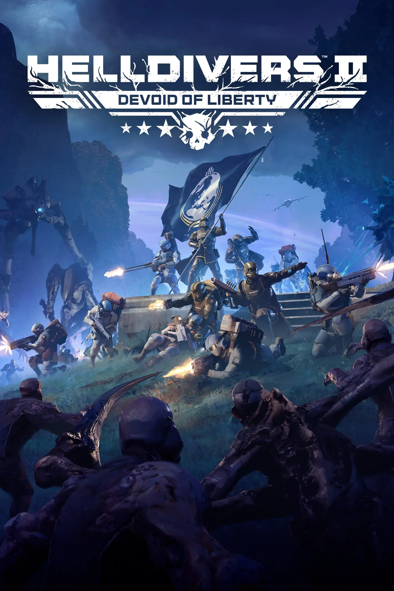
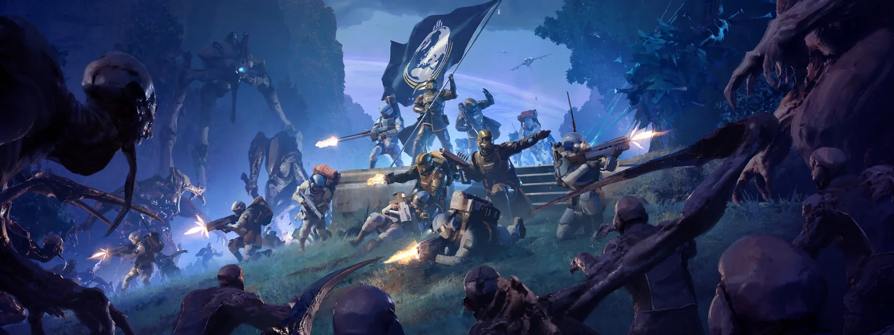
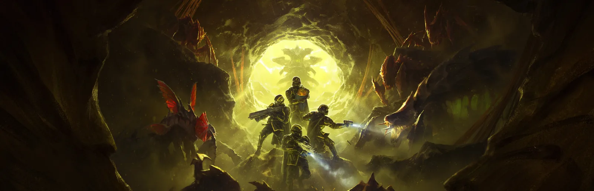
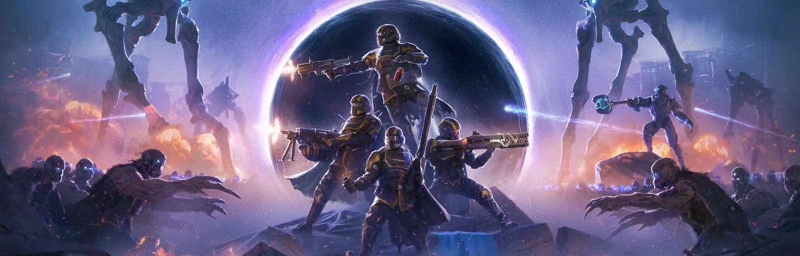
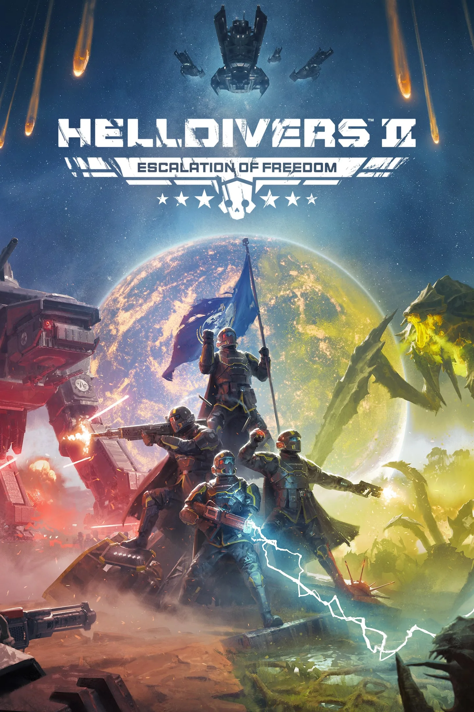
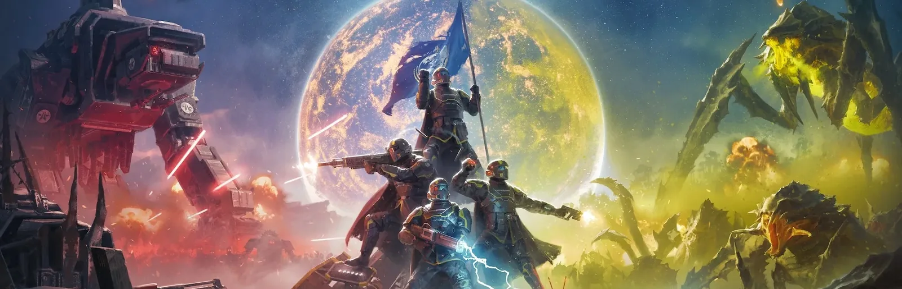
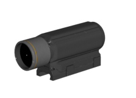

更新日志（补丁说明）

概述
Attention Blueberry-Hugging Helldivers, The Void is proving a worthy challenge. As the brave Helldivers–fueled by unwavering patriotism–charge headlong into the Illuminate's newest nightmares, Super Earth’s engineers have been working around the clock to iron out a few wrinkles in your fight for Liberty.
修复
崩溃修复
- Fixed a crash that could occur in Fullscreen when opening terminals
- Fixed a crash that could occur with superwide windows
Weapons & Stratagem Fixes
- Fixed an issue with the UI not showing all the available stratagems in specific instances.

1.007.000 was a major update released for Helldivers 2, titled 自由真空.
概述
Helldivers, you are needed on the battlefield of a new frontier – one more wild and uncertain than any we have faced prior. We are so close to entering the Void.
Stay frosty, divers. As you fight your way toward the Void, you’ll encounter new, hideously mutated organisms. We have received intelligence reports that indicate these metamorphosed creatures are emerging from the heart of the Void – they are ghoulish diversions wrought into existence by the Illuminate scourge to threaten our freedom.
We aren’t sending you in without backup. You may now gain all 300 ranks of security access and privileges, and we have commissioned SEAF platoons to aid you on the surface of the Void planets.
This is our opportunity to strike and avenge the citizens, SEAF, and Helldivers lost in the Battle for Super Earth.
This is our chance to destroy them.
Patch Highlights
New Illuminate Enemies A new biome full of fresh horrors awaits, the void warps everything it touches and your foes have taken new hideous forms.
- the Crusher is on a deathmarch, capable of regenerating while taking heavy damage, and needs to be worn down quickly and consistently without a moment of pause.
- the Wretch is a relentless and nimble enemy that requires quick trigger fingers and focused aim, as they are able to dodge and leap at the player while advancing to quickly dismantle its weapons along with their will to live.
SEAF Support
SEAF have entered the battle! Super Earth Armed Forces (SEAF) can now appear as a planet modifier, joining you in battle in your missions and enhancing your combat capabilities with a range of new tools (Stim pistols, Heavy Machine Guns and more)
- The SEAF take to the stars. Super Earth High Command has mandated the SEAF be deployed directly to the frontlines of the Galactic Campaign for Democracy. Helldivers will be able to be supported by friendly SEAF NPC troops, with new and improved behavior, weaponry and updated visuals
Level Cap Increased
We've expanded the Helldiver rank system beyond Level 150, adding 15 new ranks and titles that carry Helldivers all the way up to Level 300. Each new rank comes with its own unique title and icon to recognize the most dedicated defenders of Managed Democracy. Super Earth thanks you for your continued service. The fight never ends, and neither does your potential.
Expanded Emote Slots
Helldivers, you now have twice as many ways to express yourself on the battlefield! The emote wheel capacity has been raised from 4 to 8 emotes.
CASTELLAN'S CREED Warbond
Channel the formidable battle prowess of the Astra Militarum’s finest in the HELLDIVERS™ 2 x Warhammer 40,000: Castellan’s Creed Legendary Warbond.
Community Feedback Changes
We’re trying out a new section to shout out some of the fixes and changes that are high up on the community’s wishlist!
GATER Upgrades
Super Earth engineers have replaced the engine and transmission in the GATER in favor of a much more powerful Super V48 Interceptor engine, this has improved its speed and handling.
The Constitution
… has stripper clips!
Assisted Reload Rework
Problem we want to solve:
- The original intent was a tactical action that needed collaboration with a designated reloader that carries the backpack
- We have reevaluated how this works and with how the game has evolved since launch we reached the conclusion that the assisted reload action requires too much coordination which leads to it rarely happening
Intent and expectation with the change:
- We want to reduce the complexity with assisted reloading to promote using it more.
- Allow players to keep their backpack and reload whenever you need, while also allows a teammate to easily help you if the opportunity arises.
The change we made:
- Helldivers can now assist reload as long as one of the wielder and/or reloader of the weapon has the correct backpack
Balancing
Updated icons for backpack weapons and expendable weapons Problem we want to solve:
- Finding a specific weapon in the loadout can be hard to do with all the new weapons added to the arsenal
- It can be hard to know if a support weapon needs a backpack or cannot be reloaded when only looking at the icon.
Intent and expectation with the change:
- We want to make it easier to find specific weapons and to plan your loadout.
- It should be easier to know when a weapon needs a backpack or cannot be reloaded when only looking at the icon.
The change we made:
- Stratagem Weapons that require a backpack now have a backpack icon included on their loadout icons
- Stratagem Weapons that cannot be reloaded now have a drop weapon icon included on their loadout icons.
Decreased heavy landing duration Problem we want to solve:
- The original intent was to make the heavy landing feel like you recovered from a high fall.
- The player lost control for a long time when landing on their feet from a higher fall.
Intent and expectation with the change:
- We wanted to make it smoother to recover from the heavy landing state and not remove the control for too long.
- While still making it feel like a heavy landing recovery
The change we made:
- Decreased the duration for the heavy landing animation by around 40%
Stim action input smoothing Problem we want to solve:
- Players can experience dead input when trying to stim when the stim action was not allowed.
Intent and expectation with the change:
- We want to lessen the feeling of dead input when using the stim action.
The change we made:
- We changed so the stim input is remembered for a short duration when the action is not allowed and will be executed if the stim action is allowed within that duration.
- This works similarly to how the reload input action changes from the last patch.
Ammo re-balance for Short magazines attachments and Secondaries Problem we want to solve:
- The benefits of the short magazines are too few compared to drum magazines.
- The benefits of some of the anti-personnel sidearms do not have enough benefits compared to other sidearm options.
Intent and expectation with the change:
- Give more benefits to short magazines to make the items more useful compared to drum magazines for the same weapon.
- Give more benefits to some of the lesser used anti-personnel sidearms to make the items more useful
The change we made:
- Short magazines got more max spare and starting magazines.
- Some of the anti-personnel sidearms got more max spare and starting magazines.
Primaries
R-2124 宪法
Added a full stripper clip reload when reloading if the magazine is empty.
Primaries attachments
Short magazines for:
- AR-23 解放者
- AR-23P 穿甲解放者
- AR-23C 震荡解放者
- AR-23A 卡宾解放者
- AR-59 Suppressor
- Increased spare magazines 12 to 16
- Increased starting magazines 7 to 9
- AR-59 Suppressor Short Magazines were not increased to values stated in patch notes. This has been confirmed to be unintentional by Arrowhead Support.
- SMG-37 防卫者
- SMG-72 重锤者
- Increased spare magazines 9 to 12
- Increased starting magazines 6 to 8
- SMG/FLAM-34 Stoker
- Increased spare magazines 10 to 13
- Increased starting magazines 6 to 7
- Decreased reload duration 2.8 sec to 2.3 sec
- SG-225 破裂者
- SG-225IE 燃烧破裂者
- Increased magazines spare magazines 9 to 11
- Increased magazines starting magazines 6 to 7
- SG-225SP Breaker Spray&Pray
- Increased spare magazines 16 to 20
- Increased starting magazines 11 to 12
Secondaries
- P-113 Verdict
- Increased max spare magazines from 8 to 10
- Increased starting magazines from 4 to 6
- M6C/SOCOM Pistol
- Increased max spare magazines from 8 to 10
- Increased starting magazines from 5 to 6
- P-19 救赎者
- Increased spare magazines from 4 to 6
战略配备
鹰式凝固汽油弹空袭
Problem we want to solve:
- The Eagle napalm did not feel as effective compared to other Eagle stratagems and napalm stratagems
Intent and expectation with the change:
- Create a larger area of effect for the napalms fire
- Make it more effective compared to other napalm stratagems
The change we made:
- Increased explosion radius 8 to 10m
- More spread out bomb pattern to cover a larger area
MD-17 Anti-Tank Mines
Problem we want to solve:
- The explosion of the mines looks like they can destroy larger things
Intent and expectation with the change:
- The effect of the explosion match should match the visuals better
- Make the mines work in more situations like destroying colony walls and bug holes from the outside
The change we made:
- Increased Demolition strength from 30 to 40
敌人
终结族
追猎虫
Problem we want to solve:
- Hunters and their variants were unable to attack FRVs consistently
- They could only use their tongue to attack, and struggle to find a proper position to launch it
Intent and expectation with the change:
- When Helldivers enter a FRV, Hunters should be able to attack the vehicle more naturally
The change we made:
- We allowed one melee attack to be correctly triggered against FRVs
光能者
证真者
Problem we want to solve:
- When the Helldiver got attacked by a Veracitor while holding a ballistic shield it could create a clipping issue where the arm of the Veracitor could merge with the body of the Helldiver, sometimes resulting in sending the Helldiver at high speed into the air
Intent and expectation with the change:
- Fighting an exomech with a ballistic shield still protects against damage, but Helldivers will now ragdoll when blocking an attack
- Helldivers won’t be sent to low orbit anymore after blocking an attack with ballistic shield.
Ballistic shield will break after around 15 direct hits The change we made:
- Increased Exomech melee’s force strength from 25 to 40
- Conformed Exomech melee’s attack armor penetration to all correctly be Anti-tank.
修复
崩溃修复
- Fixed rare crash that could happen when dropping down the core drill
- Fixed a crash which could occur when spreading fire
- Fixed a very rare crash which could occur when mortar sentries update their targeting aim
- Fixed a crash that could happen sometimes when dropping in on CR7+ missions on Cyberstan

 [PS5][Xbox] Fixed a crash-on-boot that would occur after going into the settings menu with no prior saves, restoring settings to default and restarting
[PS5][Xbox] Fixed a crash-on-boot that would occur after going into the settings menu with no prior saves, restoring settings to default and restarting- Fixed a rare UI crash on shutdown
- Fixed a crash when using multiple monitors with different DPI scales in Windows
Weapons & Stratagem Fixes
- Sway and reload weapon stats now display decimals for better accuracy
- Stratagem Weapons that require a backpack now have a backpack icon included on their loadout icons
- Stratagem Weapons that cannot be reloaded now have a drop weapon icon included on their loadout icons
- You can now assist reload a Helldiver, using ammo from their backpack
- Fixed glitch where Veto pistol would receive one extra round (translating to one extra 6 bullet reload!) from the Siege-Ready armor passive.
- Also corrects a few other weapons which also received one erroneous extra round, magazine or heat-coil. We continue to round partial bonus rounds/mags/coils up in favor of the player.
- Fixed a bug where the camera clipped through the R-36 Eruptor with 2x Tube Red Dot equipped, when inserting the next bullet in ADS at max FoV
- Enemies will no longer spontaneously attack the GATER unless the Helldiver is inside it or if they are drilling. Enemies famously hate the democratic extraction of natural resources.
- Weapons will no longer lock onto the tank of the GATER
- Increased GATER ammo capacity, health, knockback and impact damage. Also made it harder to roll sideways
- Increased the speed and responsiveness of the GATER
- Fixed an issue where the first-person animation of the LAS-58 Talon overloading would make the weapon clip with the SH-20 Ballistic Shield Backpack
- Fixed an issue where the Helldiver would cancel draw animations if they tried to enter the aim state while switching weapons. This would cause the Helldiver to look ready to fire, while still preparing the weapon
- The Ministry of Defense user experience department have made improvements to the TD-220 Bastion Mk.XIV munitions system Heads Up Display. This should make it clearer the main cannon can be reloaded manually.
- Orbital Laser will no longer occasionally get stuck after targeting a flying enemy
- Exosuits will no longer get stuck in trees when being dropped off
- Throwable items are now being visible to other players when the Helldiver is carrying them
- Fixed a bug where the EXO-55 Breakthrough Exosuit would sometimes have the shield arm damage zones protrude through the shield, resulting in the arm taking damage that the shield should have protected
- Fixed case where the Breaker Drill could get stuck on the roof in certain hive world missions
- M-104 Incinerator FRV's mounted flamethrower now shows the correct icon and name
敌人
- Fixed an issue where the Gatekeeper's weapons clipped into each other when their target was too close
- Fixed an issue where visually removing the armor of the Impaler didn't match the gameplay experience
- Impaler close melee attack now has a damage shockwave
- Hunters are now able to attack FRVs more consistently
- Fixed a bug where enemies would disappear when the Helldiver died, thus not being able to know what just killed the Helldiver
- Fixed enemy navigation issues in one of the Take Down Overship locations
- Fixed a bug where the Veracitor's melee attack could clip through Helldivers holding a SH-20 Ballistic Shield Backpack
- Fixed issue where Watchers and Obtruders were not attacking players while mounted behind a Grenadier Battlement
- Fixed an issue where sometimes the Hive Lord scales would not visually break properly (did not affect gameplay behavior)
- Obstruder will now collide correctly with Helldivers
- Reduced clipping between obstruder and Helldivers' vehicles
- Veracitors now guard outposts
- Fixed an issue where the Veracitor clipped through buildings and obstacles while charging. It should now destroy anything in its path and stop when hitting a wall
- Gatekeeper spawn rate has been increased to closely match Veracitor in Encounters
- Fixed a bug for Gatekeeper sometimes appearing to turn in place without moving their legs
- Fixed bug which would on rare occasions cause enemies to not be able to move into the correct attack range
- SEAF soldiers can destroy enemy spawners
- Enemies have learned how to climb stairs during the Establish Communication Uplink missions
Miscellaneous Fixes
- Fixed several mission HUD inconsistencies on certain Hiveworld missions
- Fixed visible holes in the terrain in one of the Disrupt Shield Generator locations
- [Xbox Only] Helldivers can now look at a User's Gamecard when joining an ongoing game
- Fixed a bug where the factory building facade was inverted
- Updated the sounds for picking up medals, requisition slips and super credits one of the missions
- Fixed a bug where the Recoil Simulator was showing all ammo being fired at once
- Vehicle delivery shuttles will no longer get stuck endlessly looking for a place to drop off their deliveries when deployed in dense cities between tall buildings
- Helldivers will no longer ride the victory elevator with their hands in the air like some kind of rollercoaster
- Helldivers now have a chance to find Super Credits in Factory Worlds
- Fixed an issue in the tutorial where the incoming timer for the Orbital Precision Strike could display an incorrect duration
- Optimized various gameplay VFX across the game
- Prevented hit-markers being displayed for hits from indirect explosive damage, damage from your sentries and damage from your orbitals/airstrikes. Melee weapons, laser weapons and flame weapons will now display their hit markers correctly
- Fixed an issue with ragdolling causing invisible collision issues
- Exo Storms of class 2 and 3 will now spawn tornadoes of varying sizes, depending on the intensity of the storm.
- If your Helldiver cannot stim at the exact moment when the stim button is pressed, they will automatically stim as soon as they are able to (up to 2 seconds later)
- Fixed a bug where planting the CQC-1 One True Flag would break animations for other melee weapons.
- Fixed a bug where the CQC-1 One True Flag would be planted at the Helldivers feet instead of being planted in front of the Helldiver
- Fixed an issue where the player could see through the Destroyer ship while in a cutscene
- Decreased the Helldivers heavy land animation from 1.32 sec to 0.8 sec
- Scrolling to the bottom of the Bindings menu with a controller now correctly stops at the last available option instead of disappearing
- Fixed possible graphical artifacts in the Control Center
- Fixed a bug where Network Desync can cause SEAF Artillery shells to not be inserted properly, causing a soft lock
- Fixed a visual bug where the Oil Rig was displaying both destroyed and non-destroyed visual states
- Clothes on the upper body of civilian industrial corpses in cities now have the correct textures
- Optimized tree VFX materials
- Fixed an issue where network problems caused collision errors with enemy corpses.
- Fixed an issue that prevented Super Credits from spawning in Factory Cities
- [PS5 Pro] Added support for the upgraded PSSR upscaler
- Additional improvements to image quality when using upscaling
 [PC] Reduced ghosting around the edges of the screen when using NVIDIA DLSS upscaling
[PC] Reduced ghosting around the edges of the screen when using NVIDIA DLSS upscaling- Fixed blocky artifacts on nebula effects, especially visible on lower render scales
- [PS5 Pro] Fixed an issue on PS5 Pro where certain effects would be rendered through walls
已知问题
https://arrowhead.zendesk.com/hc/en-us/articles/15916898652700--HELLDIVERS-2-Known-Issues
未记录变更
战略配备
- Eagle Smoke Strike
- Increased smoke radius from 8m to 12m per bomb.
- M-102 Gunner FRV
- Renamed from "M-102 Fast Recon Vehicle"
武器
- SMG-203 Gallant
- 晃动从1.2降低至1.0
敌人
超级地球
- SEAF Soldier
- 主体生命值从200降低至150
- Constitution increased from 10 to 75
- Constitution decay rate decreased from 2/s to 1.5/s
- 主体生命值从200降低至150
终结族
- Impaler
- Butt armor decreased from
 Medium to
Medium to  Very Light
Very Light
- Butt armor decreased from
任务
已注意到以下改动  Super Helldive.
Super Helldive.
- Seize Industrial Complex
- Removed 1 "Annex Quarry" main objective
- Annex Untapped Mineral Sites
- Removed 1 "Obtain Coordinates" sub-objective
- Removed 1 "Acquire Soil Scan Data" main objective
- Sabotage Supply Bases
- Now appears on
 Super Helldive outside of Megafactories and Megacities.
Super Helldive outside of Megafactories and Megacities.
- Now appears on
- Confiscate Assets
- Removed 1 "Seize Fusion Batteries" and 1 "Seize High-Grade Platinum" main objectives
- Destroy Command Bunkers
- Removed 1 "Destroy Command Bunker" main objective
- Commando: Acquire Evidence
- The Tactical Video Camera now takes time to record evidence, instead of marking it as recorded instantly.
- Conduct Geological Survey, Retrieve Valuable Data
- Now appear on
 Illuminate controlled planets
Illuminate controlled planets
- Now appear on
- Free Colony
- Added 1 "Raise Flag of Super Earth" main objective

🌍 概述
Attention Helldivers,
The race to assemble the TCS+ is heating up and High Command is rolling out some stability improvements to ensure every Helldiver makes it to the battlefield in style.
📍 Patch Highlights
- Voice chat audio bug has been 以民主之名镇压.
- The crashes relating to the FRV and patterns have been 时髦地解放.
🔧 修复
崩溃修复
- Fixed a crash that occurred when switching between fullscreen and windowed modes
- Fixed a crash when cycling through vehicle customizations
- Fixed a crash that occurred during button input on the vehicle customization menu
- Fixed a crash which reliably occurred when the number of unique vehicle patterns in a lobby exceeded 32
- Fixed a crash which occurred when hosting “Conduct Geological survey mission”
Miscellaneous Fixes
- Fixed a bug where players would not hear the voice chat after rejoining a lobby
- Fixed an issue where new players got stuck finding their first mission
🧠 KNOWN ISSUES
https://arrowhead.zendesk.com/hc/en-us/articles/15916898652700--HELLDIVERS-2-Known-Issues
🌍 概述
Attention Helldivers,
High Command has authorized a significant tactical update with both content and quality of life upgrades. We are deploying Helldivers in new Galactic Campaigns, making upgrades to the new diver training program, and making essential fixes and upgrades across the board.
We have also made changes to weapon, stratagem, and enemy balancing based on feedback from Helldivers on the frontlines, including reductions to enemy durable damage and a decreased exosuit cooldown.
Helldivers, we are committed to making the necessary upgrades to keep you in the fight. Because you have never given up on Managed Democracy, we will never give up on making it easier for you to spread.
📍 Patch Highlights
- New Galactic Campaigns
- New "Control Center" terminal for Campaigns & Major Orders
- New Biome - Forest (Fall)
- Bastion Tank Patterns
- Vehicle Armour and Enemies Armour Penetration (AP) Rebalance
- Sentry Health Rebalance
- Enemy Rebalances
- Including 耐久伤害 Reductions
- Reloading Improvements
- 已减少 Exo Suit 冷却
- Weapon Rebalances
- Throwable Amount Rebalance
- Stratagem Rebalances
- Orbital Damage Rebalance
- 矛枪 和 灭菌器 Rebalance
- Bug Fixes
- 崩溃修复
- Weapon & Stratagem Fixes
- 敌人
- Miscellaneous
Introducing the CONTROL CENTER terminal
Super Earth High Command has completed fleet-wide upgrades to the previously unused terminal opposite the armory. Now Helldivers will be able to get more context to the ongoing Campaigns and their subsequent Major Orders. Each Campaign will come with its own potential reward, should the Helldivers be victorious in a majority of the Major Orders within it. The terminal will also feature an archive (to be populated as the first campaign concludes) so that new and returning Helldivers can read up on the twists and turns of previous campaigns.
⚖️ 平衡性调整
General balance changes
载具护甲与敌人穿甲能力重新平衡
- Super Earth vehicles now have more accurate Armor values (Bastion gets heavy armor, exosuits a mix of heavy and medium armor, ballistic shield heavy armor).
- Some enemies have received increased armor penetration values so they can deal with the vehicles, but not all. There will be a lot of smaller enemies and explosions that won't be able to hurt something like the Bastion or the Exo Suits (scavengers, Automatons small arms fire, hunters, small to medium obstacle explosions, cyborg small arms etc).
- But there are still a lot in the enemies arsenal that can hurt you (and also important is that a lot of YOUR arsenal now has a harder time hurting your own vehicles).
- Some enemies have had their durable damage reduced
- There are too many changes to properly list, so we ask you to play and tell us how it feels. The intent is the following
- The Bastion tank should feel "tankier" and ignore small attacks, withstand more medium attacks and its survivability against heavy attacks should be unchanged
- The Exo Suits have a similar change as the Bastion tank in terms of ignoring more small attacks and withstanding medium attacks better. The increase in health should overall make it feel a bit more tanky even against heavy attacks.
- the FRV has received an increase in health that will make it handle medium attacks similar to before, but be able to withstand heavy attacks better granting better survivability.
- the 防弹盾牌 should feel like it can ignore small attacks and handle medium attacks better.
哨戒炮生命值再平衡
- Increased the health of all sentries by 100% to compensate for the general damage increase of enemies vs vehicles.
- We have previously increased durable damage on a lot of enemies and since sentries are durable they have lost some of their utility. We didn't want them to become squishier, this change should improve their versatility on the battlefield.
装填改进
- Improvements to make reloading more responsive, part of this is allowing reloading while dodge diving, also remembering the reload state better so if you're ragdolled while reloading you will continue it when regaining control.
- Introduced the concept of delayed reloads. If you try to trigger a reload while the player is not allowed to do so, the reload will be delayed until the player is able to reload with a maximum of 1.2s delay from when the reload input was pressed.
堡垒涂装自定义
- If you own the vehicle patterns from a Premium Warbond, they can now also be applied to the Bastion Tank! It does not apply to Legendary Warbonds retroactively at this time.
缩短外骨骼装甲冷却时间
- Reduce the cooldown of mechs from 10 minutes down to 8. The intent is to find a better balance with mechs and allow more time with fun stratagems
投掷物数量再平衡
- Intent is to make some of the less used throwables more available and viable options
轨道武器伤害再平衡
- Intent is to make the larger orbitals feel more like the large projectiles from orbit as they are so the projectile and explosion damage should better match that.
- Larger projectiles explosions like the 380mm and 120mm are increased to make close hits more effective vs larger enemies like Chargers.
- Compared to explosions like the Ultimatum these will have less damage at the center, but also less damage fall off so it will have a more consistent damage over its total area.
- The Railcannon also got more damage to be more effective vs some of the largest enemies like the 噪轰引擎. It will still not one shot the largest enemies like 移动工厂, 霸王虫 and similar.
Primary weapons
- Moved scope offset closer to the scope so it will be easier to use in ADS mode.
投掷物
- Increased refill from 1 to 2
- Increased max amount from 3 to 4
- Increased start amount from 2 to 4
- Increased refill from 2 to 3
- Increased max amount from 4 to 5
G-50 Seeker, G-12 High Explosive, G-16 Impact, G-7 Pineapple, G-23 Stun, G-10 Incendiary, G-13 Incendiary Impact
- Increased start amount from 3 to 4
- Increased refill from 2 to 3
- Increased max amount from 4 to 5
战略配备
- Intent: Make it better at one shotting smaller heavies like Chargers, Hulks, Harvesters (without shields). It can also kill some larger enemies like Tanks well. It is still not a 100% guaranteed kill, but it will be more reliable.
- Increased explosion damage 200 to 300
- Increased explosion durable damage 200 to 300
- Increased explosion armor penetration Medium to Heavy
- Rockets are fired in a closer pattern to each other to make it easier to hit smaller targets.
- Lower force impulse on explosion from 40 to 10 (This is to make enemies not fly away to much when they die, because we increased the armor penetration of the explosion)
Orbital Precision Strike, Orbital 380mm HE Barrage, Orbital Walking Barrage, SEAF Artillery 炸弹/高当量炸弹
- 投射物标准伤害从3,500提升至4,000
- 投射物耐久伤害从3,500提升至4,000
- Explosion standard damage从1,000提升至1,500
- Explosion durable damage从1,000提升至1,500
- 投射物标准伤害从2,500提升至3,500
- 投射物耐久伤害从2,500提升至3,500
- Explosion standard damage从750提升至1,200
- Explosion durable damage从750提升至1,200
- 投射物标准伤害从7,500提升至10,000
- 投射物耐久伤害从7,500提升至10,000
- The projectile was negated by the Gas resistance armor which did not make much sense. The explosion of the projectile is still gas elemental.
- Change the projectile damage type from gas to none
- Increased ammo capacity from 100 to 125
- Increased starting amount of magazines from 2 to 3
- Will be affected less by wind by 60%
所有 外骨骼机甲
- Reduced the cooldown from 10 minutes down to 8.
- Official patch notes incorrectly state "Reduced the cooldown from 10 minutes down to 8". Cooldown was actually reduced to 7 minutes (420 seconds)
- Main armor increased from Medium to
 Heavy
Heavy - Main health从1,600提升至1,800
- Cockpit armor increased from Medium to Heavy
- Arm armor increased from
 Light to Medium
Light to Medium - 手臂生命值从600提升至800
- Hips armor increased from Medium to Heavy
- Leg armor increased from Light to Medium
- 腿部生命值从400提升至550
- Official patch notes incorrectly state "increased health from 400 to 550". Health before patch 1.006.300 was 500
M-102 Fast Recon Vehicle
- Increased health from 2,000 to 2,400
- Increased health of doors by 50%
- 生命值从100提升至150
- Increased health of tires from 300 to 350
敌人
终结族
- Adjusted the chargers turning arc to make them easier to avoid
- Increase their recovery time after the charge to create a window of opportunity (+1 second). The charger basically keeps running and struggle to stop if it misses its target.
- To compensate for this, charge speed has been slightly increased (8->9m/s)
- Removed cowardly behavior, it will now be more aggressive.
- Reduced durable damage of normal attack from 50 to 40
- Reduced durable damage of tongue attack from 45 to 30
- Reduced durable damage of pounce attack from 50 to 35
Warriors and spewers
- Reduced durable damage of normal attack from 80 to 65
- Reduced durable damage of tongue attack from 50 to 35
机器人
- Reduced health from 11,000 down to 9,000
- Reduced max turn angle of its upper body so it cannot turn as far as it could previously (from 180 degrees down to 140)
- Amount of vox engines allowed to be active at the same time limited to 3
- Reduced health of their cannon turrets from 8,000 down to 3,500
- Reduced the armor of their cannon turrets from
 Tank I to Heavy
Tank I to Heavy - Reduced durable on cannon turrets from 1 to 0.7
- Increased damage of cannon turrets explosion to significantly hurt the vox engine when it dies
- Explosion standard damage从300提升至5,000
- Explosion durable damage从300提升至5,000
- Torso health从21,000降低至9,000
- Undercarriage health从11,000降低至9,000
- Cannon destruction explosion radii changed
- Inner radius increased from 0.8m to 1m
- Outer radius decreased from 8m to 4m
- Shockwave radius decreased from 12m to 6m
- Plasma Macro-Culverin explosion armor penetration increased from
 Medium to
Medium to  Heavy
Heavy - Icarus Missile Launcher Pods explosion armor penetration increased from Heavy to
 Anti-Tank I
Anti-Tank I - Plasma Duster Miniguns Direct Angle armor penetration increased from
 Light to Medium
Light to Medium
光能者
- Added one attack pattern (short attack burst followed by a longer one)
- Reduced the current attack duration
- Reduced accuracy on moving targets
🔧 修复
Special Shoutout
- Stimming is no longer interrupted by stagger
崩溃修复
- Fixed a rare crash that would happen when a player joined a game
- Fixed a rare crash which would occur when causing an excessive amount of explosions in a single frame
Weapons & Stratagem Fixes
- Fixed a bug where several weapon customizations weren't properly saved when the option was ticked in the player settings
- B/FLAM-80 Cremator no longer shows the 'Heavy Armour Penetrating' stratagem trait, following similar incendiary weaponry
- A/FLAM-40 Flame Sentry 和 EXO-51 Lumberer Exosuits flamethrower can now damage targets within 3 meters of the sentry
- P-33 Missile Pistol weapon now shows the right trait tags in the menu
- the R-2 Amendment reload now continues correctly if interrupted - if reload is interrupted early, it will not lose magazines
- The secondary weapon's chosen customization correctly persists after death if the menu option is selected
- Orbital Gatling Barrage will play the correct audio
- the StA-X3 W.A.S.P. Launcher can target illegal broadcast transmitter towers
- Part of the Bastion Tank's barrel can be damaged with a light penetration weapon
- Phalanx divers rejoice! Laser beams, explosion damage, electrical arcs and melee attacks no longer collide with the directional shields of your team-mates when hit from behind.
- SG-97 Sweeper should now reliably eject shells when slamfiring
敌人
- 已修复 Veracitor patrol animation
- Fixed physics to allow more representative shooting on the Dragonroach abdomen
- Veracitor will not trigger its charge within a narrow path, reducing instances where they'll clip though destructible obstacles
- Improved several cases where enemies would previously navigate straight through environmental features such as large rocks and building rubble
Miscellaneous Fixes
- A hidden broadcast terminal was relocated to its correct spot so that the Helldivers can once again access it
- Fixed rare bug that would cause grass and trees to not render correctly
- Players are no longer removed from terminals when switching between controller and Keyboard and Mouse
- D-pad/arrow keys navigation can come up and down when viewing teammates' equipment loadout
- Traversing through foliage such as bushes will no longer interrupt sprinting, which should result in less momentum loss
- Fixed several issues with some mission assets animation being out of sync for joining players
- Fixed issue where the map marker for "Retrieve Mutant Larva" objective always displayed in a radius
- Hints have better placements for the reinforcement Hellpods in commando missions
- SEAF SAM Site missiles now have better software to detect and detonate near enemy air units
- Fixed a bug where certain Automaton mines turned invisible when a nearby mine exploded
- Fixed a case where the Helldiver head twitched when leaving the Hellpod
- M-102 Fast Recon Vehicle no longer plays audio for doors if they have been removed from the vehicle
- Parts of the TD-220 Bastion MK XVI barrel base can no longer be damaged with a light penetration weapon
- Fix issues with certain physics collisions having no audio
- Fixed Automaton mines getting under ground after a nearby mine explodes
- Fix several climbing and auto climbing issues
- Fixed an issue where an Eradicate Automaton Forces level could generate underwater
- Fixed a traversal issue where Chargers could not move across one of the levels in the Retrieve Valuable Data 任务
- Fixed a traversal issue where enemies could not reach the player in one of the levels in the E-710 Extraction 任务
- Fixed a traversal issue where enemies could not reach the player in one of the levels in the Annex Untapped Mineral Site 任务
🧠 KNOWN ISSUES
https://arrowhead.zendesk.com/hc/en-us/articles/15916898652700--HELLDIVERS-2-Known-Issues
未记录变更
战略配备
- MS-11 Solo Silo
- Added the Expendable trait
敌人
终结族
- Hunter
- Serrated Slash durable damage从50降低至40
- Acidic Lash durable damage从45降低至30
- Leap durable damage从50降低至35
- Predator Hunter
- Spit: Slight and Large Angle armor penetration increased from Heavy to Anti-Tank I
- Spit: Slight and Large Angle armor penetration increased from
- 所有 Warrior Variants
- Bile Spewer
- Corrosive Regurgitation: Slight and Large Angle armor penetration increased from Heavy to Anti-Tank I
- Heavy Swing armor penetration increased from Medium to Heavy
- Heavy Swing durable damage从80降低至65
- Corrosive Regurgitation: Slight and Large Angle armor penetration increased from
- Nursing Spewer
- Putrid Regurgitation: Slight and Large Angle armor penetration increased from Heavy to Anti-Tank I
- Heavy Swing armor penetration increased from Medium to Heavy
- Heavy Swing durable damage从80降低至65
- Putrid Regurgitation: Slight and Large Angle armor penetration increased from
- Spore Burst Bile Titan
- Bile Spew: Direct, Slight, and Large Angle armor penetration increased from Heavy to Anti-Tank I
- Bile Spew explosion armor penetration increased from Medium to Heavy
- Bile Spew: Direct, Slight, and Large Angle armor penetration increased from
- Hive Lord
- Bile Spew: Direct, Slight, and Large Angle armor penetration increased from Heavy to Anti-Tank I
- Bile Rain: Direct, Slight, and Large Angle armor penetration increased from Heavy to Anti-Tank I
- Bile Spew: Direct, Slight, and Large Angle armor penetration increased from
- Alpha Warriors
机器人
- Vox Engine
- Torso health从21,000降低至9,000
- Undercarriage health从11,000降低至9,000
- Cannon destruction explosion radii changed
- Inner radius increased from 0.8m to 1m
- Outer radius decreased from 8m to 4m
- Shockwave radius decreased from 12m to 6m
- Plasma Macro-Culverin explosion armor penetration increased from Medium to Heavy
- Icarus Missile Launcher Pods explosion armor penetration increased from Heavy to Anti-Tank I
- Plasma Duster Miniguns Direct Angle armor penetration increased from Light to Medium
- Factory Strider
- Fusion Repeater Cannon: projectile Large Angle armor penetration increased from Heavy to Anti-Tank I
- Fusion Repeater Cannon: explosion armor penetration increased from Medium to Heavy
- Fusion Repeater Cannon: projectile Large Angle armor penetration increased from
- War Strider
- Fusion Culverins: Direct Angle armor penetration increased from Heavy to Anti-Tank I
- Fusion Culverins: Direct Angle armor penetration increased from
- Agitator
- Plasma Charger angled armor penetration increased
- Direct and Slight Angle armor penetration increased from Light to Medium
- Large Angle armor penetration increased from
 Very Light to Light
Very Light to Light
- Direct and Slight Angle armor penetration increased from
- Plasma Charger Overcharge: Slight Angle armor penetration increased from Medium to Heavy
- Plasma Charger Overcharge: explosion armor penetration increased from Medium to Heavy
- HE Grenade: explosion armor penetration increased from Medium to Heavy
- Plasma Charger angled armor penetration increased
- Incendiary MG Devastator
- Fusion Conflagrator angled armor penetration increased
- Direct and Slight Angle armor penetration increased from Light to Medium
- Large Angle armor penetration increased from Very Light to Light
- Direct and Slight Angle armor penetration increased from
- Shield is destructible and dropped when destroyed (this change was intended to be applied in 1.006.202).
- Armor: Heavy
- Health: 800HP
- Durable: 0.7 (70%)
- Armor:
- Fusion Conflagrator angled armor penetration increased
- Incendiary Rocket Raider
- Portable Fusion Cannon: projectile Direct Angle armor penetration increased from Heavy to Anti-Tank I
- Portable Fusion Cannon: projectile Direct Angle armor penetration increased from
- Brawler, Commissar, Jet Brigade Commissar, Marauder, Assault Raider, MG Raider, Jet Brigade MG Raider, Trooper, Jet Brigade Trooper
- Anti-Air Emplacement
- Quad Heavy Fusion Cyclers Direct Angle armor penetration increased from Heavy to Anti-Tank I
- Quad Heavy Fusion Cyclers Direct Angle armor penetration increased from
- Bunker Turret
- Direct Angle armor penetration increased from Heavy to Anti-Tank I
- Direct Angle armor penetration increased from
光能者
- Gatekeeper
- Volley projectile angled armor penetration increased
- Direct Angle armor penetration increased from Heavy to Anti-Tank I
- Slight and Large Angle armor penetration increased from Medium to Heavy
- Direct Angle armor penetration increased from
- Volley explosion armor penetration increased from Medium to Heavy
- Charged shot explosion armor penetration from Medium to Heavy
- Volley projectile angled armor penetration increased
- Overseer
- Projectile Direct Angle armor penetration increased from Heavy to Anti-Tank I
- Projectile Slight and Large Angle armor penetration increased from Medium to Heavy
- Projectile Direct Angle armor penetration increased from
Environmental Hazards
- Ice Plant
- Stagger Force increased from 15 to 25. As a result, Helldivers may now be ragdolled when caught in its explosion.
🌍 概述
Attention Helldivers,
This hotfix addresses a number of issues reported after the release of Machinery of Oppression (6.2.5).
We’re continuing to track feedback around upscaling quality and performance, and Nixxes and Arrowhead are actively working on further optimizations and improvements.
📍 Patch Highlights
- [PC] Improved image quality when using NVIDIA DLSS, AMD FSR or Intel XeSS upscaling.
- [Xbox] Improved AMD FSR upscaling image quality
- [PS5] Improved AMD FSR upscaling image quality
- [PS5 Pro] Improved Sony PSSR upscaling image quality
🔧 修复
- [Xbox] Fixed an out-of-memory crash on Xbox Series S.
- [PC] Fixed crashes related to Intel XeSS upscaling.
- [PC] Dynamic Resolution Scaling is now turned off by default.
- We’ve seen your reports on Dynamic Resolution Scaling causing graphical issues on some graphics cards. While working on a proper fix, we’ve disabled DRS by default on PC. You can still manually enable DRS if desired.
🧠 KNOWN ISSUES
https://arrowhead.zendesk.com/hc/en-us/articles/15916898652700--HELLDIVERS-2-Known-Issues
📍 Patch Highlights
- Added support for upscalers
- PC:
- FSR 3.1.5
- GPUs that support it will run FSR 4.0.3
- DLSS 4.5
- XeSS 3.0
- Xbox Series X:
- FSR 3.1
- PS5 (base)
- FSR 3.1
- PS5 Pro
- PSSR 1
重要提示：主机玩家默认启用画面升频，PC 玩家可选择激活画面升频。我们期待听到您对这些期待已久的功能的反馈！
- Added Variable Refresh Rate (VRR) support for PS5 and PS5 Pro
- Added Variable Rate Shading (VRS) for supported devices
- VRS can help improve performance by reducing shading rates on certain areas of the image, resulting in less work for the GPU for similar looking close pixels
- Added support for DRS on PC and PS5
- With the introduction of DRS on all platforms we have also upped the resolution on Xbox Series X and PS5 to 1440p in the Performance preset
- We have also upped the resolution in PS5 Power Saver mode to 1440p
- Added NVIDIA's Reflex for NVIDIA GPU's
- Added AMD's Anti-Lag 2 for AMD GPU's
🔧 修复
- Fixed an issue where Helldivers were unable to manually climb small obstacles and ledges without auto-climb.
- Fixed multiple rendering issues and improved performance and image quality across all platforms.
- Added additional resolution options in the display settings for monitors with a wide range of available resolutions.
- Improved the performance of the high reflection setting.
- Improved VRAM management on PC to improve performance on systems with limited VRAM.
- Inviting non-friends via the social menus recent-tab will now send a PSN system invite if both are on PSN
🧠 KNOWN ISSUES
https://arrowhead.zendesk.com/hc/en-us/articles/15916898652700--HELLDIVERS-2-Known-Issues
🔧 Fixes
- Wwise audio fix which will squash several audio issues.
🧠 KNOWN ISSUES
https://arrowhead.zendesk.com/hc/en-us/articles/15916898652700--HELLDIVERS-2-Known-Issues
⚖️ 平衡性调整
We have reverted the Hive Guard and fixed an issue introduced in 补丁 6.2.1 where armor values were incorrectly swapped between the Legs and Claws.
已更新虫窝护卫数据：
主体
- Armor increased from Very Light → Light
- Health increased from 375 → 500
头部
前腿
利爪
- Armor decreased from Medium → Very Light
- Note: This change occurred in the previous patch.
🧠 KNOWN ISSUES
https://arrowhead.zendesk.com/hc/en-us/articles/15916898652700--HELLDIVERS-2-Known-Issues
未记录变更
Keybinds
- Helldivers not using the standard "QWERTY" keyboard layout now will find that the unbindable keys that replace certain UI functions now correspond to what their layout replaces relative to the standard keybinds. Where, by default,
Q和Escroll the difficulty select on the Galactic War map, Helldivers using a nonstandard layout such as DVORAK, will find that the apostrophe and period keys'和.are used instead.
🌍 概述
来自超级地球最高指挥部的消息
The beauty of our most Democratic galaxy is truly unparalleled. As we push into new territories, we have discovered planets with lush, tranquil forests with winding paths and shade from massive trees.
Underneath the peaceful tree canopies, our Citizens can take time to unwind and reflect on the glory of Managed Democracy and the good, achieved by Super Earth's most illustrious heroes.
However, not everything on these planets is what it seems. We have detected several of our Un-Democratic foes on the perimeter and there have also been some alarming signals on Gloom-infested planets--larger than the typical Terminid convoys, bearing a striking resemblance to some of the Bile Titan signals detected in other regions.
It is time to arm yourself with the new Exo Experts Warbond* equipped with new exosuit designs well-suited for close combat and fire-based offense. Originally deployed to clear land for a six‑star holiday resort, these suits have since been repurposed to leave enemies with nowhere left to hide.
保持警惕，绝地潜兵们——这些森林暗藏耳目。
📍 Patch Highlights
- 2 new Biomes
- One new enemy variant
- Major Exo Suit rebalance
- Enemy rebalances
- Side-Arm and Stratagem rebalances
- Several known issues resolved
Resolved known issues
- Defend city events appear Super Earth controlled again
- Destroying the Air Base Control Tower with a 便携式地狱火炸弹 no longer blocks objective progression.
- Enthusiastic Mirth emote sound has been fixed, laughter is once again permitted on the battlefield.
- Fleshmobs are no longer able to clip through various objects when charging.
- We have restocked the fireworks for the celebration when players have completed the tutorial (good job, you have earned them)
- Gunships and Shriekers are now spawning during operations with the appropriate effect present.
- the Double-Edged Sickle no longer emits a high-pitched drone when firing.
- Players will no longer be redirected to the Python Commandos Warbond instead of 绝密军团 and vice versa when selecting 'Acquisitions' in the Ship Management menu.
- Sparks and bug spawner smoke now have higher material resolution.
⚖️ 平衡性调整
Exo suits rebalance
We agree with the community that the 外骨骼机甲 can take too little damage and break too easily, especially against the Automaton faction. Therefore we have made a bigger balance pass to increase its durability.
- Increased main health pool from 850 to 1600
- The Exo suit will only die if the main healthpool is depleted. Before it could die if specific healthzones were depleted.
- Increased vulnerability to acid attacks by 50%
- Fixed so parts of the cockpit healthzones are not blocked by the ragdoll actor. Now the cockpit zones will be damageable in the right way.
- Increased Exo suit arms health from 350 to 600
- Exo suit arms now also have a 50% explosion resistance (just like the main body)
- Removed constitution and bleedout on the Exo suit arms.
- Exo suits no longer lose all mobility when both legs are broken.
- Can now be staggered, have stagger strength 45. Stagger does not affect the ability to shoot.
- Removed most health zones that do not affect the main health and are mainly visual effects. The reason is to improve performance. For example tow cables and similar items can not be damaged or destroyed anymore.
Enemy damage against vehicles
We think automatons and illuminates do damage reasonably well against the vehicles especially now with the changes to the Exo suits, the Terminids however have fallen behind a bit in their ability to deal with vehicles so we have made some buffs to their damage against durable targets.
Gas effects
Now it also slows the enemies with 25% when they are confused by the gas, the slow of course also affects you. Larger enemies like the Bile Titan 和 移动工厂 that do not become confused also are therefore not slowed.
武器
- Decreased stamina cost from 5% to 3%
- Increased damage from 75 to 120
- Increased durable damage from 38 to 60
- Decreased stamina cost from 5% to 3%
- Decreased stamina cost from 5% to 3%
- Decreased stamina cost from 5% to 4%
- Decreased stamina cost from 5% to 3%
战略配备
- Increased and moved damage hit box to make it easier to hit the enemy
- Longer window for when damage hit box is active
- Armor penetration increases twice as fast
- Moves slower when it does damage to an enemy
- Decreased stamina cost from 10% to 5%
- Decreased stamina cost from 5% to 3%
SH-20 Ballistic Shield Backpack
- Increased health from 600 to 1000
- Increased amount of missiles in the backpack from 3 to 4
- Increased range from 20m to 34m
- Increased damage by 50%
- Increased how fast it panics enemies
- Increased heat capacity from 200 to 250
- Updated gas spray VFX
- The Gas lingers for longer and has longer range
敌人
终结族
- Spew explosions are smaller to match the visuals better
- Decreased Explosion inner radius from 2.25 to 1
- Decreased Explosion outer radius from 3.5 to 2.2
- Increased armor on head and front legs from Medium to Heavy (3 to 4)
- Decreased armor on body and claws from Light to Unarmored (2 to 1)
- Decreased health on body from 500 to 375
- Increased durable damage on melee attack
- Increased durable damage
- Increased durable damage
- Increased durable damage
- Increased durable damage
所有 Warrior 变体
- Increased durable damage
- Slight increase in durable damage of its melee and charge attack
- Increased durable damage on many of its physical attacks
Dragon Roach
- Increased durable damage on its flame attack
- Increased durable damage from 30 to 45
- Increased stagger force needed from 45 to 50
- Slight increase in durable damage on its melee attack
机器人
- increased durable damage of the melee attacks
- Small arms fire from raiders, turrets, devastators, slight increase in durable damage
- increased durable damage
- increased durable damage on melee attack
- Shield is destructible and dropped when destroyed
- 护甲 Heavy
- Health 800
- Durable 0.7
- 护甲
- Decreased stagger strength on rockets projectile from 50 to 35
- Increased durable damage on flamer attack
所有坦克主体（底部部分）
- Increased health on Main health pool from 3000 to 4000
- Increased health on back vents from 750 to 1500
- Increased armor on back vents from Medium to Heavy
- Remove tracks damage zone when the zone is dead
- Removed damage cap to carry through from tracks to main health (so if you overkill it more damage goes to main health)
- Reduced durable resistance on tracks (1.0 to 0.8)
- Reduce overlap damage zones when its driving to match visuals better and do less damage
- Reduced turn speed
弹幕坦克 炮塔
- Increased health on weak spot on front and back from 750 to 1500
Illuminates
- Increased durable damage
- Lower destruction strength needed to destroy it from 30 to 20
- Added health function with 200 health and Light 护甲
🔧 修复
崩溃修复
- Fixed a rare AI crash
- Fixed a crash which could occur when using underbarrel firing modes
- Fixed a rare crash that was happening whilst fighting enemies, predominantly against the Illuminates
- [PS5 Only] The title no longer crashes when selecting a language after purchasing a PS Plus membership on the upsell screen
Weapons & Stratagem Fixes
- Added missing haptics feedback when firing the Automaton MG Emplacement
- SEAF Artillery will no longer let you insert a shell and then immediately remove it, thus softlocking the gun
- Destroying the Air Base Control Tower with a 便携式地狱火炸弹 in a multiplayer session, no longer blocks objective progression
敌人
- Fleshmobs now can deal damage to vehicles
- Destroying a Terminid egg while standing against it, can no longer send the Helldiver flying
- Shooting marks on the Exomech will now appear on the correct body part that was being shot at
- Fixed bug where certain enemy kills would not count towards order progression
- Factory Striders will no longer count as Fabricators in the 摧毁机器人构筑者 任务
- Stratagem hellpods can no longer land on the Air Control Tower during the Evacuate Priority Citizens missions
Miscellaneous Fixes
- Fixed a bug where the Helldiver could get soft-locked in the loadout menu, if they had less than 4 total stratagems, where one or more was temporarily disabled
- Fixed squares sometimes appearing in the minimap if Terrain Quality was set to low
- Extraction shuttle now flies straight upon extracting from cities
- Fixed an instance where the Helldiver head twitched when leaving the Hellpod
- Fire should now more consistently scorch the terrain under it. Note: This has no changes to gameplay
- Fixed several floating items on a magma planet
- Fixed a gap in the terrain in the tutorial area
- Optimized performance of Strafing Run particles for DSS Eagle Storm and Air Support stratagems
- A message will be displayed in the stratagem HUD when stratagems fail to be called in
- Tutorial: Flag celebration now has been fixed with proper fireworks timing and lighting
- Players can no longer fall through the ship roof in Illuminate invasion missions
- Fixed a bug where the Helldivers head twitched in the end screen, before and after using Victory Poses
- 震颤 ambient sound now fades out properly
- The Burier of Heads title has been thoroughly investigated, and since no signs of alleged dissident connections could be discovered, the title has been reintroduced. Helldivers who have unlocked this title through the Dust Devils Warbond should now find it among the other titles in the customization menu
- Fixed issue where the player could interact with the Hive Core Drill terminal from behind
- Enemy visibility and hearing should now be affected more by different weathers. This means enemies should generally have a harder time spotting and hearing helldivers in more intense weather scenarios
附注：
我们现已在启动时引入验证检查，以帮助解决过时驱动程序导致的潜在问题。
🧠 KNOWN ISSUES
https://arrowhead.zendesk.com/hc/en-us/articles/15916898652700--HELLDIVERS-2-Known-Issues
未记录变更
战略配备
外骨骼机甲
- 驾驶舱生命值从500降低至400
- Rear Cockpit health从500降低至400
- Hips health从500降低至400
腿部
- 生命值从250提升至500
- Constitution reduced from 350 to 0
Arms Main
- 生命值从350提升至600
- Constitution reduced from 250 to 0
敌人
终结族
- Hunter
- Tongue durable damage从30提升至45
- Serrated Slash durable damage从35提升至50
- Claws Changed
- Armor reduced from Medium to Very Light
- Reduced health from 125 to 100
- Transfer to main decreased from 45% to 25%
- Armor reduced from
- Heavy Claws durable damage从55提升至80
机器人
- Launch Tubes % to Main reduced from 200% to 150%
概述
- New "Low Energy Mode" for the PS5 version of Helldivers 2
- When enabled, Low Energy Mode reduces your console’s power consumption during play by limiting background processes and lowering system resource usage during idle and low-intensity moments.
Helldivers on PS5
- Reduced power draw during gameplay and idle states
- Slightly lower fan activity and system temperatures
- No impact on core gameplay performance or online functionality
修复
Miscellaneous Fixes
- [Xbox Only] Fixed inviting others to your game on Xbox after previously leaving a game.
- [Xbox Only] Fixed several desync and loading issues, when a host invites several clients or when a blocked client hotjoined the host which was in a party with another client
修复
崩溃修复
- Fixed a crash happening when swapping between weapons while planting the One True Flag in multiplayer.
Weapons & Stratagem Fixes
- the SMG-72 Pummeler is now able to reload if the Weapons magazine has bullets in it.
Miscellaneous Fixes
- The Burier of Heads title has been thoroughly investigated, and–since no signs of alleged dissident connections could be discovered–the title has been reintroduced. Helldivers who have unlocked this title through the Dust Devils Premium Warbond should now find it among other titles in the customization menu.
- Increased amount of fog in the distance to look more cohesive and provide more ambient light (this is especially noticeable on a sandy moon).
- Increased brightness during Exostorms, to combat cases where it could get really dark within the Destroy Exospire mission.
Patch Highlights
- New enemies
- Illuminate Piloted Constructs
- A new variant of the Watcher:
- 突入者: inserts itself where it is not wanted.
- New Sub-Faction: Illuminate Appropriators
Introducing the Illuminate Fleets
- the Mindless Masses are set on taking over swaths of territory, with fewer Illuminates units deploying vast hordes of voteless 和 肉瘤体.
- the Appropriators field only Illuminate units, supported by a variety of constructs---piloted and otherwise.
Illuminate Exostorms
Planets in Illuminate space have been sieged by powerful Illuminate Exostorms, with high-intensity wind and lightning strikes.
- Planets experiencing Exostorms will be visible on the Galactic Map, but the danger will ramp up when you dive to the planet’s surface.
- The strength of the storms can vary, with higher class storms presenting greater risk.
In order to contain these planetwide storms, you must complete the new “Destroy Exospire” mission.
New Mission - Destroy Exospire
The powerful storms seem to originate from Illuminate technology in the form of Exospires. Work with your squad to destroy the Exospires and clear the storm looming over the region.
- Sub-objective: The Exospire is protected by a force shield. The squad will first have to locate the access nodes that connect to the subterranean shield generators, and overload them with an electrical surge of liberating force.
- Primary Objective: Once the force shield has been deactivated, the squad will enter the Exospire’s chamber and destroy its core by eliminating the Dark Fluid cells that maintain it.
Balancing
General changes overview
Flamethrowers
- Some enemies now think its very inconvenient to be flamed in the face
- smaller to medium sized enemies will in general be slower while getting flamed with a flamethrower
- small to medium automatons, small to large terminids and small to medium illuminates will be confused and panic when getting flamed in the face. which leads to them attacking randomly
Primary weapons
- AR/GL-21 One-Two
- Moved the underbarrel weapon function from down to left
Sidearms
- PLAS-15 Loyalist
- Increased magazine capacity from 7 to 8
- Shorter charger-up time on full charge up from 1 sec to 0.75 sec
- P-11 Stim Pistol
- Increase Heal effect with 100%
- Increase Muzzle velocity from 200 to 300
战略配备
- Resupply
- You can now climb it again! But the autoclimb will not climb it. It's literally the best of both worlds!
- GL-21 Grenade Launcher
- Reverted the change made in the previous patch * the launcher has medium armor penetration again
- CQC-1 One True Flag
- Moved and increased the size of the melee ability
- The One True Flag is DESPISED by the enemies of Democracy. They will attempt to target anyone waving it
- CQC-20 Breaching Hammer
- Increased damage from 2100 to 2200
- M-1000 Maxigun
- Increased ammo capacity from 750 to 1000
- LAS-98 Laser Cannon
- Increased beam length from 200m to 1000m
- GL-28 Belt-Fed Grenade Launcher
- Increased ammo from 100 to 120.
- GL-52 De-Escalator
- Faster reload
- Full reload around 2 second faster from around 7.5 to 5.5 sec
- One reload around 1 sec faster from around 3.5 to 2.5 sec
- AC-8 Autocannon
- Faster reload
- Full reload around 1 second faster from around 5.5 sec to 4.5 sec
- Half reload around 0.5 sec faster from around 2.3 sec → 1.8 sec
- B/MD C4 Pack
- Moved the switch from weapon function from right to left
- Exosuits Step damage zone
- Made the damage zone closer to the size of the legs.
- Helldivers and enemies were killed when not in close proximity
- This effects EXO-45 Patriot Exosuit 和 EXO-49 Emancipator Exosuit
敌人
将军
- Small to medium automatons, small to large terminids, and small to medium illuminates will be confused and panic when getting flamed in the face, which leads them to randomly attack anyone in their vicinity
修复
崩溃修复
- Fixed a crash that would occur during the Hellpod drop
- Fixed a rare crash that occurred when a grenade entered a 噪轰引擎 weakpoint
- Fixed a rare crash caused by 生化人 找掩护中
Weapons & Stratagem Fixes
- Fixed an issue where the Cyborg Agitator and Radicals armor did not break properly when attacked by laser weaponry
- 已修复 B-1 Supply Pack being usable by Helldivers that are already full on ammo on Xbox
- Orbital lasers will no longer target enemies in caves
- Fixed stratagems bouncing on fuel depots in factory cities
- Guard dog drones will no longer obscure your view while interacting with terminals or other mission items
- Helldivers will now start with 4 Arc Grenades instead of 3
- Fixed an issue where the G-50 seeker grenade would not deal damage
- Fixed "low ammo" and other notifications showing on weapons with infinite ammo
- Stats for melee weapons are now more accurate. Showing damage, weapon attack speed and stamina drain per attack
- Fixed a glitch that would let a player take multiples of the same stratagem
敌人
- Fixed an issue where 虫族指挥官 would not summon reinforcements when detecting a client player
- Overseers will now stagger when their armour and shields are destroyed
- Enemies will now be alerted to the sound of the CQC-20 Breaching Hammer exploding
- The unarmored limbs attached to the Hiveguard's protective front legs now have lower armor
- Fixed an issue where surge modifiers spawned more enemies than intended
- Vox engine 更改：
- Reduced spawn rate
- Reduced upper body turn rate
- Increased the spread of main cannon shots
- MG turrets on the side will now die instantly when the Vox Engine dies
- Vox Engine now tries to avoid shooting targets with its main cannons on targets that are too close
- Fixed an issue where enemies could walk through the Vox Engines tracks to attack the player
- Fixed a bug that would cause Bastion Tanks to be launched into the upper atmosphere when running over cars on colonies.
- Fixed an issue where scout walkers with rockets would not die when those rockets were shot, stealth divers rejoice
- Fixed a bug where Levers on Cyborg Assembly unit would not work if you were killed/ragdolled while interacting with them
Miscellaneous Fixes
- Sending an invite via the social menu on PS5 will now also send a system invite
- Fixed an issue where login error messages would go out of bounds, making them difficult to read
- Fixed red lighting occurring on the 超级驱逐舰 after leaving a Magma planet/Cyberstan
- Fixed a minor issue where UI would go out of bounds when dying with 3 types of Samples
- Removed the redundant "Compare" option when equipping stratagems
- Fixed an issue where foliage that slowed a Helldiver would also slow projectiles passing through them
- Added the correct “Stun” and “Arc” tags to items that were missing the tags from their descriptions
- Purge Illuminate mission has been renamed to Eliminate Overseers to be more accurate
- Helldivers can now melee while falling or using the LIFT-850 Jump Pack
- Fixed weapons with stationary reload being reloadable while using LIFT-850 Jump Pack
- Illuminate Overships can now only be destroyed by the Planetary Defence Cannon
Into the Unjust: 6.0.3
Attention Helldivers, As we fight against the Cyborgs, Super Earth is making sure all Helldivers have every chance of democratic Success!
We're sharpening our weapons of mass liberation. All our efforts must find their Clanker targets!
Below you'll see the latest fixes and updates for our brave divers marching forward...
Patch Highlights
- The C4 pack gets more boom for your credits
- Missiles hit their target even more!
Balancing
B/MD C4 Pack
- Increase Demolition Force of C4 from 30 to 40
修复
崩溃修复
- Fixed a rare missile related crash
- Fixed a crash that could occur when finishing mission with a Convoy objective
- Fixed a crash on "Rapid Acquisition" and "Confiscate Assets" Missions
- Fixed a crash would could occur on startup or shutdown
- Fixed a rare crash which could occur when entering the ship
Weapons & Stratagem Fixes
- 已修复 SH-51 Directional Shield sometimes not making any noise
- Fixed a bug where reloading the R-72 Censor caused the camera to attach inside of the barrel of the weapon
- 已修复 LAS-16 Trident not displaying hit effects on environment objects
- Gunship Facilities are now properly destroyed by the democratic might of the Hellbomb
- Removed a hatch close to the Bastion Tank gunner door that could mistakenly feed mission-critical material into the ammunition compartment of the tank
Miscellaneous Fixes
- Fixed two Super Destroyer videos missing audio in Simplified Chinese
- Reduced the likelihood of Commando Operations not awarding Medals
🧠KNOWN ISSUES
https://arrowhead.zendesk.com/hc/en-us/articles/15916898652700--HELLDIVERS-2-Known-Issues

🛠️ Into the Unjust: 6.0.0 ⚙️
🌍 概述
来自最高指挥部的消息 We have confirmed, with concrete proof and beyond any doubt, that the Automaton Collective stole our schematics for the Star of Peace. We cannot let them turn this defensive tool of peace into a destructive weapon of war. It's now up to you, our most elite and powerful force, to bring them to justice on their own turf.
We have approved the deployment of new equipment for squads to aid in the swift elimination of the Automaton threat.
Push toward Cyberstan and end this insult to Managed Democracy. Helldivers, let this be the last time the Automatons steal from Super Earth.
📍 Patch Highlights
- Bastion Tank: A new tank vehicle is ready to roll over entrenched enemies! The Bastion Tank offers unrivaled firepower and defense on the battlefield. It will require your team to work together to hunt down the enemy! (2pm CET)
- Chinese VO has been added to Helldivers 2!
- Arm yourself with the latest premium Warbond* Siegebreakers, loaded with a devastating hammer built for close-range persuasion and an upgrade to a Helldivers favorite, the LAS-16 Trident!
- March into battle in style with the new War Horse set available in the Superstore!
- With a few exceptions, all victory poses and emotes are now interchangeable!
⚖️ 平衡性调整
General changes overview
- Melee weapons and Armor passive with increased melee damage re-balance
Intent is to make the Armor passive that increases melee damage less mandatory but still be useful to make melee weapons more effective.
- We increased all the melee weapons damage and decreased the modifiers on the armor passives that increase melee damage.
- Total damage with the melee armor passive will be higher or the same as before.
- Base melee attack also got a 50% damage increase.
冲锋枪与手枪射击晃动降低
- The intent is that the increased drag of SMG and Pistol which make it a close combat weapon and less effective at range is the main characteristic of these weapons.
- We decreased the Sway modifier to be the same as most other weapons
统一武器功能方向输入
- The intent is to make the "weapon function modes" that are similar to be on the same "weapon function direction input".
- This is to make it easier to remember which direction similar types of weapon functions are and also make it so you need to use less "quick weapon functions" inputs.
- Weapon function modes that affect Programmable ammo, Ammo types, Volley modes, Safe modes, Guided modes will now be in the left direction.
- We have not moved the underbarrel weapon switching option to the left yet, but we are looking into moving it to the left direction so all ammo altering switching is in the left direction even if it is an underbarrel selection that usually is in the down direction.
难度9及以上
- Made changes across all factions to increase the intensity on high difficulties, the biggest change should be noticed on the Automaton front while Terminids and the Illuminate are less affected.
数值改动
Primary weapons
- R-2124 宪法
- Increased Bayonet melee damage from 110 to 165
- Increased Bayonet melee durable damage from 55 to 83
- R-2 Amendment
- Increased Bayonet melee damage from 110 to 165
- Increased Bayonet melee durable damage from 55 to 83
- MP-98 骑士
- Decreased sway modifier from 1.2 to 1
- SMG-37 防卫者
- Decreased sway modifier from 1.2 to 1
- SMG-72 重锤者
- Decreased sway modifier from 1.2 to 1
- M7S SMG
- Decreased sway modifier from 1.2 to 1
- SG-20 Halt
- Move the “ammo type” weapon function from Right to Left weapon function direction
- DBS-2 Double Freedom
- Move the “Volley/Semi mode” weapon function from Right to Left weapon function direction
Sidearms weapons
- P-72 Crisper
- Increased magazine capacity from 30 to 50
- Decreased sway modifier from 1.2 to 1
- P-2 和平使者
- Decreased sway modifier from 1.2 to 1
- LAS-58 Talon
- Decreased sway modifier from 1.2 to 1
- GP-31 榴弹手枪
- Decreased sway modifier from 1.2 to 1
- LAS-7 Dagger
- Decreased sway modifier from 1.2 to 1
- P-113 判决者
- Decreased sway modifier from 1.2 to 1
- M6C/SOCOM Pistol
- Decreased sway modifier from 1.2 to 1
- PLAS-15 Loyalist
- Decreased sway modifier from 1.2 to 1
- P-11 兴奋剂手枪
- Decreased sway modifier from 1.2 to 1
- SG-22 Bushwhacker
- Decreased sway modifier from 1.3 to 1
- Move the “Volley/Semi mode” weapon function from Right to Left weapon function direction
- P-4 参议员
- Decreased sway modifier from 1.3 to 1
- GP-20 Ultimatum
- Decreased sway modifier from 1.3 to 1
- CQC-30 Stun Baton
- Increased damage from 50 to 75
- Increased durable damage from 25 to 38
- CQC-19 Stun Lance
- Increased damage from 110 to 165
- Increased durable damage from 55 to 83
- CQC-2 Saber
- Increased damage from 125 to 188
- Increased durable damage from 65 to 98
- CQC-5 Combat Hatchet
- Increased damage from 160 to 240
- Increased durable damage from 80 to 120
- CQC-42 Machete
- Increased damage from 200 to 300
- Increased durable damage from 100 to 150
投掷物
- G-7 Pineapple
- Increased max amount uses 3 to 4
- Increased start amount uses 2 to 3
- G-31 Arc
- Increased max amount uses 4 to 5
- Increased start amount uses 3 to 4
战略配备
- SH-20 Ballistic Shield Backpack
- Shorter cooldown from 300 to 240 sec
- 轨道烟雾打击
- Shorter cooldown from 100 to 75 sec
- CQC-9 Defoliation Tool
- Increased damage from 300 to 450
- Increased durable damage from 150 to 225
- CQC-1 One True Flag
- Increased damage from 110 to 200
- Increased durable damage from 55 to 100
- RS-422 Railgun
- Move the “Safe/Unsafe mode” weapon function from Right to Left weapon function direction
- StA-X3 W.A.S.P. Launcher
- Move the “Programmable ammo mode” weapon function from Right to - Left weapon function direction
- GL-21 Grenade Launcher
- Increased armor penetration level from Medium to Heavy
护甲被动
- 巅峰体魄
- Decreased melee damage bonus from 100% to 40%
- Rock Solid
- Decreased melee damage bonus from 100% to 40%
- 强化肩章
- Decreased melee damage bonus from 50% to 20%
敌人
将军 Some enemies have had their damage vs durable rebalanced to adjust for Helldiver vehicles with large health pools. It will not change their effectiveness against normal Helldivers, only their vehicles.
Things like attacks from Bile Titans, Chargers, Crescent Overseers, Overseers, Rocket firing Automatons, Hulk melee attacks, mortars, acid etc have gotten values adjusted. Some of the adjustments only affect certain targets (ie the Bastion). Other adjustments also affect the FRV and Exosuits.
Enemies Aim calculations were not always updated when there were many enemies trying to aim, making Automatons on higher difficulties a bit bad at aiming. They should now attempt to update the aim better considering the data they have before they get another proper aim update. This means that Automatons will aim better even when there are a lot of them without any further cost to performance.
终结族
- Dragon roach
- lowered the direct damage from the flame attack by 25%
机器人
- 火箭奇袭者
- Rockets now deal increased damage vs Durable targets
- 蹂躏者
- Removed durable on arms
- 火箭蹂躏者
- Rockets now deal increased damage vs Durable targets
- 巨型碾压者
- Rockets now deal increased damage vs Durable targets
- 炮舰
- updated its targeting software and should now be better at hitting their targets
- Rockets now deal increased damage vs Durable targets
光能者
- 监视者
- Overseer's weapon now deals increased damage vs Durable targets
- 新月监视者
- Increased force on artillery attack to stagger the Helldiver
- Increased the damage of its direct shot attack
- Crescent Overseer`s weapon now deals increased damage vs Durable targets
🎮 游戏玩法
Emotes and Victory poses Emotes and victory poses are now interchangeable. Except for a few exceptions like emotes that require 2 people, the kick and a few others, all the victory poses can now be used as emotes and all emotes can now be used as victory poses
🔧 修复
卡顿检测 As part of our ongoing war against bugs and instability we have introduced a “hang detection” feature in the PC version. If the game hangs (freezes) for more than 20 seconds then this new feature will crash the game instead of letting it stay hung. This generates a file called a “crash dump” which contains important debugging information for our programmers to diagnose and fix the root cause of the hang.
If you experience a hang, please wait at least 40 seconds before restarting your PC to allow the hang detector to do its job.
If you experience a 20+ second hang followed by a crash:
If the crash reporting window shows up then please submit the report as usual. If the crash reporting window doesn’t show up (it can fail), we humbly request that you share the crash dump file with our player support team [(https://arrowhead.zendesk.com https://arrowhead.zendesk.com/]). They will be able to assist you in locating and sharing the crash dump file.
With your help, we can eliminate these issues once and for all!
崩溃修复
- Fixed a rare crash caused by weapon customization desynchronization
- Fixed a rare crash that would occur when players would access the Galactic Map
- Fixed a crash caused by Automatons in Lava Missions
Weapons & Stratagem Fixes
- The RS-422 Railgun magazine during reload animation is now visible
- When finishing an Eradication mission after the mission time has run out, an over-zealous second Pelican pilot will no longer heroically try to extract our noble Helldivers if another is already en route
- AX/FLAM-75 "Guard Dog" Hot Dog has its sound effects fixed
- AR/GL-21 One-Two underbarrel explosions sound effects are now fixed
- MLS-4X Commando rockets will now target properly, rather than targeting the last place the Helldiver aims at
- Fixed an issue where the R-36 Eruptor displayed incorrect zoom levels options when using non-zoomed scope attachments
- Fixed a bug where the B-1 Supply Pack would give infinite supplies when dropped
- Fixed the visual glitches that appear in the preview section of the Weapon Customization Menu
- Helldivers can now reload whilst inside an M-102 Fast Reconnaissance Vehicle
- B-1 Supply Pack can no longer be used on Helldivers when their ammo, grenades and stims are full
- Fixed bug where story campaign operations would not persist between game sessions
- Projectiles from turret stratagems will now also hit their owners
- The Ministry of Defense has installed scrubbing chips on the Ground All-Terrain Extraction Rig, preventing accidental lock-on by smart weaponry
- RS-422 Railgun now properly displays the clip during the Reload animation if the player reloads the weapon immediately after firing
- When cancelling a reload after a new projectile was made visible, but before it was put into the weapon; the weapon would display the new shell in the weapon, even with the weapon empty. The weapons will now correctly display if it is ready to fire or not
- Heat based weapons are now displaying overheating properly, in the Weapon Function Menu
- Kills with "One True Flag" will now count towards Major Order kills
- Fixed the M-1000 Maxigun wind-up sounds which would sometimes not play properly
- Player can no longer throw multiple stratagems after entering and exiting emplacements
- Grenade launcher shots and explosions from AR/GL-21 One-Two rifle should now be visible when shot by other players
P-92 授权令
- Made the drag and gravity the same on the non-guided projectile as the last patch change for the guided projectile.
- Move the “Guided mode/None Guided mode” weapon function from Right to Left weapon function direction
- Fixed its crosshair not updating when toggling its weapon function through the new input bindings
敌人
- Enemies have learned how to target better
- Fixed spawn rate on Rapid Acquisition missions on difficulty CR7-10. Adjusted spawn points on Rapid Acquisition map
Miscellaneous Fixes
- Automaton dropships will now move less erratically when dropping enemies
- Fix incorrect camera positioning when transitioning to first person while reloading
- Fixed an issue where players could land on Command Bunkers in city missions
- Fixed certain items not being interactable inside specific PoIs on Magma planets
- Solved terrain height changing when approaching or moving away from a deformed piece of terrain, causing a weird visual effect
- Exiting a vehicle now properly inherits the vehicle`s velocity
- High-Command has now authorized Commando Operations to be carried out on all Automaton controlled planets. They will frequently be available to choose alongside the regular Peace Keeping Operations going forward
- Fix damage inconsistencies between client and host damage. Clients should no longer do less damage than the host
- Players no longer get stuck under the bridge during Rapid Acquisition missions
- The Helldiver properly follows hand position protocols when activating power stations
- Camera correctly points towards the Hellidver during the push-up emote
- The battery light will now turn off after its delivery during “Seize Fusion Batteries” objective
- Draw! Emote no longer locks melee weapons
- Adjusted Automaton scanner glow - they will no longer shine white whilst scanning for Helldivers
- The Super Earth Flag is now correctly playing the Super Earth Anthem when using the stratagem during Hive World Missions
- The Helldiver now moves their hands away from terminal screens to not block sight to whoever is looking over their shoulder
- [Xbox Only] Smoke will no longer display green artifacts on red planets
- The Guard Dog series of stratagems have had their names shortened to improve readability. They’re still your loyal companions, but now with shorter, easier to read names.
Optimizations
- We improved fog density / visibility between Volumetric Fog Quality settings, making the Lowest and Low settings match
- Improved performance of building material found in colonies and cities
- Removed the light-source that was attached to the Helldiver, which was used for making dark environments brighter near the player; tweaked and improved playability and visibility in darker environments instead
- Fixed an issue that was causing some players to get a "10002026" error during login attempt
- Implemented performance improvements affecting explosions and general destruction, primarily surrounding bot factories
🧠KNOWN ISSUES
https://arrowhead.zendesk.com/hc/en-us/articles/15916898652700--HELLDIVERS-2-Known-Issues
未记录变更
武器
- P-19 救赎者
- Decreased sway modifier from 1.2 to 1
战略配备
- GL-52 De-Escalator
- E/GL-21 Grenadier Battlement
- B/MD C4 Pack
- Demolition force increased from 30 to 40 (This change was listed later as part of 1.006.003)
- C4 bricks can now be set off by other explosive damage.
敌人
终结族
- Nursing Spewer
- Putrid Regurgitation Direct Angle armor penetration increased from Heavy to Anti-Tank I
- Putrid Regurgitation Direct Angle armor penetration increased from
- Bile Spewer
- Corrosive Regurgitation Direct Angle armor penetration increased from Heavy to Anti-Tank I
- Bile Bombardment standard damage从800降低至500
- Bile Bombardment durable damage从800降低至500
- Corrosive Regurgitation Direct Angle armor penetration increased from
- Rupture Spewer
- Bile Spew Direct Angle armor penetration increased from Heavy to Anti-Tank I
- Bile Spew Direct Angle armor penetration increased from
机器人
- 所有 Devastator Variants
- Arm durability reduced from 20% to 0%. (This is the same change that was listed for Devastator)
- Conflagration Devastator
- Durable Damage for Conflagration Scattergun reduced from 3 to 2 damage per pellet (75 total damage to 50 total damage with all 25 pellets)
- Rocket Devastator
- HEAT Rocket Pod Array durable damage从30提升至100
- Reinforced Scout Strider
- Heavy Rocket impact projectile durable damage从30提升至100
- No longer dies after exploding one of their rockets (Confirmed bug)
- Gunship
- Spread for Fusion Cycler increased from 35 to 50
- HEAT Rocket Racks durable damage从30提升至100
- Barrager Tank
- Ballistic Rocket projectile durable damage从30提升至100
- Hulk Obliterator
- Rotary Munition Launcher projectile durable damage从30提升至100
光能者
- Crescent Overseer
- Increased force on artillery attack to stagger the Helldiver
- 硬直力度从0提升至5
- 推力从0提升至5
- Increased the damage of its direct shot attack
- Plasma Bombardment explosion standard damage从75提升至80
- Crescent Overseer's weapon now deals increased damage vs Durable targets
- Plasma Bombardment projectile durable damage从20提升至100
- Plasma Bombardment explosion durable damage从75提升至100
- Plasma Bombardment projectile Direct Angle armor penetration increased from Medium to Anti-Tank I
- Plasma Bombardment explosion demolition force从30降低至20
- Gazer
- Gazer Burner durable damage DPS increased from 25 DPS to 75 DPS
任务
- 占领工业联合体
- Added to the regular Automaton Mission rotation.
- 破坏航空基地
- Changed "Destroy Air Base Control Tower" objective steps.
Into the Unjust: 5.0.2
Balancing
General changes overview
Suppressors are now more effective
- Intent is to make suppressors more valuable in stealth gameplay and attract less attention from enemies
- Noise radius of firing suppressed weapons roughly降低50%。
- Enemies detection radius when being fired at, but not being hit, is reduced in some units
将军
- Detection range of danger (basically being shot at but not getting hit) reduced for enemies like Devastators, Berserkers, Spewers, Chargers, Impaler, Observer
玩法
Optimizations
- Adjusted M-1000 Maxigun muzzle to reduce flash
References
- ↑ https://steamcommunity.com/app/553850/
- ↑ [Baskinator] (January 22, 2026). "Into the Unjust 5.0.2" (message) – via Discord. HELLDIVERS™ Official Discord, Channel: #patch-notes-updates. Thread: none.
Into the Unjust: 5.0.1 - HOTFIX
- We have fixed the crash caused by using the reload button in the stratagem menu.
- ↑ [Baskinator] (December 5, 2025). "We have fixed the crash caused by using the reload button in the stratagem menu." (message) – via Discord. HELLDIVERS™ Official Discord, Channel: #patch-notes-updates. Thread: none.
- ↑ Helldivers 2 Update 1.005.001 Out This December 5 for Patch 5.0.1by Damien Seeto. Published on 2025-12-05.
Into the Unjust: 5.0.0
Patch Highlights
- For this patch, we have tackled a bunch of items from our Known Issues list, including audio issues, XP modifiers, and several crashes.
- We have made more optimizations and improvements!
- Balancing changes that raise weapon damage and fixes to weapon FOV.
Balancing
常规变更
Decreased ergonomics penalty on magnifying scopes weapon attachments The intent is to make magnifying scopes more a matter of preference by decreasing the penalty they impose on a weapon's ergonomics (low ergonomics makes the weapons muzzle follow the crosshair slower).
部分手枪弹药平衡性更新
- The intent with this change is to make some of the pistol rounds weapons more effective after the last pistol ammo re-balance that did make them more of a close range weapon.
- The pistol rounds re-balance general intent is to make them more effective at close range while not more effective at long range then for example assault or marksman rifles
- Decreased ergonomic modifier from (-3) to (-1)
- Decreased ergonomic modifier from (-6) to (-2)
- Decreased ergonomic modifier from (-9) to (-4)
- APW-1 Anti-Materiel Rifle is also effected by this change so it will get an increased ergonomics from 26 to 31
Primary weapons
- Increased damage from 100 to 110
- Increased durable damage from 20 to 22
- Increased damage from 135 to 140
- Increased damage from 80 to 90
- Increased durable damage from 16 to 18
- Increased durable damage 20 to 23
- Increased durable damage 15 to 20
Sidearms weapons
- Increased damage from 95 to 100
- Increased durable damage 30 to 32
- Increased damage from 135 to 140
- Increased damage from 110 to 125
- Increased durable damage from 25 to 28
敌人
- Decreased force strength on grenade explosion from 50 to 30
- Decreased force strength on artillery explosion from 50 to 30
- Decreased force impulse on artillery explosion from 60 to 40
- Decreased force strength from 40 to 35 when a tongue attack hits the player
(Force strength is the value that decides if a player or enemy should stagger or ragdoll.)
玩法
Keybind options for quick weapon function:
- New, unbound keybind options have been added for quickly swapping weapon functions (like changing fire modes or ammo).
- The intent is to give players better ease of use, especially for weapons with multiple ammo types like the Halt, Autocannon, and the new "One Two" AR.
Updated First Person View (FPV)
- We updated how First Person View (FPV) works with the intention of improving the aiming experience across different FOV settings (Field of view).
- The intent is that the size and distance of the scope will be more consistent with different FOV settings.
- We also updated how ergonomics works in FPV with the intent to make it more responsive.
- Fixed instances of flickering textures in various city locations
修复
Crash Fixes & Softlocks
- Fixed a rare crash that would occur when combat music would start
- Fixed a rare crash that could occur during 'Nuke Nursery' mission
- Fixed crash after hotjoining a game that just started where the existing players are using certain stratagems
- Fixed a rare crash when enemies would fall through the ground
- Fix rare crash on mission load
Weapons & Stratagem Fixes
- Fixed an issue with the BR-14 Adjudicator, when aiming with the 10x scope on 200 m setting which would cause the model to disappear
- Fixed a visual issue on VG-70 Variable during the reload animation when aiming down sights
- Fixed a torso clipping issue with the CE-07 Demolition Specialist armor
- Fixed pump-shotguns sometimes not showing a new shell being inserted on reload
- PLAS-45 Epoch now correctly zooms in ADS mode, just like any other support weapon
- Fixed display related to no ammo being shown for Infinite Ammo weapons
- Fixed the VO (Voice Over) line for “no ammo” being played after pressing reload whilst using Infinite Ammo weapons
- Fixed a small bug where supply packs were giving ammo without consuming a charge when dropped
- Fixed a bug that locks stratagems after drowning while holding that stratagem ball
- Fixed the red glow that would happen if the player would empty one or two magazines with MG-206 Heavy Machine Gun, M-105 Stalwart or MG-43 Machine Gun
敌人
- Factory Striders will no longer be launched to sky erratically when dying
- Hellpods that hit Factory Striders will no longer remain in the air after the enemy dies
- War Striders now detonate mines
- Enemy presence around Cognitive Disruptor Towers is now cleared from the mini-map when the objective is completed
- Chargers no longer speed up when exiting charge
- Fixed Rupture Warriors getting stuck below Sentries
- Added a medium-armored weak spot to the vents on the backside of the Bunker, AA, and Mortar emplacements. This was done so these structures behave similarly to other comparable defenses..
Miscellaneous Fixes
- Fixed the terrain not being affected by explosions and the Entrenchment Tool (PS5 only)
- Fixed a bug where the lights were missing/flickering on the Orbital Gatling
- Fixed a thumbnail glitch in the Acquisition Center menu
- Cryo-pods no longer clip into the Engineering Bay when playing the ship arrival cutscene
- Fixed an armor gap affecting CE-27 Ground Beaker and CW-9 White Wolf whilst using the 'Draw!' emote
- The UI will no longer show inaccurate objective info on the Mission Summary screen if the host has left the game
- Fixed a bug whilst joining a non-host in a cross-play lobby.
- Fixed the NPC technician’s neck sticking through their shirt
- Mini-map fog of war effect while exploring caves no longer persists between missions
- Soon-to-be Helldivers will no longer be stopped from progressing the tutorial if they die in the flag room
- Fixed issue where the automaton grinder sludge would be affected by weathering even though it's sealed behind glass
- Fixed an issue where a missile inside the Destroyer’s hangar was misaligned. This dangerous act of asymmetry has been corrected. The undemocratic ship operator responsible for this disgraceful display of inefficiency has been promptly re-educated in a high-orbit correctional facility. Glory to the Office of Corrective Deployment!
- Helldivers will no longer be locked out of the GATER when trying to get into the driver's seat simultaneously
- Fixed a bug with missing haptics when a controller disconnects or reconnects
- Fixed an issue on a command bunker where there was a lack of collision
Optimizations
- Optimized lights on Automaton VFX
- Optimized physics of rock assets throughout the game to improve performance
- Improved the way environmental effects such as sandstorms, blizzards, and acid storms apply their status effects for reduced impact on performance
- Improved ADS weapon placement and behavior
- Reduced the amount of camera clipping on weapons
- Fixed texture details used for weapons while aiming down sights
- Improved depth of field when ADS and whilst scopes are zoomed in
- Fix for textures sometimes appearing low resolution even when memory is available (PC only)
未记录变更
战略配备
- Empty Exosuits will no longer be left alone, enemy units will attack and destroy them.
Into the Unjust: 4.1.2
修复
崩溃
- Fixed a crash that could happen when alt+tabbing or changing display related settings
- Fixed a crash that would occur when the Hive Lord would hear noises coming from outside the map area
- Fixed a crash that could occur when leaving or disconnecting from a game
- Fixed a crash which could occur when changing graphics settings during some missions (PC only)
- Fixed a rare crash which could occur when launching into city missions (PC only)
- Fixed a rare crash which could occur when the Pelican lands
Miscellaneous
- Fixed an issue where the SH-32 Shield Generator Backpack and the FX-12 Shield Generator Relay didn't shield those inside from the effects of Storms, such as Acid Storm, Sandstorm, and Blizzard
- Fixed a rare bug where all audio could cut out after extensive playtime
Optimizations
- Improved the way environmental effects such as Sandstorms, Blizzards, and Acid Storms apply their status effects for reduced impact on performance
- Optimized destruction on various tree assets to maintain performance when lots of trees are being destroyed
- Fixed Sandstorms and Blizzards no longer slowing Helldivers down.
- We have addressed a gameplay/performance issue which allowed Bile Titans to traverse through areas they should not have been able to.
We also kindly ask you to put a “fiery” red circle around the date December 2nd as we will have some “buzzing” updates for you all!
概述
Freedom's greetings, Helldivers!
For this ongoing minor update stability and optimizations were the focus of the team.
We look forward to hearing how you feel we're keeping the galaxy (and democracy) running smoothly.
Patch Highlights
- Fixed crashes, including some hotjoining and stratagem-related crashes.
- Reducing framerate stutters during drop-in sequence.
- Fixed issues related to unused textures loaded into memory.
修复
崩溃
- Fixed a crash after hotjoining a game that just started, and when the existing players use certain stratagems
- Fixed a rare crash when enemies fall through the ground
- Fixed a crash that occurs during missions when an encounter is triggered
- Fix rare crash on mission load
- Fixed crash which could occur when interacting quickly with the weapon customization menu
Miscellaneous
- Extraction shuttle will no longer get into the landing stage when bumping into tall structures near the landing pad
- Fix an issue with missing haptics when gamepads disconnect/reconnect
- Fixed ragdolls falling through ground during certain sections of the Tutorial
- Fixed issue where some unused textures were being loaded into memory accidentally on certain planet types
Optimizations
- (PC only) Fixed for textures sometimes appearing low resolution even when memory is available
- Reducing flashlight reaction on muzzle smoke on all weapons for a better FOV
- Reduced frame rate stutters during the drop-in sequence
- Optimized destruction on various tree assets to maintain performance when lots of trees are being destroyed
概述
Freedom's greetings, Helldivers!
This update focuses on what matters most right now: making HELLDIVERS 2 feel better to play.
We’ve overhauled how we approach patching to better target the pain points you’ve shared with us. That means more focus on stability, balance, and the issues that affect your experience the most.
Over 200 bugs have been fixed, along with key balance updates and quality-of-life improvements. (For a deeper look, check out Lennart and Niklas’ video breakdown.) While new features are coming, this patch marks a big step forward: both in the game itself and in how we work to improve it. More refinements are already underway.
Balancing
常规变更
主武器、副武器、投掷物与战略配备
Improvements have been made to increase the overall effectiveness of primary weapons, sidearms, throwables, and stratagems
轻型与中型穿透攻击武器
Light and medium penetration weapons now offer more distinct advantages.
Light penetration weapons generally deal a higher percentage of their total damage against durable enemies, differentiating them more clearly from medium penetration options
冲锋枪与手枪
SMGs and pistols have been adjusted to emphasize their role as close-quarters weapons. Close-range damage has been increased, and damage falloff has been increased to reinforce their short-range combat identity
近战武器与投掷物
Melee weapons and throwables have been improved to make each feel more impactful and unique in their function
补给架
The resupply rack is not climbable anymore
Primary weapons
- Damage projectile从100降低至0
- Damage explosion从150提升至225
- 伤害从280提升至330
- 耐久伤害从75提升至90
- 伤害从80提升至90
- 耐久伤害从15提升至22
- 伤害从80提升至90
- 耐久伤害从15提升至22
- 伤害从60提升至65
- 伤害从65提升至75
- 耐久伤害从30提升至35
- 耐久伤害从22提升至30
- 伤害从50提升至55
- Stun value per projectile从1.5提升至2
- 伤害从80提升至100
- 耐久伤害从8提升至18
- Drag increased from 0.6 to 1.2
- 伤害从70提升至90
- 耐久伤害从7提升至18
- Drag increased from 0.6 to 1.2
- 伤害从125提升至135
- Drag increased from 0.6 to 1.2
- 伤害从70提升至85
- 耐久伤害从7提升至18
- Stun value per projectile从1.5提升至2
- Drag increased from 0.6 to 1.2
- 伤害从55提升至60
- 耐久伤害从5提升至6
- 伤害从80提升至90
- 伤害从70提升至80
- 耐久伤害从7提升至16
- Drag increased from from 0.6 to 1.2
- 伤害从70提升至90
- 耐久伤害从7提升至18
- Drag increased from 0.6 to 1.2
- Extra spare magazines从8提升至12
- 人体工学从40提升至60
- Plasma projectiles will now pass through foliage without losing velocity
Sidearm weapons
- 伤害从110提升至125
- 耐久伤害从55提升至65
- 伤害从110提升至160
- 耐久伤害从55提升至80
- Attack speed has been slightly reduced
- 伤害从170提升至200
- 耐久伤害从80提升至100
- 伤害从85提升至95
- 耐久伤害从25提升至30
- Drag increased from 0.6 to 1.2
- 伤害从60提升至70
- 耐久伤害从5提升至12
- Drag increased from 0.6 to 1.2
- 伤害从125提升至135
- Drag increased from 0.6 to 1.2
- 伤害从100提升至110
- Drag increased from 0.6 to 1.2
- Drag decreased from 0.3 to 0
- Gravity multiplier从1降低至0.3
投掷物
- 伤害从700提升至1000
- Armor penetration increased from Medium to Heavy
- Demolition strength从30提升至40
- 硬直从30提升至40
- 使用次数从4降低至3
- Shrapnel from main explosion从7提升至18
- Demolition strength on the main explosion从20提升至30
- Inner radius on shrapnel explosion increased from 1 to 2.5m
- Damage on shrapnel explosion从70提升至100
- Removed lifetime on the shrapnel
- Shrapnel from the shrapnel explosion从6降低至0
- Higher priority for flying enemies
- Highest target priority for marked target
- 伤害从400提升至500
- 使用次数从5提升至6
- 使用次数从4提升至5
- 伤害从250提升至300
- 耐久伤害从100提升至150
战略配备
- Duration until explosion从3提升至3.25
- Delayed muzzle charge VFX by 0.5 seconds so it now appears when the projectile is overcharged, improving visibility of the charge state
- Damage on standard projectiles explosion从400提升至500
- Demolition strength on overcharged projectile从10提升至30
- 伤害从80提升至90
- 耐久伤害从15提升至22
- Canister capacity从130提升至150
- Starting canisters从2提升至3
- Max spare canisters从4提升至5
- 耐久伤害从180提升至225
- 初始弹匣从4提升至5
- 最大备用弹匣从6提升至8
- 伤害从260提升至325
- 伤害从55提升至100
- 耐久伤害从55提升至70
- 生命值从800提升至1500
- Enemies will not attack it
- Increased demolition strength needed to destroy it
- 冷却时间从210秒缩短至180秒
- Missile Armor penetration in worse angles increased from 6-6-4-0 to 6-6-5-0
- Rotary gun ammo capacity从1000提升至1350
敌人
The goal is to make light and medium armor-piercing weapons equally effective against certain common enemies by adjusting their durable damage and durable resistance values
Illuminates
- Targeting the faces deals extra damage to its main health, effectively creating weak spots
- Transfer to Main increased from 100% to 150%
- 主体生命值从6000降低至5000
- Most health zones are slightly more durable
- Main durability increased from 25% to 40%
- Arms durability increased from 25% to 40%
- Legs durability increased from 25% to 40%
- Stomach & Lower Back chunks durability increased from 25% to 40%
- Slightly less vulnerable to fire to balance health decrease
- Fire damage multiplier reduced from 200% to 180%
- 主体生命值从600降低至450
- 头部生命值从150提升至200
- Head zone armor从3降低至2
- 躯干生命值从600降低至450
- 手臂生命值从300降低至250
- Slight increase on how easy it is to set on fire
- Now equipped with beam-based weaponry
- Leviathans will not show up in missions outside of cities
终结族
- Rupture Strain enemies
- Updated textures for all Rupture Strain enemies for better readability
- Movement speed when underground has been decreased
- Needs to surface more often when moving underground
- Its burrow attack is slightly slower and leaves more space to be dodged
- Smaller damage boxes when attacking from below
- Front legs armor decreased from Medium to Light
- Official patch notes incorrectly state "Front legs armor decreased from Medium to Light." Armor was actually reduced from Very Light.
- Official patch notes incorrectly state "Front legs armor decreased from
- Will prefer to emerge before attacking turrets instead of destroying them from below ground
- Retuned the timing of how fast it starts to act from when it unburrows
- Slightly harder to set on fire
- Minimum ignition threshold从3提升至4.1
- Maximum ignition threshold从5提升至5.5
Warrior 变体
- Slightly harder to set on fire
- Minimum ignition threshold从2提升至2.1
- Maximum ignition threshold从3提升至3.3
- Slight durable increase in head and body
- Spawn rate decreased
- 50% lower on difficulty 5,6
- 40% lower on difficulty 7,8,9
- 33% lower on difficulty 10
- Destruction of the wings results in instant termination of the Dragon
- Wings now have their own health pool of 4000
- Increased how much damage wings take from explosion
- Increased size of its mouth weak spot
- Slightly harder to set on fire
- Minimum ignition threshold从4提升至5
- Maximum ignition threshold从6提升至6.5
- Larger body parts are slightly more durable
- Main durability increased from 40% to 50%
- Butt durability increased from 90% to 100%
- Rear legs durability increased from 0% to 30%
- Improved performance during Hive Lord encounters.
机器人
基地警报
- Automaton troopers in bases will require better visual confirmation before calling in reinforcements, instead of calling them in immediately
Devastator 变体
- Slightly harder to be put on fire
- Minimum ignition threshold从5提升至6.2
- Maximum ignition threshold从7提升至8
- Large body parts are slightly more durable
- Removed ragdolling from its projectiles explosion
- Slightly less vulnerable to fire
- Fire damage multiplier reduced from 200% to 150%
- Shoots 2 fewer grenades per salvo
- Shoots grenades less often
- Removed ragdolling from its projectiles explosions
- Added weak spots aim for the eyes and the vents on the back
- Armored top shield is more durable
修复
战略配备
- Fixed an issue where Helldivers were unable to call down stratagems in the objective area of the "Nuke Nursery" cave mission
- Fixed an issue with the B-100 Portable Hellbomb stratagem sometimes falling on Cave roofs in the "Destroy Spore Lung" mission
- Fixed an issue with the drill objective stratagem sometimes landing in unintended places such as on top of caves, in Nuke Nursery Hive World missions
- Players can now stay aiming down sights when activating the LIFT-860 Hover Pack
崩溃
- Fixed a rare crash occurring when fighting Illuminates
- Fixed a crash when hotjoining and readying up before other hotjoiners
- Fixed a crash occurring when a player would re-join multiple times
- Fixed a rare crash caused by Eagle-1
- Fixed a rare bug where the Eagle-1 would never be removed from the game session and eventually cause crashes
- Fixed rare crash bug that could happen when spawning in groups of enemies
- Fixed crash affecting Helldivers trying to lean out from a vehicle
- Fixed a crash that could happen when scrolling through the weapon customization menu
- Fixed a crash that could happen during game shutdown
武器
- Fixed armor penetration values in the Stats Menu for CQC-5 Combat Hatchet, CQC-30 Stun Baton,CQC-19 Stun Lance, CQC-2 Saber, CQC-1 One True Flag and the G-7 Pineapple grenade; the armor penetration value displayed as Medium instead of Light
- Improved initial bullet alignment while strafing and riding in vehicles
- Moved the first person camera further away from the MS-11 Solo Silo's Target Designator scope
- Fixed the weapon reload animations desyncing when wielding armor passives that give increased reload speed
- The FAF-14 Spear can now lock onto Automaton AA turrets
- Fixed projectiles hitting direct center of sights when extremely close to objects
- Haptics feedback is now present throughout the firing of the FLAM-40 Flamethrower stratagem
Miscellaneous
- Fixed a bug where Hive Lord body parts would not spawn properly
- Fixed an instance where the Helldiver couldn't re-join their previous host, if said host left a joined game in progress from the loadout
- Fixed a bug where the LIFT-182 Warp Pack would sometimes get stuck suspended in the air or crash
- Fixed Adreno-Defibrillator armor passive animation bug
- Fixed disconnection issues when joining a solo player with 3 cross-platform players
- Fixed mesh clipping for the arms on some animations
- Reduced the chance of the Extraction Shuttle clipping through terrain
- Fixed a flickering bug on the avatar when the Helldiver gets affected by mud or snow
- Fixed a bug hole covered by terrain in one of the CR10 Mega Nests
- Rupture Warriors can no longer destroy deployable turrets while still underground
- Fixed an issue where the front door of the GATER could become inaccessible
- Fixed a rare issue where the player could be disconnected when they are a part of a mixed platform, 3 person lobby that joins a solo player under poor network conditions
- Fixed an issue with Illuminate dropships not taking correct damage during the “Repel Invasion Fleet” missions
- The currency symbol for Saudi riyal is now displayed correctly in the in game shop
- The Oil Rigs reverse audio will no longer continuously play if the player attempts to reverse during oil extraction
- Fixed Helldivers going through the floor in the tutorial mission, when diving near the barbed wires
- Fixed a rare soft-lock in tutorial
- Helldiver is now killed when driving into drill holes during Nuke Nursery missions
- Fixed an issue where Helldivers could enter a vehicle even though the seat got claimed by someone else first
- Fixed controller vibrations behaving incorrectly when connecting or disconnecting controllers on PC
- Fixed miscellaneous threading issues in the audio system
- Fixed minor texture clipping issues on the floor between hellpod launchers on the ship
- Fixed an issue where voice chat could sometimes change volume unexpectedly - particularly when entering caves
Optimizations
- Optimized status effects
- Optimized physics by only enabling powered ragdolls when needed
- Optimized physics body handling for damage calculations
- Optimized Automaton units and NPC eyes, by changing them from particle effects to shaders
- Optimized AI behaviors by analyzing and stripping out redundant code
- Reduced stuttering during drop-in sequence for missions on Hive Worlds
- Improved audio IO performance
- Snow distribution and overall look has been reworked
- Improved performance by tweaking LOD settings for characters
- Optimized asset distribution for several planets types
- Optimized scattered assets such as grass on various planet types
- Optimized asset distribution in Hiveworlds and Terminid caves
- Optimized asset setup and geometry for assets used in Hiveworlds and Terminid caves
- Optimized status effect physics and particle systems while maintaining visual feedback and fidelity
- Optimized various Automaton explosion VFX
- Optimized Acid Rain effects during Acid Storms
- Optimized Dragonroach fire attack VFX
- Made various optimizations to the fire system, including particle and light optimization.
- Improved performance by optimizing the rendering of several shaders
未记录变更
敌人
终结族
- Warrior 变体
- Slightly harder to set on fire
- Minimum ignition threshold从2提升至2.1
- Maximum ignition threshold从3提升至3.3
- Slight durable increase in head and body
- Head durability increased from 0% to 20%
- Body durability increased from 0% to 20%
- Legs and Claws transfer to Main decreased from 50% to 40%
- Slightly harder to set on fire
- Bile Spewer
- Mouth health从300降低至250
- Rear legs health从200提升至250
- Nursing Spewer
- Mouth health从300降低至250
- Rear legs health从200提升至250
- Larger body parts are slightly more durable
- Main durability increased from 40% to 50%
- Butt durability increased from 90% to 100%
- Rear legs durability increased from 0% to 30%
- Rupture Spewer
- Mouth health从300降低至250
- Rear legs health从200提升至250
- Larger body parts are slightly more durable
- Main durability increased from 40% to 50%
- Butt durability increased from 90% to 100%
- Rear legs durability increased from 0% to 30%
- Charger
- Slightly harder to set on fire
- Minimum ignition threshold从7提升至8.5
- Slightly harder to set on fire
- Charger Behemoth
- Slightly harder to set on fire
- Minimum ignition threshold从7提升至8.5
- Slightly harder to set on fire
- Spore Charger
- Slightly harder to set on fire
- Minimum ignition threshold从7提升至8.5
- Slightly harder to set on fire
- Rupture Charger
- Slightly harder to set on fire
- Minimum ignition threshold从7提升至8.5
- Slightly harder to set on fire
- Impaler
- Slightly harder to set on fire
- Minimum ignition threshold从8提升至8.5
- Slightly harder to set on fire
机器人
- Hulk Bruiser
- Slightly harder to set on fire
- Minimum ignition threshold从8提升至9
- Slightly harder to set on fire
- Hulk Scorcher
- Slightly harder to set on fire
- Minimum ignition threshold从8提升至9
- Slightly harder to set on fire
- Hulk Firebomber
- Slightly harder to set on fire
- Minimum ignition threshold从8提升至9
- Slightly harder to set on fire
- Hulk Obliterator
- Slightly harder to set on fire
- Minimum ignition threshold从8提升至9
- Slightly harder to set on fire
- Jet Brigade Hulk Bruiser
- Slightly harder to set on fire
- Minimum ignition threshold从8提升至9
- Slightly harder to set on fire
- Jet Brigade Hulk Scorcher
- Slightly harder to set on fire
- Minimum ignition threshold从8提升至9
- Slightly harder to set on fire
光能者
- Fleshmob
- Slightly harder to set on fire
- Minimum ignition threshold从4提升至4.5
- Arc damage multiplier reduced from 200% to 180%
- Slightly harder to set on fire
概述
- 崩溃修复
- Audio bug fixes, including cave audio
- Xbox specific fixes
修复
- Fixed a crash on cave maps, when host migrates under certain conditions
- Fixed a crash to desktop which would occur if the oil rig was destroyed when the shuttle was on its way
- Fixed a crash when joining someone who is using bombardment stratagems
- Fixed a crash on game start-up
- Fixed an issue where Helldivers were reinforcing on top of cave structures
- the Dragonroach can now be damaged with fire and/or gas
- Rupture Warriors now track moving clients accurately, leveling the difficulty level of attacks between client and host
- Fixed an audio bug related to Devastator 射弹
- Rebalanced caves audio levels
- Fixed a rare instance where Primary Weapon audio would go missing
- (Xbox specific) SDR colors no longer appear faded
- (Xbox specific) Fixed a bug where users could not access a Helldivers User Profile in several screens
概述
崩溃修复
Dust Devils item buffs
Balancing
- MS-11 Solo Silo
- Cooldown changed from 210s to 180s
- S-11 Speargun
- Decreased reload duration 3.5 -> 2.5 sec
修复
General Fixes
- Fixed a crash that can happen when too many particle effects are spawned
- Fixed a crash when Helldivers are in Hellpods after being reinforced
- Fixed an issue where light emitted by the Hellpad could become excessively bright under certain conditions
- General crash fix occurring during Automaton missions
- Fixed issue in which hive world tunnels would become darker than intended in certain circumstances when a user is using lower graphics settings
- Fixed a crash that could occur if the target of a seeking missile gets deleted before impact
- The extraction shuttle will land in a more safe and sound manner
Weapons & Stratagem Fixes
- Fixed the LIFT-182 Warp Pack getting stuck suspended in the air or crashing
- Fixed a rare crash caused by multiple players having the MA5C AR equipped on the Super Destroyer
- Fixed Displacements Backpack VFX issues whilst aiming down sights
- Fixed a rare crash which could occur when aborting a mission while a player was wielding a turret or driving a vehicle

1.004.000 was a major update released for Helldivers 2, titled "深入不义之地".
概述
- New additions
- Balancing
- 修复
- Miscellaneous fixes
- 已知问题
For too long, we’ve waited and watched as The Gloom expands to swallow more innocent star systems. For too long, we’ve let the Terminids wreak havoc on our colonies, our cities, our homes. The Terminids have pushed into our territory for long enough.
Now, with new recruits trained and ready, it’s time to push into unknown territory. Into the Unjust.
玩法
Hive Worlds
- Randomly-generated giant cave systems
- A new tactical challenge Discover disgusting flora and fauna and advanced Terminid life
- Hive World surface - acid lakes and advanced bug spires
- Holes in the cave roof will allow stratagems to be called down
- Destructible walls within the caves to navigate
Bring a flashlight!
任务
Delve deep into the caves to destroy the Spore Lung and stop its infectious Gloom spread
Take control of the GATER mobile oil rig and siphon the mysterious oily substance from the surface of Hive Worlds
Undertake more missions to extract resources and destroy the enemy threat on Hive Worlds
Have Super Earth approved levels of fun!
New Enemies
Rupture Spewer: The foul Rupture Spewer bursts from the ground only to spew its undemocratic pestilence on the innocent. Upon returning to its dark warrens, it is believed to consume its own dead in order to generate more of its corrosive acid.
Rupture Warrior: A product of Gloom-induced mutation, the Rupture Warrior has lost the UV-insulating chitin layer that would protect its internal organs from solar radiation damage. Captured specimens prefer burrowing to open-air movement, a pattern indicative of subconscious shame at their own undemocratic ways.
Rupture Charger: When this armored beast senses the presence of Liberty, it buries itself underground to escape its light. Its Charger instincts compel it to tunnel through the ground at high speeds, emerging only to attack those who represent the Liberty that blinds it so.
Dragonroach: This oversized affront to Free skies everywhere circles its would-be prey, swooping down intermittently to bespew them with air-combustible acid. A spineless tactic befitting an exoskeletal monstrosity.
Balancing
Unified “none explosive Orbitals” so they have the same projectile damage and destruction values as the Orbital gas. This effects:
Orbital Smoke
- Increased Projectile Damage 0 → 300
- Increased Projectile AP 0 → 7
- Increased Projectile Demolition strength 30 → 50
Orbital E.M.S.
- Increased Projectile Damage 250 → 300
- Increased Projectile AP 3 → 7
- Increased Projectile Demolition strength 30 → 50
Unified Stun explosions work. They all apply the stun effect on the explosion and not only on the status effect volume. This effects:
- Orbital E.M.S.
- Mortar E.M.S.
Changed how all stun explosions work in that they now initially stagger the enemy they stun but also without ragdolling the player if hit by such an explosion
投掷物
眩晕手榴弹
- Increased stagger strength 0 → 50
海胆
- Decreased stagger impulse 15 → 0
战略配备
Orbital E.M.S.
- Increased stagger strength 10 → 50
- Decreased stagger impulse 40 → 0
Mortar E.M.S.
- Increased stagger strength 10 → 50
- Decreased stagger impulse 40 → 0
增益
Stun Hellpod
- Increased stagger strength 10 → 50
- Decreased stagger impulse 20 → 0
修复
- Crash Fixes & Softlocks
- Fixed a rare crash caused by multiple players having the MA5C AR equipped on the super destroyer
- Fixed crash that could occur during hot-joining
- Fixed a rare crash that could occur when dropping backpacks
Weapons & Stratagem Fixes
- Fixes for mute AX/LAS-5 'GUARD DOG' ROVER 声音
- Audio fixes for multiple weapons not having reverb applied to them
- Fixed Hellpod payloads being targetable by guidance system
- GL-52 De-Escalator stratagem input code now begins with a down arrow, inline with other support weapon stratagems
- Motivational Shocks Booster no longer applies to enemies
- Fixed the StA X3 WASP Launcher firemode - it will no longer fire in Semi-Auto mode after switching from Artillery firing mode
- Fixed guidance system targeting Tanks incorrectly
敌人
- Installed additional hydraulic leg supports on dropship Automaton units (they will no longer take damage when dropped from the dropships)
- Updated automaton city outpost to prevent broken pathing on the bridge
- Illuminate enemies are now less likely to warp on top of destroyed outpost ship rubble
任务
- Updated the design of city evacuation objectives that will allow brave citizens to evacuate correctly
- Fixed a missions issue that caused ghost objectives to appear during the mission complete screen
- Fixed issue where the landed Automaton dropships in the Sabotage Airbase objective could be destroyed with LIFT-182 Warp Pack
- Fixed occasional Charger pathing issues around certain bug rocks
Miscellaneous Fixes
- Fix flickering VFX shadows in some areas
- Fixed strange movement after falling while marching
- Fixed chat typing animations - Helldivers no longer suffer from fat fingers and will use their writing pads when typing chat messages
- Fixed the Adreno-Defibrillator status effect not affecting Helldivers inside combat walkers
- Fixed an issue where the planetary hazard damaged Hellbombs will visually appear to explode twice when shot by GL-21 Grenade Launcher, from the shooter's POV
EMERGENCY HOTFIX 01.003.303
修复
- Fixed issue where the Halo Warbond could not be purchased if you had unlocked all Warbonds at the point of upgrading to Super Citizen Edition
- Fixed crash that occurred when multiple helldivers equip the MA5C Assault Rifle on the ship and the host leaves
1.003.302 was a major update released for Helldivers 2.
概述
- Release of Helldivers 2 for the Xbox.
- Release of the Halo: ODST crossover.
Major Updates
Release Captain´s Carlberg & Morris reporting in for this important PSA
Attention, Helldivers!
The pods are primed. Coordinates locked.
In moments, you will drop into the Galactic War’s most brutal warzones — and that’s exactly where you belong. Shoulder to shoulder with your brothers and sisters from every corner of the Galaxy, fighting as one.
We stand united in our love of Super Earth, guided by the steady hand of Managed Democracy. Like the legendary Helljumpers of another Great War, we go feet first into hell — because that’s where the fight is fiercest. There will be no rescue. No retreat. Only you, Helldivers, together against the enemy.
You are the first boots to hit the ground, the last to leave it.
And when the Galaxy sees those four blazing streaks cut through the sky, they know: Liberty has arrived, and it will not be denied.
Now suit up. Lock in. Remember your extensive training. And see you planetside!
With love from all of us at Arrowhead,
Happy Xbox launch day iO
Balancing
No balancing notes were posted.
玩法
No gameplay notes were posted.
修复
No fixes were posted.
已知问题
As of 19:40 UTC 2028-08-26.
Warbond Token
We have been made aware that there is an issue with some players being unable to spend Super Credits while they are in possession of the Warbond Token. We're currently investigating a fix for this and we'll keep you posted as soon as it's available.
This means that you may need to hold off on purchases if you want to save your Token for a future Premium Warbond, such as Dust Devils. If you don’t want to wait, you can use your Warbond Token on any other Premium Warbond you don’t currently own, and then spend your Super Credits normally.
ODST MA5C Assault Rifle
We are currently investigating an issue regarding the new Halo Assault rifle which is causing crashes on all platforms. When on the bridge, if all players equip this weapon from the armory and then the host leaves it will cause your game to crash.
Recommended workaround is to equip this from the loadout. We will update you when we have more information!
Update Video
No update video was posted at launch.
概述
- 崩溃修复
- Weapon Fixes
- Missing DLC and Warbond fix
- You may now laugh on the ship with full audio
修复
崩溃修复
- Fix a crash caused by tinkering with weapon customization
- Fix a crash that could occur when enemies despawned after being killed
- Fix crash after getting killed by explosions
Weapon Stratagems & Boosters
- PLAS-45 Epoch: Improved spread
- Decreased by 75% to improve the weapons' accuracy
- The Laser turret now displays correct heat build up
- the LIFT-182 Warp Pack FX no longer shows when in first person mode
- Disabled LIFT-182 Warp Pack fields around shuttles, preventing any Helldiver escapees. You are done, it is time to go home
- Fix desync between clients when using the LIFT-182 Warp Pack to get out of a vehicle
- Fixed issue with the AR-32 Pacifier being unable to fire for a second after reloading
敌人
- Fixes for enemy navigation in cities where they could not traverse certain areas
Miscellaneous Fixes
- Fixed an issue where some players were unable to access items tied to their DLC or Warbonds
- Fix for some emotes snapping the Helldiver torso when standing near a hellpod drop
- Fix for Manic Laughter emote not triggering sound on ship
EMERGENCY HOTFIX 01.003.201
修复
- Fix for the host crashing the game when planting the CQC-1 One True Flag stratagem.
概述
- Balancing
- Mission Fixes
- Weapon Fixes
- Miscellaneous Fixes
Balancing
将军
- Reduced the time it takes for the Helldiver to regain control after ragdolling from 0.8 to 0.5 sec
- Increased chest injury bleed damage from 1 to 10. Chest injuries now cause more noticeable damage, as the previous value of 1 was so low it appeared to have no effect
- Thanks to some groundbreaking military research into pointier flag tips, the flag can now be proudly planted directly into enemies—dead or alive—ensuring the eternal colors of Super Earth are never tainted, only quenched by the blood of its foes. Absolute Democracy
Primary weapons
- Stun duration从1.5提升至3
- 初始弹匣从5提升至6
- Max amount of magazines从7提升至8
- Slight increase in stun value applied to enemies
- Stun duration从1.5提升至3
- Slight increase in stun value applied to enemies
- Slight increase in stun value applied to enemies
- Bayonet stagger strength从20提升至25
- Bayonet stagger strength从20提升至25
Sidearms
- Now also locks*on to Large sized enemies
投掷物
- 硬直力度从0提升至50
- It now staggers and affects Large sized enemies
- The amount of fuel has been increased in the grenade, resulting in longer*lasting fire duration
- The amount of fuel has been increased in the grenade, resulting in a longer*lasting fire duration
战略配备
- Fire damage resistance increased from 0 to 95%
- 冷却时间从150秒缩短至100秒
- Slight increase in stun value applied to enemies
增益
- Now affects the Hellpods default explosion as well
- Stagger strength decreased from 80 to 15 to prevent ragdolling players
- Demolition strength decreased from 40 to 20 because we now correctly also additively apply the normal Hellpod explosion
- Now affects the Hellpods default explosion as well
- Stagger strength decreased from 80 to 15 to prevent ragdolling players
- Demolition strength decreased from 40 to 20 because we now correctly also additively apply the normal Hellpod explosion
敌人
- It’s now easier to put Large to Massive sized enemies on fire
- Damage needed to gib Warriors increased from 500 to 750 damage
- This is how much damage is needed to explode the body without leaving a corpse behind
- 腿部护甲从3降低至2
- Legs durable resistance has been increased
Illuminates Overseer variants
- Unarmored Torso healthzone armor从2降低至1
修复
Weapons Stratagems & Boosters
- Fixed an issue with the R*2124 Constitution playing audio during the wrong instances
- Fixed an issue with the draw and holster speed with the Gunslinger Armor Passive
- Fixed an issue with ranged weapon grips after dropping the Entrenchment Tool
敌人
- Fixed an issue where status effect damage were attempting to apply more times than intended
任务
- Fixed an issue that prevented stratagems from working correctly on Terminate Illegal Broadcast objectives
- Fixed an issue with bad enemy pathing on military uplink objectives
- Fixed an issue for the terminal and drop off point, where they became inaccessible during the Retrieve Recon Craft Intel objective
Miscellaneous Fixes
- Fixed an issue in first person view where some armors resulted in visible obstructions around the shoulder while using a high Field Of View
- Fixed an issue during map generation that could result in missing terrain features
- Fixed fall animations occasionally playing before victory poses
- Extended some fonts to handle Bengali characters in player names
- Fixed an error that caused some enemy models to appear in lower quality
- Fixed an issue to prevent accidentally triggering jump packs or climbing on supply pods while using the interact button on controller
- Fixed an issue where exiting the chat was leaving players unarmed
- Fixed an issue with aiming during the draw emote
- Fixed issues when exiting First Person View using emotes
概述
General Weapons fixes
Leviathan
修复
Weapons and Stratagems
- Fixed weapons being unable to fire after stimming while using a mounted weapon.
- P-92 Warrant bullets no longer penetrate when ricocheting
- Fixed guard dog text issues
敌人
利维坦
We have heard your feedback and are attempting to balance Leviathans to more manageable levels.
- The Leviathans no longer cause ragdolling and deal less impulse damage to vehicles
- Adjusted spawn rates, so you encounter less per mission
- Added an additional 1 second delay between shots for target locking
- Leviathan cannons can now be destroyed
Miscellaneous Fixes
- Fixed a bug that caused mission items to disappear when entering vehicles
- Fix for chat interactions causing weapon switches while using a mounted weapon, emotes and victory poses
- Fixed weapon grip issues and melee attack issues after using stims or emotes
概述
- Battle For Super Earth commemorative cape!
- Please note: Capes may take several hours to complete deployment to all Helldivers.
- Balance adjustments to Shrieker Mega Nests and the Leviathan
- Fixes galore! Including a fix for the crash in the weapon customisation screen
Balancing
- Increased the health of Mega Shrieker nests. This change was made to make the objective more challenging and provide more varied solutions to destroying them.
- Leviathans now have a shorter sight range and will mark their target with light a few seconds before they fire. This change gives players a fair warning before being fired upon.
修复
Crash Fixes, Hangs and Soft-locks
- Fixed crash that occurred when changing between menus in weapon customisation too quickly.
- Fixed crash that would occur for players fighting bots with a poor connection.
- Fixed a freeze when generating bug city missions.
- Fixed crash that could occur when taking down Illuminate Overships.
Weapons and Stratagems
- Fixed Weapons with selectable ammo (Recoilless Rifle, Autocannon, etc) having their icons overwritten by the Warrant’s “Guided/Unguided” Mode.
- P-92 Warrant
- will no longer lock some targets when in unguided mode.
- Fixed an issue where lock-on would be difficult in some environments.
- Fixed some Z-fighting with lights on the weapon.
- Corrected animations for the pistol's sight, it should now fold away nicely when in unguided mode.
- AX/LAS-5 “Guard Dog” Rover: will no longer return to backpack to “reload.”
- AR-32 Pacifier: Fixed spent casing not ejecting from the ejection port.
- Added Videos for the K-9 Guard Dog 和 Gl-52 De-Escalator.
- One True Flag: Fixed an issue where planting the flag would cause objective items to clip through the ground.
敌人
- Fixed some issues where enemies could clip into certain terrain elements.
- Note: We aren’t done resolving all of these issues and continue to investigate. Please keep the reports coming!
任务
- Fixed an issue where horde missions would spawn at Difficulties lower than 5, which would break some functionality.
- Fixed an issue where certain bug missions would not spawn during operations.
Miscellaneous Fixes
- Resolved issue with vehicle skins not having a scroll bar and increased total number of skins that can be displayed.
- 所有 cities will now display in the city availability UI.
- Fixed a bug that would show 0 player count on some cities.
- Added more logging to track desyncs and crashes.
- 已修复 Borderline Justice armours to be more accurate to their stats, e.g. slight improvement to draw speed, etc.
修复
(Fixed issues related to missions.)
Freedoms greetings Helldivers! Release Captain Carlberg here with a small update
• General Hot Fix for missions before the weekend.
We are still working on more of the known issues but these will be part of a bigger Hot Fix.
That will be all and thank you for your services in the name of Super Earth
概述
- Stealth Detection Update
- 崩溃修复
- Balancing
- Mission fixes
- Miscellaneous fixes
Balancing
将军
- The Ministry of Humanity has issued an amendment to its Combat Mobility Safety Guidelines, now permitting Helldivers to self-administer stims while in mid-dive, an act previously categorized in the same risk zone as “running with scissors” and “juggling live grenades”
Primary weapons
R-2 Amendment
- Increased ergonomics from 35 to 50
Sidearms
P-2 Peacemaker
- Increased starting magazines from 4 to 5
- Increased max spare magazines from 6 to 8
- Increased damage from 75 to 85
- Increased durable damage from 15 to 25
护甲被动
Integrated Explosives
- Now also increases initial inventory and holding capacity of grenades by +2
Unflinching
- This passive has been adjusted to better reflect the core doctrine of the 真相执法者 Warbond—relentless pursuit, battlefield awareness, and overwhelming presence
- Now also increases armor rating by 25
- Markers placed on the map will generate a radar scan every 2.0s, revealing nearby hostiles
敌人
- Stealth Detection Update:
- Enemies will no longer automatically detect you when you're near Terminid spawners or spawners that generate flying enemies. Instead, these spawners will now only activate if an enemy has already identified you as a target.
- Previously, simply being within 200 meters of certain spawner types—such as flying enemy spawners, Stalker lairs, or inside Terminid locations—would trigger immediate enemy spawns and reveal your location. This update shifts detection to a more logical, line-of-sight or alert-based system, reducing arbitrary auto-detection mechanics and improving stealth gameplay
- As a result of these changes, Automaton Fabricators now spawn enemies more consistently, ensuring smoother pacing and engagement balance
光能者
Harvester
- Their health has been rebalanced to make them easier to destroy using anti-tank weapons, particularly when aiming at their head
监视者
- Reduced the frequency of 崇高监视者 spawning during Prevent Invasion Foothold missions
- Overseers can now occasionally spawn from landed dropships at outposts, adding variety to their battlefield presence
Leviathan
- Projectile damage was reduced from 1500 to 350. The intent is to ensure Helldivers are still eliminated on direct impact, while preventing instant destruction of Exosuits and FRVs
- Explosion damage and radius from turret shots have been increased to maintain lethality through area denial
机器人
Factory Strider
- Slightly increased the health of its feet. It should no longer be destroyed by a single GR-8 Recoilless Rifle shot to the legs
目标
Take Down Overship
- The Planetary Defense Cannon now causes an appropriate amount of damage when shooting at Leviathans
修复
- Crash Fixes, Hangs and Soft-locks:
- Fixed a crash that could happen after any player disconnects
- Fixed some crashes that were caused by browsing different weapon attachments
Weapons and Stratagems
- 已修复 RS-422 Railgun scope's screen not displaying the heat level correctly
- Entrenchment tool's stamina cost now properly matches other melee weapons
- Fixed an issue where melee attacks inside shield relays were not registering properly
敌人
- Fixed two cases where the Stingray enemy would appear to stop or teleport on death
任务
- Fixed an issue with the 'Take Down Overship' mission where the Overship explosion did not always trigger for client players
- Fixed a rare issue in 'Take Down Overship' where the Overship could get destroyed and not trigger the objective completion
- Fixed an issue with the 'Deploy Seismic Probe' mission that could make it incompletable if you completed a Lidar side objective while a seismic probe had been called down
- Fixed an issue with the drill not falling correctly for clients on the 'Nuke Nursery' mission
- Fixed an issue with super samples failing to spawn in cities
Miscellaneous Fixes
- Fixed a bug that was causing Helldivers to slide while using the Lockstep march emote
- Fixed an issue with friendly & enemy pathing around the Shuttlebay location
- Fix a bug that was causing the Helldiver to hold pickups as weapons when switching between weapons right after picking up an item
- Fixed missing attachments for SEAF soldiers
- Game will now show error message if resources cannot be loaded correctly
- Fixed a flickering issue that sometimes would occur in the loadout menu's Helldiver previews
- Fixed jitter while interacting with the Armory
Emergency Update incoming from high command and Release Captain Carlberg. It has come to our attention that the Illuminate menace has scrambled our stratagem pads input matrix resulting in loss of combat strength. Issuing a firmware update to all Helldivers input pads for a stronger connection to the Super Destroyer
修复
• Fix for fast input of stratagem commands not working correctly
Now go forth and spread our message of Democracy
概述
- Bug fixes
- 稳定性
- 崩溃修复
- 强化肩章 passive adjustment
Armor Passive Change
After hard fought battles on super earth our 典礼官 have become more grizzled and stronger. With their limbs not suffering any breakages, Helldivers adorned with these armors are finding themselves able to reload faster and punch harder.
We have been monitoring your feedback in regards to armors and their passives. We have made some adjustments to the Masters of Ceremony armors, adding 2 extra perks:
- Increased Reload Speed of primary weapons by 30%
- Increased Melee Damage by 50%
We will monitor sentiment around this and assess going forward
修复
Crash Fixes, Hangs and Soft-locks:
- Fix a crash caused by browsing and interacting with the weapon customization menu too quickly
- Fixed crash that could occur when exiting a 'Take down overship' mission after joining mid session
- Fixed crash that could occur when joining an ongoing 'Repel invasion fleet' mission
- Fix for another crash that could occur in "Repel invasion fleet" mission
- Fix for crash related to audio
- Fixed crash that could occur when dropping into a game that is transitioning back to ship
敌人：
- 利维坦 no longer targets power generators in defense missions
- Fixed an issue with enemy pathing on the military uplink objective
Weapons and Stratagems
- Fix weapons not reloading after switching equipment while holding an active stratagem ball
- Fixed ship damage to shields held by traitors
Miscellaneous Fixes
- Improved stability on city-missions featuring a Leviathan
- Fixed players sometimes disconnecting when multiple Leviathans were present in the mission
- Fixed issue where due to illuminate interference, time was offset incorrectly on Super Earth clocks
- Fixed an issue with friendly & enemy pathing around the Shuttlebay location
- Helldivers should no longer be branded traitors from civilians willingly stepping on mines


1.003.002 was a major update released for Helldivers 2, titled "民主之心". The main feature of this update was the mechanics and availability of Super Earth as a playable planet, in light of the Illuminate invasion of Super Earth.
Introduction
Helldivers, it’s time to defend the Heart of Democracy! Fight back against the Illuminate on the streets of Super Earth. The worst nightmare of all those who fight for Managed Democracy has been made a grim reality.
Despite the valiant efforts of our Helldivers to push back the fleet, the Illuminate have reached Super Earth. Now they are swarming our cities, terrorizing citizens, and destroying our infrastructure. It’s time to rise up and take arms and fight for the precious foundations and soil of Democracy manifest. Helldivers, return to our planet and defend what is rightfully ours.
SUPER EARTH… OUR HOME
The urban sprawl of Super Earth is the site of the conflict. Fight among the towering skyscrapers and crowded streets of our home turf as the Illuminate rain down destruction all around you.
Inside the city biomes, you will tackle operations and work to liberate cities together, having a significant impact on planetary campaigns.

REPEL THE INVASION
The Helldivers are tasked with a new objective: to repel the Illuminate invasion by gaining ground over the squids as they fight to control areas where the fleet is landing. It won’t be a walk in the park, divers. Like a game of intergalactic tug-of-war, you will struggle against the incoming forces, gaining and losing control quickly.

ARM THE CANNONS
Even in the face of such danger, we are not helpless, and all is not lost. The might of Super Earth’s arsenal lies hidden beneath our peaceful, democratic streets. With your help, we must activate our Planetary Defense Cannons and take down the Illuminate fleet in a grand show of power.

CALL FOR BACKUP
It’s all hands on deck as you encounter SEAF troops who will help join the fight to defend our Freedom. These small squads will fight enemies on their own, or they can be ordered to follow Helldivers and provide temporary backup as you navigate toward objectives. Salute and lead them on the path to victory, divers!

PROTECT CITIZENS
However, you must also be aware of the many civilians still roaming the streets, fearing for their lives. They may be panicked, Helldivers, but it is your sworn duty to keep them safe and they look to you as the ultimate protectors of liberty. Remember: any civilian lives lost from friendly fire will be punished.

PREPARE FOR THE FIGHT
Last week, we released a powerful primary weapon customization system and expanded surplus options to fight against the Illuminate as they emerged from the singularity. Now that you have learned the tactics of these new squid troops–like the Crescent Overseer and the hulking Fleshmob–you must master these tools to continue the fight on Super Earth. Use every available resource, divers, and decimate their forces!

Patch Overview
崩溃修复
- Fix for some corpses flinging the Helldivers great distances
- Audio fix for the Stingray
- Miscellaneous fixes
修复
Resolved Top Priority issues
- Attempting to purchase a Master of Ceremony item in the Super Store when on PlayStation 5 while using the "Quality" visual setting will no longer change page
Crash Fixes, Hangs and Soft-locks
- Fixed a crash that could occur when trying to enter the Weapon Customization menu on certain weapons
- Fixed crash that could happen when killing illuminates that were about to spawn
Weapons and Stratagems
- Fix drone's not returning to backpack correctly
Miscellaneous Fixes
- Fixed an issue where Stingray strafing attack sounds could get stuck for a while
- Fixed corpses of some enemies sometimes sending players flying across the map
1.003.001 是为《绝地潜兵2》发布的一次热修复更新。
概述
Issuing a small Hot Fix for the following:
- Fix for players able to rapid fire 战略配备 and causing severe crashes.
1.003.000 是为《绝地潜兵2》发布的一次重大更新。
概述
- New Illuminate faction enemies
- New Weapon Customizations and Progression
- 崩溃修复
- Weapon fixes
- Miscellaneous fixes
武器自定义
Gear up, Helldivers—your arsenal just got personal! With the new Weapon Customization system, you can now tailor your favorite weapons to match your combat style and preferences once you’ve progressed and unlocked different attachments. Whether it's tweaking sights for precision, changing color patterns, adjusting magazines for ammo capacity, muzzles to optimize weapon performance characteristics or adjusting underbarrels for the handling you want, you're in command of how your weaponry performs on the battlefield. Tinker in the menu, customize your specific weapon configs and switch between them during the mission loadout sequence. It's time to fight for Super Earth with weapons that are truly yours!
We are aware of a bug that prevents players from canceling customization with a controller. We have a fix identified and prepared for our next hotfix. In the meantime, you can save the customization and then go in and do it again.
New Illuminate Enemies
Stingray: Jetfighters that provide Illuminate support from the sky, targeting Helldivers and lining up devastating strafing runs.
Crescent Overseer: Has the ability to lay barrages on Helldivers in cover.
Fleshmob: A failed Illuminate experiment made up of Voteless parts turned into a brute battlefield force that the Helldivers must work hard to destroy.
Balancing
Weapon balances:
- 散射
- Drag
- 摆动
- Melee weapons stamina cost
- Shrapnel spawning
- 火焰伤害
Spread: Spread refers to how much a projectile veers from the point you're aiming at when you fire. This rebalance primarily targets SMGs and sidearms, which previously had noticeably higher spread values. We've reviewed all primary, sidearm, and support weapons with the intent to significantly reduce spread overall, as it didn’t make much sense for these specific weapons to have such high inaccuracy.
Drag: Drag determines how quickly a projectile loses speed over distance, affecting its damage. We've increased drag for pistol-caliber ammunition (used in SMGs and some sidearms) to better represent its shorter, wider projectile compared to rifle rounds. As a result, these weapons will be slightly less effective at longer ranges.
Sway: Sway refers to how much the weapon's aim shifts, influenced by factors like movement and stance. It represents the weapon's inertia and stability—so weapons with lower ergonomics will experience less sway, while those with higher ergonomics will have more. Sidearms will naturally have more sway than primaries due to the lack of support features like stocks. This balance patch specifically focuses on adjusting sway for primaries and sidearms.
Stamina Cost: All melee weapons now consume less stamina when attacking, reducing the cost from 0.1 to 0.05. This change makes melee combat less punishing and allows for easier repositioning between strikes. The affected weapons include the CQC-30 Stun Baton, CQC-19 Stun Lance, CQC-5 Combat Hatchet, and the Entrenchment Tool.
Shrapnel spawning: With this update, shrapnel will now always spawn in a full 360-degree spread, regardless of where the explosion occurs. This means weapons like the R-36 Eruptor will now more reliably hit the intended target with their shrapnel. In addition, we’ve adjusted shrapnel performance against armor. Shrapnel now has reduced effectiveness at poor impact angles, to reflect its lack of design for armor penetration in such situations.
These shrapnel balance changes will impact the following weapons:
平衡性调整
榴霰弹
Armor Penetration decreased on shrapnel projectiles from 3-3-3-0 to 3-3-2-0 Each of these numbers represent an angle threshold, which means we’ve reduced the AP value of 3 to 2 in the last range where a shrapnel projectile would penetrate an enemy.
- Increased Shrapnel spawned from 30 to 35
自动加农炮 高射炮弹
- Increased Shrapnel spawned from 25 to 30
Fire and Flamethrowers
This update aims to better balance fire damage between direct hits (like those from flamethrowers) and burn effects over time, while also introducing scaling of fire damage depending on the size of the enemy. Previously, burn damage didn’t scale well against larger enemies, making putting them on fire feel less effective in those encounters.
Now, the larger the enemy, the more damage they take while burning. However, bigger enemies will also be slightly more resistant to ignition. Additionally, direct fire damage now scales with enemy size—so large enemies like Chargers will still take roughly the same damage as before, while smaller enemies will take slightly less.
We have also increased the magazine capacity of the FLAM-66 Torcher and the FLAM-40 Flamethrower because putting stuff on fire is fun!
伤害
- Burning damage now scales with enemy size and will do more damage over time to larger enemies
- Fire direct damage also scales with enemy size. The base damage of direct fire hits has been lowered as compensation. This means that large enemies will take roughly the same amount of damage as before, while smaller enemies will take slightly less
Time to ignite
- Larger enemies now take longer to ignite
- Robotic enemies are harder to set on fire than organic ones
- Incendiary Ammunition and Lasers are now less effective at igniting enemies, but once they do, the resulting burn damage is more impactful thanks to the new scaling system
The Helldiver
- The Helldiver is now slightly more resistant to being set on fire
- Burn damage taken by the Helldiver remains unchanged
Primary weapons
- 散布从4降低至2
- 初始弹匣从5提升至6
- 最大备用弹匣从7提升至8
- 散布从24降低至4
- 散布从4降低至2
- 散布从4降低至3
- 散布从4降低至1
- 散布从20降低至5
- Drag increased from 0.3 to 0.6
- 晃动从1提升至1.2
- 散布从20降低至5
- Drag increased from 0.3 to 0.6
- 晃动从1提升至1.2
- 散布从25降低至5
- Drag increased from 0.3 to 0.6
- 晃动从1提升至1.2
- 散布从25降低至5
- Drag increased from 0.3 to 0.6
- 晃动从1提升至1.2
- 散布从40降低至5
- Drag increased from 0.3 to 0.6
- 晃动从1降低至0.8
R-63CS Diligence Counter Sniper
- 晃动从1降低至0.8
- 弹匣容量提升25%。
- 散布从10降低至5
- Ergonomics increased from -14 to 25
- 晃动从1降低至0.8
- 射速从25提升至32
- Fixed a bug that allowed players to cancel the Eruptor's round cycling animation, effectively increasing its fire rate
The intent with these changes:
- The improvements made to the Eruptor are designed to compensate for the removal of the reload exploit, ensuring that its overall power remains steady or even improved
- Drag decreased from 1.5 → 0.1
- Is now categorized as an energy weapon in the loadout menu
The changes to drag means it wont lose speed and damage as it travels through the air and does the damage you would expect it to do
Sidearm Weapons
GP-31 Ultimatum
- Is now affected by the Hellpod Optimization Booster
- 爆炸伤害从1000提升至2000
- Explosion inner radius从4降低至2
- 投射物伤害从3500降低至1000
- Demolition strength从50降低至40
- 晃动从1提升至1.3
The intent with these changes:
- We want to maintain the Ultimatum's overall power level while rebalancing how that power is delivered—shifting more of the damage from the projectile itself to the explosion. Previously, the Ultimatum behaved more like a massive kinetic projectile (similar to the 380mm shell) because of its high projectile damage and relatively weaker explosion. This update reinforces its intended identity as a powerful explosive weapon, emphasizing high explosive damage over impact force
- Most heavy enemies will now die from a close hit instead of a direct hit, except for the Factory Strider
- Additionally, due to its reduced demolition strength, the Ultimatum will no longer destroy Stratagem Jammer Objectives or landed Illuminate Warp Ships through their shields. However, the dropships now have health, allowing the Ultimatum to destroy them once the shield is down
- Decreased Spread from 30 to 10
- 晃动从1提升至1.2
- Decreased Spread from 35 to 10
- 晃动从1提升至1.2
- Decreased Spread from 30 to 8
- 晃动从1提升至1.2
- Decreased Spread from 25 to 10
- 晃动从1提升至1.2
- 晃动从1提升至1.2
- 晃动从1提升至1.2
- 晃动从1提升至1.2
- 晃动从1提升至1.2
- 晃动从1提升至1.2
- 晃动从1提升至1.3
- Decreased Spread from 30 to 8
- 晃动从1提升至1.3
战略配备
- Decreased Spread from 10 to 0.1
- 弹匣容量提升30%。
背包
- Increased break force on landing to make Helldivers less likely to ragdoll when landing
Eagles
- 硬直力度从35提升至40
- Increased armor penetration in certain angles
敌人
机器人
- 散布从20提升至50
- Reduced damage per pellet
- More pellets are now required to hit you to put you on fire
- Body armor value从4降低至3
- Main body health increased to 950 from 700
- Now shoots more and the aim is slightly more accurate
- 生命值从1500提升至5000
Conscripts
- There was a bug where the Conscripts reloaded after every shot, it’s now been fixed so they only reload when they’re actually out of ammo
终结族
- Demolition level decreased from 60 to 50, making it easier to kill with heavy ordnance weapons
Illuminates
- Will now be easier to kill with Anti-Tank weaponry once the shields are down
修复
Crash Fixes, Hangs and Soft-locks
- Fixed a crash which could occur when returning to your Super Destroyer from a host parked at a planet with the Democracy Space Station in orbit, if the Democracy Space Station had just moved to a new planet
- Fixed a crash when writing a specific sequence of text in the chat
- Fixed a crash that could occur after partially destroying an Automaton convoy
- Fixed crash when attempting to drop into a mission on Tien Kwan
Weapons and Stratagems
- the SMG-37 Defender does not trigger the anti tank mines anymore
- Improved the effectiveness of flashlight attachments
- Fixed a bug that was causing the camera to be stuck in Aim Down Sights (ADS) mode when discarding the MLS-4X Commando when utilizing that camera mode
- Cancelling laser weapon reloads no longer gives them infinite ammo
Miscellaneous Fixes
- Fixed an issue with intermittent flickering of distant visual effects
- Fixed an issue where the FRV and Helldivers embarked in it would get covered in blood after a Helldiver would attack the FRV from any passenger seat
- Spore Scavengers can now properly attack
- Vehicles now correctly show the appropriate enemy blood colors
- Lowered the target node for the Illuminate tesla tower so that the StA-X3 W.A.S.P. Launcher can properly hit it
- No longer shows the reconnect popup if the host leaves while on the Destroyer
- Fixed an issue that resulted in some cases where the momentum could get reset at the end of moving emotes
- Sample containers can now be properly pinged again
- Corrected misaligned logo of the Borderline Justice Warbond
- Fixed an issue with the illuminate Cognitive Disruptor not turning off correctly for hot joining players
- Decreased a big hitch that could occur during the dropdown sequence
- The game is now showing the correct amount of total samples on missions
- Fixed a bug that caused held stratagems to be stuck in Helldivers hands after taking fall damage
- Performance improvement in the particle subsystem
未记录变更
Weapons:
FLAM-66 Torcher:
- 粒子伤害从4降低至2
- Burn damage从50提升至100.
战略配备
- Empty Stratagem weapons and backpacks do not show up on the player map anymore.
Videos
概述
Fix for Auto-Cannon
修复
Fix for the Auto-Cannon reload bug, it now reloads as intended.
概述
- 崩溃修复
- Mission fix
- Miscellaneous fixes
修复
- Crash Fixes, Hangs and Soft-locks:
- Fixed an issue with the game crashing when players using legacy hardware drops into a mission
- Fixed a crash after exiting the armory when switching from certain weapons
- Fixed an out-of-memory crash that would occur when a large amount of particles were present
Weapons and Stratagems
- Fixed some shooting and reloading issues with laser weapons
Social & Multiplayer Fixes
- Fixed an edge-case allowing some mismatching game versions to still connect to each other
任务
- Fixed an issue on Illuminate Defend Evacuation Site missions where illuminate dropships stopped coming if too many were destroyed before they dropped off the enemies
Miscellaneous Fixes
- Fixed white boxes showing in rare cases in the Super Store
未记录变更
- April Fools joke added
- Player weapons sizes are randomly changed
概述
- 崩溃修复
- Weapon fixes
Miscellaneous Fixes
修复
Crash Fixes, Hangs and Soft-locks:
- Fixed a crash that could occur when a large number of particles were displayed
- Fixed a rare crash when aiming scoped weapons
- Fixed some crashes when playing bot convoy missions
- Fixed a crash that could occur when receiving Microsoft Teams messages while playing the game
Weapons and Stratagems
- Fixed an issue where the weapon flashlights were flickering while using ADS
- Fixed an issue for energy based weapons not charging or overheating properly
- Fixed an issue with wrong drag setting on the GL-21 Grenade Launcher projectiles that made them lose velocity faster than they should have
- Fixed an issue where shrapnel from surface-hits was forced in a roughly south-west direction. Shrapnel should now properly fly out in a 180-ish arc in the direction of the surface hit
LAS-58 Talon
- Fixed an visual issue when reloading in ADS
- Fixed an issue for not being able to reload without overheating
- HUD fixes to properly show correct Ammo state
- Now properly resets the temperature to 0 when reloading
- Fixed a visual effect issue when holding down the fire button
- Removed a minor charging delay to firing projectiles
AR-23C Liberator Concussive
Some unintentional changes made their way onto the Liberator Concussive and the Breaker during the last patch. This is a revert of those changes.
- Starting magazine amount从2提升至4
- Max spare amount of magazines从5提升至6
- Ergonomic effect increased from 0 to -10
SG-225 Breaker
- Starting magazine amount从6降低至5
- Max spare amount of magazines从10降低至7
Social & Multiplayer Fixes
- Resolved an issue where the Account ID was not visible in the Options tab
Miscellaneous Fixes
- Fixed an issue for the gas weapons, throwables and stratagems inverting the movement input for the Helldiver
- The Jarndiver override for the hoverpacks have been turned off effective today. This is reserved for General Brasch and other Super 10 Star Generals(Fixed a bug with the draw and kick emotes that allowed players to stay floating in the air)
1.002.200 was a major update released for Helldivers 2.
概述
- Balancing
- 崩溃修复
Balancing
Primary Weapons
SMG-32 Reprimand
- 散布从50降低至40
SG-8S 强击者
- 散布从20降低至6
- 伤害从250提升至280
AR-23C 震荡解放者
- 射速从320提升至400
R-63 勤奋者
- 弹匣容量从20提升至25
MP-98 骑士
- 伤害从65提升至70
STA-11 SMG
- 伤害从65提升至70
SMG-37 防卫者
- 伤害从75提升至80
SMG-72 重锤者
- 伤害从65提升至70
- Now requires less shots to apply stun on applicable targets, stun value increased from 1.0 to 1.25 per bullet
AR-23 解放者
- 伤害从70提升至80
STA-52 Assault Rifle
- 伤害从70提升至80
BR-14 Adjudicator
- 伤害从90提升至95
AR-61 软化者
- 伤害从95提升至105
R-36 喷发者
- Projectile armor penetration increased from Medium (3) to Heavy (4)
- Projectile lifetime从0.7提升至1
Stratagmes
“飞鹰”110mm火箭巢
- 使用次数从2提升至3
EXO-45 Patriot Exosuit
- 使用次数从2提升至3
EXO-49 Emancipator Exosuit
- 使用次数从2提升至3
TX-41 Sterilizer
- 人体工学从5提升至20
M-105 Stalwart
- 伤害从70提升至80
MG-206 Heavy Machine Gun
- Improved armor penetration across a wider range of angles before transitioning to glancing shots
Enemy changes
- A recent software autopsy has revealed an update to the Automatons' situational awareness protocol. They are now less distracted by each other, increasing their reaction speed in large groups.
- We’ve increased the number of AI calculations the game can perform. This primarily impacts scenarios with a high number of spawned enemies, improving their response times in those situations. However, this comes with a slight trade-off in game performance.
- According to recent intel, the enemies of Freedom are attempting to counter the Helldivers' anti-air capabilities. Newly-produced Automaton dropships show clear signs of hull reinforcement, allowing the main body to absorb significantly more damage.
- Illuminate Warp Ships have been observed deploying their shields mid-flight.
- Automaton Dropships: Main body health increased from 2500 to 3500
- Illuminate Dropships: Utilizes the same shield as the ones that have landed
铁幕坦克炮塔
- Resolved an issue introduced recently where the armor value was incorrectly set to 0. Now has the correct armor value of 5
- Additionally, the turret now features weak spots at the front and back, each with 750 HP and an armor value of 3
玩法
Settings
- Added new separate settings for inverting the gyro input instead of using the Invert Look settings
- The Stratagem loadout menu has undergone an updated categorization of the different stratagem groupings
修复
ReResolved Top Priority issues
- Fixed an issue with the extraction beacon sometimes being unreachable when landing on top of enemies
- General optimization improvements in the colonies environments
Crash Fixes, Hangs and Soft-locks
- Fixed a crash when playing against Terminids in poor network scenarios
- Fixed a rare crash that happened during game shut down on PC
- Fixed a crash that could occur when there was a high amount of particles on the screen at once
- Fixed an issue where players could be blocked from completing objectives requiring called-down equipment due to the required stratagem being unavailable
Weapons and Stratagems
- Fixed the G-123 Thermite Grenade sometimes not arming
- Fixed a rare crash when using the LAS-17 Double-Edge Sickle
- Fixed a bug where switching weapons while reloading the CB-9 Exploding Crossbow would sometimes discard an entire magazine without actually reloading
Social & Multiplayer Fixes
- Fixed an issue causing players in low-activity regions to see fewer lobbies on the planet hologram than expected
- Fixed an issue in low-activity regions where lobbies were not seeing players join as frequently or quickly as before
- Fixed an issue on low-activity planets where Quickplay would always join your friends game, even if they were not playing on the same difficulty
- Fixed a disconnection issue that could happen when playing Gloom missions with poor connection to the host
- Fixed some interactions not working properly after canceling the Raise Weapon emote
- Fixed an issue where adding, removing, blocking, or unblocking friends caused player cards in the friend list to display with white text and missing information until you close and open the panel again
- Fixed an issue that made it impossible to mute or kick players who were in the loadout when joining a squad
- Fixed an issue that caused some new Steam players' latest profile names to not display correctly in-game
Miscellaneous Fixes
- Fixed some memory leaks to improve performance
- Fixed old text chat messages from re-appearing
- Fixed an issue with the Democracy Space Station progress bars being unintentionally curved in appearance
- Fixed a bug that prevented progression through the menus when the initial language selection was set to English (US)
- Fixed the raise weapon emote to properly fire projectiles in the direction of the weapon
- Fixed Helldivers sliding around on the ground after exiting the ragdoll state (despite it being the year of the snake and despite us trying to fix this previously)
已知问题
Top Priority
- Black box mission terminal may be unusable if it spawns clipped into the ground
- Stratagem balls bounce unpredictably off cliffs and some spots
- Balancing and functionality adjustments for DSS
- Pathfinding issues in Evacuate Colonists Illuminate missions
- Dolby Atmos does not work on PS5
Medium Priority
- Players can get stuck on Pelican-1’s ramp during extraction
- Currently equipped capes don't display properly and show a blank grey cape in Armory tab
- Players who use the “This is Democracy” emote on their ship might unintentionally send their fellow Helldivers on unauthorized unscheduled spacewalks
- AX/TX-13 “Guard Dog” Dog Breath does not show when it is out of ammo
- Higher zoom functions do not zoom the camera in through the scope on the LAS-5 Scythe
- Weapons with a Charge-up mechanic can exhibit unintended behavior when firing faster than the RPM (Rounds Per Minute) limit
Crash fix coming to a Super Destroyer near you!
概述
Fixed a common crash caused by the Spore Burst Gloom Bugs
修复
Fixed a common crash that would occur when too many Spore Burst strain bugs were killed simultaneously in a short time span
概述
- 崩溃修复
- Ship module purchase issue
修复
Crash Fixes, Hangs and Soft-locks:
- Fixed a rare crash that could occur when travelling between planets
- Fixed a crash that would occur during the initial language selection
- Fixed a crash caused by cancelling specific emotes with another emote
Miscellaneous Fixes
- Fixed a bug where ship modules would sometimes not be purchasable even if you had the correct amount of samples
概述
Due to a new crash discovered in yesterday's patch we are issuing all Helldivers a new update to amend this error. We thank you for your patience and continued war effort.
修复
- Fixed a common crash which could occur when dropping into a mission
概述
Hello everyone! It’s been an “interesting” week with a patch that had a few unexpected slip-ups. After testing and balancing, the wrong versions of some files for our new Warbond items were shipped, which wasn’t part of the plan. Misaligned scopes also made an unwelcome return, albeit in a new form - some bugs really are persistent, aren’t they? (Silently stares off into the distance…) So, we even double-checked the scale of the LAS-16 Sickle, just to be sure. On to the key points for this patch:
- The LAS-17 Double-Edge Sickle was meant to start with light armor penetration and build up to medium as more heat built up, but it launched with medium armor penetration right away, even with zero heat.
- The GP-31 Ultimatum also gained extra ammo from the previously-a-bug-but-now-a-feature Siege Ready armor passive and we feel that this specific combination is too strong.
- We’re huge fans of big booms booming big (to quote our fabulous Design Director) so we didn’t want to make the weapon less satisfying to use - we still want it to bring democratic tears to your eyes every time you use it, like it does for us. However, we will be addressing how easy it is to access extra ammunition for it, ensuring it requires a bit more effort to use it to the full effect.
It’s not our intent to release Warbond items that need immediate balancing, and we understand that any changes we make can evoke strong feelings. We want to assure you that we’re actively listening to your feedback and, as with any of our previous updates, we’ll keep monitoring the situation closely. Your input is invaluable, so please continue to share your thoughts on these changes. We’re always open to making further adjustments if needed!
Balancing
Primary Weapons
LAS-17 Double-Edge Sickle
We’ve rebalanced the weapon to make the risk/reward dynamic more impactful. The goal is to ensure it feels like a truly powerful weapon while properly balancing the self-damage mechanics to reflect its high-risk nature. In the current live version, we felt it lacked both the punch and the level of risk we wanted and we didn’t feel it really lived up to our intent.
老
- 0-25% heat: AP3 55 damage - Deals 0 damage/second to players
- 26-90% heat: AP3 55 damage - Deals 10 damage/second to players
- +91% heat: AP3 55 damage - Deals 50 damage/second to players + fire status effect
全新
- 0-25% heat: AP2 55 damage - Deals 0 damage/second to players
- 26-50% heat: AP3 55 damage - Deals 10 damage/second to players
- 51-90% heat: AP3 70 damage - Deals 20 damage/second to players
- +91% heat: AP4 70 damage - Deals 50 damage/second to players + fire status effect
弹匣
- 初始弹匣从1提升至2
- 备用弹匣从2提升至3
Sidearms
GP-31 最后通牒
We have seen a lot of mixed player feedback for this weapon and how certain players feel it trivializes some of the harder content whilst others feel it plays just fine and is a great addition to the game. We have carefully opted for an approach where we’d like to reduce the ease of access to additional ammunition while maintaining the weapon’s core identity as a powerhouse. This means players will need to put in more effort and strategy to maximize its effectiveness at the cost of some armor and booster synergy for this specific weapon. We will continue to monitor these changes so please keep providing us more feedback!
- The GP-31 Ultimatum is no longer influenced by the Hellpod Optimization Booster or the Siege Ready armor passive
修复
Resolved Top Priority issues:
- Fixed a bug where the scope aim-center was misaligned with the projectile's fire trajectory, affecting all weapons but most noticeable when aiming down sights (ADS)
Crash Fixes, Hangs and Soft-locks:
- Fixed a rare crash that could occur when joining someone who is swapping weapons
- Fixed a rare crash that could occur when hot joining a mission with the SEAF artillery objective present on the planet
- Fixed a crash when subtitles were shown and the language was changed
- Fixed a crash when shutting down the game while in a cutscene with the Democracy Space Station
- Fixed a crash when changing language during a mission
- Fixed a crash related to switching languages
- Fixed a crash that could occur for other players after a player disconnects from the session
- Fixed a crash caused by emoting right after dropping a support weapon
Weapons and Stratagems
- Fixed an issue where you could accidentally arm the B-100 Portable Hellbomb backpack when entering the FRV
Miscellaneous Fixes
- Fixed an issue with the level generation where some objective terminals could become non-interactable
- Fixed an issue with the Integrated Explosives armor passive sometimes not triggering
01.002.101 was a regular update released for Helldivers 2.
概述
- Spray weapons gas effect duration
- Emoting while flying or ragdolling
- FRV camera and handling tweaks
- AX/TX-13 “Guard Dog” Dog Breath rework
- Balancing
- 崩溃修复
- Weapon Fixes
- Stratagem Fixes
Balancing
常规变更
- duration of the gas status effect from spray weapons has been从6提升至10
- Implemented a timer for the Illuminate dropship wreckages to despawn to prevent them from obstructing paths in the colonies
绝地潜兵
- The Ministry of Humanity has added a clause to its Principles of Correct Posture for Safe Lifting, now allowing Helldivers to jog while carrying two-handed items such as barrels and SEAF Artillery Rounds
FRV
- Helldivers have now also been authorized to deploy grenades and stratagems while leaning out from the FRV
- Tuned FRV handling for a better driving experience when cornering
Sidearms
- 初始弹匣从2提升至3
- 备用弹匣从4提升至5
战略配备支援武器
TX-41 Sterilizer
- Removed the crosshair drift recoil
- Decreased the camera climb recoil
- duration of the gas status effect from spray weapons has been从6提升至10
护甲被动
- After hearing player feedback, we have decided not to fix a bug with the Siege Ready Armor Passive which gives more ammo to all magazine-based weapons, instead of just primary weapons as described. We will eventually update the Armory description to reflect this but for now we’re evaluating if it's causing any other additional unforeseen bugs
背包
AX/TX-13 "Guard Dog" Dog Breath
Has been reworked to increase its effectiveness and to ensure it remains distinct, focusing on its unique gas-based mechanics.
- It will now preserve ammo by only prioritizing enemies unaffected by the gas status effect. Once an enemy is affected by gas the drone will move on and target another unaffected enemy
- The targeting logic has been reworked to prevent the drone from roaming too far. The origin of the targeting will be from the Helldivers position rather than the drone itself
- The targeting range has been increased from 10 to 20m
- duration of the gas status effect from spray weapons has been从6提升至10
战略配备
MD-6 Anti-Personnel Minefield
- 冷却时间从180秒缩短至120秒
- 伤害从350提升至700
- The deployment spread of mines has been increased by 20% to minimize the risk of chain explosions
MD-I4 Incendiary Mines
- 冷却时间从180秒缩短至120秒
- 伤害从210提升至300
- The deployment spread of mines has been increased by 20% to minimize the risk of chain explosions
MD-17 Anti-Tank Mines
- 冷却时间从180秒缩短至120秒
SH-20 Ballistic Shield Backpack
- Now blocks melee attacks until it breaks from taking enough damage
修复
Resolved Top Priority issues:
- You can once again emote while falling or ragdolling! It should no longer reduce fall damage, but you’ll be able to freely express yourself as you fall to your imminent death or severe injuries - Nothing a stim can’t fix!
- Fixed Illuminate spawner ship shields not taking impact grenade damage
- Fixed an issue with collision gaps inside the Illuminate spawner ship, preventing grenades thrown in close proximity to the door from destroying the ships
- Health packs now fully restore all of the Helldiver's stims
- High damage weapons will now detonate spawned Hellbombs on the map
Crash Fixes, Hangs and Soft-locks:
- Fixed a crash that occurred when aborting missions with the Democracy Space Station effects active on them
- Fixed a crash that could occur when hot-joining a mission on a planet with the Democracy Space Station present
- Fixed a crash caused by quickly switching between different emotes before another client interacted with the emoting player
- Reduced the chance for crashes caused by fires
- Fixed a rare crash that occurred at the end of the drop-in sequence when hot-joining a game in session
- Fixed a crash that occurred when the player returned to the ship while reloading their primary weapon
- Fixed a soft-lock during drop-in when the host left or disconnected the session right after loadout
- Fixed a crash that occurred when repeatedly changing armor pieces in the armory
- Fixed a crash that occurred after finishing the tutorial and after naming your Destroyer
- Fixed a crash that occurred during extraction
- Fixed a crash that occurred when returning to the ship during heavy projectile fire
- Fixed a crash for clients when the host was holding a carryable objective and quit the game
- Fixed a crash that could occur when a player left the game when an encounter started
- Fixed a crash that could occur when changing text language
- Fixed a crash that could occur when reloading the SG-20 Halt
Social Issues & Matchmaking
- Improved the matchmaking logic to better match players with players from nearby regions
- You’ll now be more likely to get matched with the same difficulty lobbies as the one you have currently selected
- Fixed an issue where the chat history was cleared when going to a mission and returning from it
Weapons and Stratagems
- Opening and closing the text chat while in an emplacement now allows the player to remain in the emplacement instead of switching to their weapon
- Fixed Arc weapons not reliably hitting the Impaler's tentacles if aimed at the lower parts of the tentacle
- The E/AT-12 Anti-Tank Emplacement now has the correct armor penetration tag in the ship menu
- Stratagem turrets will no longer target Illuminate Tesla Towers
- Fixed a visual bug where heat weapons would show numbers over the progress bar in the weapon wheel menu
- Melee weapons should no longer send civilian cars and other objects in the world flying long distances
- B-1 Supply Pack will now once again provide stims to other players. Remember Helldiver, sharing is caring!
- Fixed a bug where players could get stuck in the E/AT-12 Anti-Tank Emplacement after depleting all of its ammunition
FRV
- Following an investigation into the effects of severe survivorship bias during FRV Impact Testing, all FRVs have been reinforced. Minor parking mishaps will no longer result in catastrophic FRV explosions
- General improvements to the FRV camera to make it look cooler and prevent it from getting stuck underground when driving downhill. Absolute cinema!
- Reduced the chance FRVs get dropped on rooftops when being called in
- The FRV movement key bindings should now accept non-QWERTY keyboard inputs
- Fixed a bug where some enemies such as the Brood Commander was launched away further than intended when hit by the FRV
绝地潜兵
- Fixed an issue where player ragdolling into the FRV would cause the vehicle to be yeeted into space
- Fixed an issue preventing Helldivers from climbing and vaulting over civilian cars
- Helldivers should no longer slide around on the ground after ragdolling from a blast (despite it being the year of the snake)
- Fixed an issue where ragdolling into shallow water caused a stuck prone gliding animation
- Fixed an issue where the Helldiver was not playing the sample pick up animations
敌人
- Fixed a small visual bug with the Stalker’s tongue (you don’t want to know what it took to fix it)
- Fixed an issue where enemies wouldn’t react to missed shots from projectiles or melee attacks near them
Miscellaneous Fixes
- Fixed an issue where clients would trigger the wrong audio when waiting for the host to join the loadout
- Fixed an issue of Helldivers exiting the hellpod right after readying up and before transitioning to the loading screen
- Fixed an issue of civilians being blocked from finding the shuttle door during Emergency Evacuation missions
- Purple question marks should be encountered less frequently during Illuminate missions on Sandy and Arctic planets
- Fixed the floating head syndrome affecting Helldivers donning the AC-2 Obedient armor while using certain helmets
- Fixed a bug that was introduced in December where weapons with lower armor penetration than the target’s armor incorrectly dealt one (1) damage rather than zero (0), resulting in misleading visual feedback and negligible extra damage to enemies and Helldivers alike
- Enemies will now start sinking into the ground when killed near terminals or the extraction point, preventing players from being physically blocked
已知问题
Top Priority:
- Black box mission terminal may be unusable if it spawns clipped into the ground
- Stratagem balls bounce unpredictably off cliffs and some spots
- Balancing and functionality adjustments for DSS
- Pathfinding issues in Evacuate Colonists Illuminate missions
- Dolby Atmos does not work on PS5
Medium Priority:
- Players can get stuck on Pelican-1’s ramp during extraction
- Explosives can cause Helldivers hidden behind terrain to ragdoll
- Currently equipped capes don't display properly and show a blank grey cape in Armory tab
- Players who use the “This is Democracy” emote on their ship might unintentionally send their fellow Helldivers on unauthorized unscheduled spacewalks
- AX/TX-13 “Guard Dog” Dog Breath does not show when it is out of ammo
- The Barrager Tanks turret has armor 0 and no weak spots
- Higher zoom functions do not zoom the camera in through the scope on the LAS-5 Scythe
- Weapons with a Charge-up mechanic can exhibit unintended behavior when firing faster than the RPM (Rounds Per Minute) limit
1.002.005 是为《绝地潜兵2》发布的一次热修复更新。
概述
- 崩溃修复
- ADS jitter fix
- Miscellaneous fixes
修复
Crash Fixes and Soft-locks:
- Fixed a crash caused by Illuminate ships despawning
- Fixed some potential crashes when the player quits the game
Miscellaneous fixes
- Fixed an issue with jitter when aiming through scopes
- Fix applied to reduce random disconnections in Illuminate missions
- Fixed an issue with the STA-X3 W.A.S.P Launcher's targeting not properly working when using one owned by another player
1.002.003 (officially but incorrectly labeled as 1.002.203) was a hotfix update released for Helldivers 2.
概述
- 崩溃修复
- Matchmaking & connection improvements
- Miscellaneous fixes
修复
Matchmaking & Connection Issues:
- Matchmaking improvements to reduce wait times.
- Addressed an issue which forced disconnections in specific gameplay conditions during Illuminate missions
Crash Fixes and Soft-locks:
- Fix for a 100% crash affecting a subset of players within range of Illuminate towers during Ion Storms
Miscellaneous fixes
Fix Siege Ready armor passive not affecting ammo pools on initial dives when joining an ongoing mission.
已知问题
这些问题要么是由本次补丁引入的且正在修复中，要么来自之前的版本且尚未修复。
Top Priority:
- Players are unable to emote when flying through the air
- Stratagem balls bounce unpredictably off cliffs and some spots
- Balancing and functionality adjustments for DSS
Medium Priority:
- Firebomb Hellpods can no longer destroy larger enemy types such as tanks
- Players can get stuck on Pelican-1’s ramp during extraction
- High damage weapons will not detonate Hellbombs already present on the map
- Players using the Microsoft IME languages are unable to type Korean, Japanese and Chinese language characters in chat
- Weapons with a Charge-up mechanic can exhibit unintended behavior when firing faster than the RPM (Rounds Per Minute) limit
- Players who use the “this is democracy” emote on their ship might unintentionally send their fellow Helldivers on unplanned spacewalks
1.002.002 是为《绝地潜兵2》发布的一次热修复更新。
概述
- 崩溃修复
修复
- Fixed crash when a player leaves while ragdolling and throwing grenades
- Fixed potential crash when hotjoining illuminate missions
- Fixed crash when large amounts of destruction is taking place
- Fix for crash when reloading a shotgun and entering the FRV MG
- Fixed some potential crashes on joining or leaving other player's ship"
- Fixed crash that could occur on certain explosions
- Fixed potential crash when calling vehicle stratagems
- Fixed crash that could happen when fighting in a colony map.
已知问题
这些问题要么是由本次补丁引入的且正在修复中，要么来自之前的版本且尚未修复。
Top Priority
- Players are unable to emote when flying through the air
- Stratagem balls bounce unpredictably off cliffs and some spots
- Balancing and functionality adjustments for DSS
- Matchmaking improvements to reduce wait time during peak hour
Medium Priority
- Firebomb Hellpods can no longer destroy larger enemy types such as tanks
- Players can get stuck on Pelican-1’s ramp during extraction
- High damage weapons will not detonate Hellbombs already present on the map
- Players using the Microsoft IME languages are unable to type Korean, Japanese and Chinese language characters in chat
- Weapons with a Charge-up mechanic can exhibit unintended behavior when firing faster than the RPM (Rounds Per Minute) limit
- Players who use the “this is democracy” emote on their ship might unintentionally send their fellow Helldivers on unplanned spacewalks

1.002.001 was a major update released for Helldivers 2, titled "暴政预兆". It was unveiled at The Game Awards 2024 and released with a major update blog post.
概述
- Reconnect to your last match!
- 平衡性调整
- 崩溃修复
- 社交菜单修复
- Miscellaneous fixes
Helldivers, the Omens of Tyranny have arrived! The Illuminate are back, and with them, a new wave of terror threatens our democracy. After nearly a century of relative peace, these technologically advanced enemies have returned. The Illuminate are conducting mysterious invasions across the galaxy, seizing our colonies and converting our citizens. These staging attacks and Illuminate disappearances are too precise and elusive to suggest a full-scale planetary conquest, but their methods and intentions remain a dire enigma.
新阵营
Missing for almost a century, the Illuminate will challenge our recruits more than the other factions they have faced. They are advanced, highly-intelligent beings wielding powerful technology that appears to average citizens like a kind of dark magic.
The Illuminate have seemingly emerged from the singularity created by the destruction of Meridia. Even though we don’t know the true origin of the invasion, we have no choice now but to suppress three factions in the Galactic War.
新殖民地任务
Omens of Tyranny is bringing the fight into the streets, with new mission areas inside Super Earth’s many colonies.
But it won’t be easy. Gone are the wide open spaces that Helldivers are accustomed to fighting in. Cities mean closer quarters, dark alleys, and forked paths where one wrong turn means meeting a horde of Voteless to liberate.
新FRV载具
With all these new developments, there won't be time to take driver's ed. courses, Helldiver. A 快速侦察载具 “FRV” will now appear in the colonies, ready to plow through the Illuminate at high speed.
Balancing
常规变更
爆炸桶
- The barrels have been upgraded with a more potent fuel mixture and now come with additional incendiary compounds to increase fuel efficiency. However, upon detonation they now leave a trail of fire behind, becoming more hazardous
绝地潜兵
- Thanks to Super Earth’s latest military technical advancements, all Helldiver armor now comes with a fire-retardant coating. It now takes slightly longer for Helldivers to be set on fire
Primary Weapons
- SG-225SP Breaker Spray & Pray
- Improved ergonomics from 25 to 50.
Sidearms
- PLAS-15 Loyalist
- 初始弹匣从2提升至3.
- SG-22 Bushwhacker
- Reload duration从3降低至2.5
投掷物
- G4 Gas Grenade
- Demolition strength从10提升至30
- G-10 Incendiary Grenade
- Increased the fire duration
战略配备支援武器
- RL-77 Airburst Rocket Launcher
- New weapon function: In addition to the existing ‘Flak’ projectiles, players can now switch to ‘Cluster’ munition projectiles. Cluster projectiles detonate based on a timer, not a proximity trigger. Both modes deploy the same number of bombs, with the following differences:
- Flak projectiles and bombs work the same as before
- Cluster munition bombs have a short arming time
- Cluster munition bombs do not have detonation timers
- LAS-98 Laser Cannon
- 最大备用弹匣从1提升至2
- Decreased heat buildup when firing by 20%
增益
- Flexible Reinforcement Budget
- Increased the bonus gained by the Flexible Reinforcement Budget Booster by 150%
- Expert Extraction Pilot
- Increased the bonus gained by the Expert Extraction Pilot Booster by 100%
- Muscle Enhancement
- Increased the bonus gained by the Muscle Enhancement Booster by 40%
- Motivational Shock
- Increased the bonus gained by the Motivational Shock Booster by 100%
护甲被动
- Peak Physique
- Increased the melee damage bonus gained by the Peak Physique armor passive by 100%
背包
- LIFT-850 Jump Pack
- Can now aim whilst airborne
- Can now stim whilst airborne
- CAUTION: The combination of flames and fast forward momentum in flight can have unexpectedly heated results. Aim responsibly!
战略配备
- 所有哨戒炮
- It takes longer for them to be set on fire, they burn for a shorter duration, but still take damage from direct flamethrower weapons fire.
- EXO-49 Emancipator Exosuit 和 EXO-45 Patriot Exosuit
- Both exosuits have been rebalanced to improve durability and extend combat effectiveness, while preserving a sense of vulnerability as they now gradually break down from sustained damage. The intention is to improve the experience with Exosuits by adding more gameplay depth
- Main health pool从600提升至850
- Cockpit health pool从450提升至500
- 驾驶舱护甲从2提升至3
- Arm health pool从250提升至350
- 手臂护甲从3降低至2
- Leg health pool从500提升至600
- Slightly less durable resistance against projectiles
玩法
社交
- You can now rejoin your last match after a crash
机器人
- Reinforced Scout Strider
- Reduced the number of Reinforced Scout Striders spawning on higher difficulty levels
- Increased the minimum range for Reinforced Scout Strider rocket launches
- The Reinforced Scout Strider will now stand in place before launching its rockets
- Added a brief delay before rockets are launched
- Improved rocket launch anticipation and readability with new thruster visual effects
- The rockets on the side of the Reinforced Scout Strider should now explode with more consistency when shot by players
修复
Resolved Top Priority issues
- Resolved an issue where, under heavy server load, some players did not immediately receive their Super Credit purchases after payment
- Players are unable to shoot properly while in the air using a jetpack
- Fixed an issue where bug breaches would not spawn any bugs when carrying a larva backpack
- The Automaton Barrager Tank's turret no longer continues to work despite its body being destroyed
- Fixed an issue where the Hive Drill terminal was unable to be interacted with
- Reinforcement may not be available for players who join a game in progress
The Reinforced Scout Strider does not telegraph its rocket attacks
- The spawn rate of Reinforced Scout Striders on higher difficulty levels has been reduced
- The minimum range for rocket launches by the Reinforced Scout Strider has been increased
- The Reinforced Scout Strider will now pause before initiating a rocket launch
- New thruster visual effects improve the anticipation and clarity of rocket launches
- The side rockets of the Reinforced Scout Strider now explode more reliably when hit by players
Excessive ragdolling can cause a feeling of helplessness and frustration
The Helldiver will now remain prone after ragdolling instead of automatically standing up. Fire status effects also now wear off faster when ragdolling This will provide better protection and survivability in the prone position by reducing vulnerability to ranged attacks, explosions, fire and additional ragdoll effects. It will also give players control of their avatar sooner, allowing them to decide whether to stand, run, crawl, use a stim, or take other actions without waiting for the avatar to stand automatically. We are continuing to monitor ragdolling issues and exploring potential adjustments. We welcome your feedback on these changes and their impact on gameplay!
Crash Fixes and Soft-locks
- 常规崩溃修复
- Fixed a crash that could occur when returning to ship while a lot of explosions were going off
- Fixed a crash that occurred when a player hot-joined at the end of an ongoing mission, stayed in the loadout screen until the mission was completed, booted from the menu and then transferred to the host's ship. If the player then selected new stratagems and deployed them after landing on a new mission, the game would crash
- Fixed a rare crash that could occur shortly after joining a new game
- Fixed a crash that could occur during drop-in after hot-joining a game in progress
- Fixed a crash for clients when joining as a party that occurred at the loadout menu
社交问题
- Resolved an issue where players could attempt to join AFK friends that were incorrectly displayed as "in-ship" when they were on the splash screen, causing errors like "Unable to join the lobby, timeout"
- Fixed an issue that was leading to the social menu and lobby system to not work properly after long periods of being AFK
- Fixed an issue that prevented the social menu from displaying your friends' updated nicknames
- Fixed an issue where Helldivers 2 friend code features were missing when crossplay was disabled
- Resolved an issue where users with a large number of in-game friends couldn't see some of their friends' in-game status properly, preventing them from being able to invite or join their friends
- Removed the ability for players to use hex codes in usernames, which was exploited to impersonate developers and crash other players' clients
Weapons and Stratagems
- Exosuits now instantly ejects Helldivers when they’ve been fully submerged in water
- Binding Stratagem inputs to other buttons no longer causes terminal interactions to be canceled
- Fixed an issue with Tesla tower attacks knocking down Helldivers using the Electrical Conduit armor passive
- Helldivers will no longer take fall damage when the LIFT-850 Jump Pack engages its landing thrusters
- Fixed an issue where Helldivers mounting the E/MG-101 HMG Emplacement would instantly die when the E/MG-101 HMG Emplacement was destroyed
- Fixed an issue where Helldivers were able to shoot from their currently equipped weapon during the assisted reload
任务
- Fixed an issue where the Stronghold map icon was hidden when Atmospheric Spores or Ion Storms were active during missions
敌人
- Fixed an issue where enemies wouldn’t detach from the Fabricator on Automaton missions
- Fixed enemies sometimes bouncing up and down
Miscellaneous Fixes
- Fixed an issue where players were able to move while emoting victory poses
- Text-to-speech will now stop immediately when the setting is disabled
- Improved Automaton dropship crash animations
- Emote input type no longer ignores players settings (hold, tap etc)
- The HUD now displays the danger vignette when taking environmental damage
- Solved an issue where the Hellpods created incorrect shadows on the planet during the drop-in sequence
- Reports have surfaced of some Helldivers sneaking extra stims into their resupply bags—those caught have been tried and sent for re-education
- This fixes an issue with incorrect amount of stims being granted in resupplies
- Stims are no longer interrupted after the healing audio is triggered
- The Democracy Space Station Menu now displays the contribution amounts accurately
- The minimum currency donation for the Democracy Space Station Tactical Actions has been reduced. The "Insufficient Funds" popup will now only appear if you attempt to donate with a currency balance of 0
- The Abandon Mission With Squad option is now hidden when playing alone
- The session invite sound will no longer play when receiving an invite from a blocked player
- Fixed a rendering issue on bright surfaces where they would sometimes flicker when HDR was enabled
- Fixed an issue where dispatches font size was too small
- Minor improvements to the HUD when entering/exiting Exosuits
- Minor improvements to heat-based weapons UI
- Resolved an issue that caused a softlock when attempting to exit the PSN link screen while in the loadout selection menu
已知问题
这些问题要么是由本次补丁引入的且正在修复中，要么来自之前的版本且尚未修复。
Top Priority
- Players are unable to emote when flying through the air
- Stratagem balls bounce unpredictably off cliffs and some spots
- Improvements to the Democracy Space Station
Medium Priority
- Firebomb Hellpods can no longer destroy larger enemy types such as tanks
- Players can get stuck on Pelican-1’s ramp during extraction
- High damage weapons will not detonate Hellbombs already present on the map
- Players using the Microsoft IME languages are unable to type Korean, Japanese and Chinese language characters in chat
- Weapons with a Charge-up mechanic can exhibit unintended behavior when firing faster than the RPM (Rounds Per Minute) limit
1.001.203 是为《绝地潜兵2》发布的一次热修复更新。
概述
- Crash fix
修复
- Crash on shutdown fix
已知问题
这些问题要么是由本次补丁引入的且正在修复中，要么来自之前的版本且尚未修复。
Top Priority
- Excessive ragdolling can cause a feeling of helplessness and frustration
- Players are unable to emote when flying through the air
- Stratagem balls bounce unpredictably off cliffs and some spots
- The Reinforced Scout Strider does not telegraph its rocket attacks
Medium Priority
- The Automaton Barrager Tank's turret continues to work despite its body being destroyed
- Firebomb Hellpods can no longer destroy larger enemy types such as tanks
- Players are unable to shoot properly while in the air using a jetpack
- Reinforcement may not be available for players who join a game in progress
- Players can get stuck on Pelican-1’s ramp during extraction
- High damage weapons will not detonate Hellbombs already present on the map
- Players using the Microsoft IME languages are unable to type Korean, Japanese and Chinese language characters in chat
- Weapons with a Charge-up mechanic can exhibit unintended behavior when firing faster than the RPM (Rounds Per Minute) limit
1.001.202 was a minor update released for Helldivers 2.
概述
- 崩溃修复
- Raise Flag objective difficulty fix
- Miscellaneous fixes
修复
- 崩溃修复与软锁
- Resolved a crash that could occur when a player or hot-joiner first spawns into a mission
- Fixed a rare crash triggered by interacting with carriable items while viewing the minimap
任务
- Reduced enemy spawn rates during the "Raise Flag" objective in Spread Democracy missions to make the objective easier to complete
Miscellaneous fixes
- Fixed an issue where holding the last stratagem input would prevent movement on default PC controls
- SOS beacons will now look for additional players for the remainder of each mission. They are no longer destroyed when the squad is full. Instead they will deactivate - until someone leaves and the SOS beacon starts looking for additional players again. The SOS beacons will still be destroyed on host migration - this is to allow the new host to decide if they want a new SOS beacon or not
- Fixed an issue where the SOS beacons could not be deployed in the same or subsequent missions under certain circumstances
- Fixed an issue where deploying an SOS beacon could result in your lobby not being made public and couldn't be joined by other players. The intended design is that deploying an SOS beacon makes your lobby public for the duration of the mission
- Fixed the drop wheel, emote wheel and comms wheel snapping the cursor to the outer edges in the radial menus when using a mouse and keyboard
- Resolved an issue where users with a large number of in-game friends couldn't see some of their friends' in-game status properly, preventing them from being able to be invited or join your game
- Fixed an issue with player names and chat text disappearing
已知问题
这些问题要么是由本次补丁引入的且正在修复中，要么来自之前的版本且尚未修复。
Top Priority
- Excessive ragdolling can cause a feeling of helplessness and frustration
- Players are unable to emote when flying through the air
- Stratagem balls bounce unpredictably off cliffs and some spots
- the Reinforced Scout Strider does not telegraph its rocket attacks
Medium Priority
- The Automaton Barrager Tank's turret continues to work despite its body being destroyed
- Firebomb Hellpods can no longer destroy larger enemy types such as tanks
- Players are unable to shoot properly while in the air using a 喷气背包
- Reinforcement may not be available for players who join a game in progress
- Players can get stuck on 鹈鹕-1’s ramp during extraction
- High damage weapons will not detonate Hellbombs already present on the map
- Players using the Microsoft IME languages are unable to type Korean, Japanese and Chinese language characters in chat
- Weapons with a Charge-up mechanic can exhibit unintended behavior when firing faster than the RPM (Rounds Per Minute) limit
1.001.201 was a minor update released for Helldivers 2.
概述
- 平衡性调整
- 修复
- Resolved Top Priority issues
- 崩溃与软锁
- 绝地潜兵修复
- 武器与战略配备
- 敌人
- 任务与难度
- Social Issues & Galactic War Map
- Miscellaneous Fixes
Balancing
战略配备
- 防护罩生成器中继站
- Increased lifetime from 30 to 40 sec
Primary Weapons
- SG-8P Punisher Plasma
- In response to popular Helldiver demand, General Brasch has issued an administrative order to revert the production changes made to the SG-8P Punisher Plasma (from Patch 01.001.104)
- We have reverted the latest changes so the SG-8P Punisher Plasma will now have a more noticeable arc in its projectile path, starting off slower and maintaining speed longer. This will affect its recoil, fire rate, and projectile behavior
- To further improve its effectiveness, the magazine capacity has increased from 8 to 10
- In response to popular Helldiver demand, General Brasch has issued an administrative order to revert the production changes made to the SG-8P Punisher Plasma (from Patch 01.001.104)
修复
Resolved Top Priority issues
- Fixed an issue where encounters would not end and enemy spawning was turned off for the rest of the mission
- Fixed a bug where the “虫窝破裂者”钻机 would become inaccessible when called in
- Fixed an issue where terminals would lose functionality preventing completion of a mission
- Dead bodies of 强袭虫 no longer launch Helldivers into the air
- Supply packs are no longer used when pressing the d-pad down button whilst calling in a stratagem
- QWERTY keyboard numpad bindings now save correctly after the game restarts
- the Service Technician is no longer mourning the death of her beloved pet goldfish “Goldie” and can now be interacted with again. Goldie received a dignified funeral and was laid to rest gracefully in a waste capsule, ejected towards the nearest planets atmosphere where the friction between the air and the capsule caused it to heat up, violently explode, and disintegrate
- Fixed an issue so that other players can now join a lobby via Quickplay after any member of a 4-player party leaves
- Fixed an issue where the social menu was stuck on ‘Please Wait Democratically’ for some players
- Friends "Invite only" games can no longer be seen on the Galactic War Map and cannot be joined
- Fixed an issue where uninvited friends could join Invite-Only games via the Social Menu
- Invite-only lobbies are no longer shown in the hologram
崩溃与软锁
- Fixed a crash on Difficulty 1 (Trivial) when approaching certain 虫洞
- Fixed a potential soft-lock when abandoning the mission with the squad while fighting bugs
- 已修复 地质勘探 mission soft-locking when players joined/left the mission
- Fixed a soft-lock that could occur if you hot-joined a game in mission summary and all peers left
- Fixed a rare crash while browsing the Armory or the Warbond store
- Fixed a crash that could happen when fog was destroyed
- Fixed a rare crash related to Flamethrowers and Gas weapons
- Fixed a crash when repeatedly entering and leaving the tutorial
- Fixed an issue where the Nuke Nursery could not be progressed if two players called down the drill at the same time
- Resolved an issue where opening the menu while the Emote wheel was active would prevent players from moving
- Fixed the Nuke Nursery terminals sometimes not being interactable
绝地潜兵修复
- Fixed an issue causing excessive ragdolling when diving or crawling on uneven terrain
- We're currently working on further solutions to address the ragdolling issues.
武器与战略配备
- 已修复 治疗剂手枪 incorrectly affecting the STIMS USED statistic in the mission end screen
- Fixed dead corpses setting off the rockets from the RL-77 Airburst Rocket Launcher
- Fixed an issue with the stratagem cooldown that allowed players to call down multiple resupplies or Hellbombs at the same time
- Fixed an issue where switching to holding a grenade and picking up an 火炮 shell at the same time caused the artillery shell to become stuck in the Helldivers hands
- the LAS-5 Scythe scope is now fully operational and can zoom in and out correctly
- Empty expendable weapons cannot be picked up nor holstered anymore
- the AR-23A Liberator Carbine now has the 0.5 sec shorter reload duration properly implemented, from 3 to 2.5 sec. It also has the correct magazine unit
- the MG-43 Machine Gun now has the 0.5 sec shorter reload duration properly implemented
- We mistakenly wrote that the MG-43 Machine Gun was lowered from 4 to 3.5 sec when in reality we lowered it from 5 to 4.5 sec
- Fixed a missing mesh for the P-11 Stim Pistol's syringes
敌人
- Disabled the gas confusion effect on the Impaler due to odd behavior with its tentacles
- Fixed an issue where the Impaler tentacles would sometimes not impact its target
- Adjusted 尖啸虫 pathing in tight spaces. They should now prefer to move around tall obstacles instead of trying to fly over them
任务与难度
- Fixed Nuke Nursery drills getting dropped on top of bug corpses
- Lowered the amount of Retrieve Data objectives spawning on the mission for Automatons to match the amount that spawns for the Terminids
- the Escape Pod objective will now appear on difficulties 1-2 instead of 2-3
- The Terminid eggs on Purge Hatcheries objectives are now tagged as objectives with correct VO and icons
- Fixed an issue with Hellpods landing deep underground on edges of Bug Nurseries during the 'Nuke Nurseries' missions
Social Issues & Galactic War Map
- Resolved an issue in the Blocked Players tab where attempting to add a player via the search functionality would incorrectly indicate that the user was blocked
- Can no longer join blocked players via the Galactic War hologram
- Resolved an issue that allowed blocked players to continue speaking in voice chat
- Fixed Emote, Drop and Comms wheel mouse sensitivity not being applied
- PC players can now use left click to select radial menu options in the Emote and Comms radial menus
- Resolved an issue where the maximum number of friends displayed in the social panel was limited to 100
- Fixed an issue that was preventing the friend request widget from popping up
- Fixed the display of sender names for session invitations that were not showing properly when multiple invites were received at the same time
- Emotes can no longer be triggered while airborne, ragdolling or sliding. We are monitoring this change and appreciate your feedback for it!
- Fixed multiple issues in the social system and improved its reliability
Miscellaneous Fixes
- Added information in the loadout boosters menu screen showing which player has equipped what specific booster
- Fixed an issue where unbound key/button bindings would stay unbound and not revert back to what they were by default
- Fixed an issue that caused players to sometimes join the wrong friend when joining during a social menu refresh
- Disabled the third-person player camera while navigating the map
- Decreased the chances of player clients from attempting to join lobbies that are already full when using Quickplay
- Fixed an issue where the host's player 标题 was incorrectly assigned to Helldivers who joined their session
- Fixed an issue where changing the stamina width in the settings during a mission would not properly resize its frame
- Fixed a case where carriables could no longer be picked up if they were picked up and dropped on the same frame
- Fixed an issue of not being able to pick a new first stratagem if it had already been selected
- Fixed Helldiver character customizations resetting after closing the game
- Fixed an issue where certain Asian language characters were displayed as question marks in the Major order texts and briefings
- Fixed an issue where an incorrect platform icon was shown when opening the report popup
- Fixed missing "-" character in multi-line texts
- Fixed a bug with camera getting disjointed if entering ADS (Aim Down Sights) as you ragdoll
- Lowered the resolution of planets when space quality is set to Low and introduced a Medium space quality setting that matches the previous Low setting
- Light intensity slightly reduced during the Fire Tornado weather effect
- Fixed an issue where the visual appearance of the Stratagem Hero minigame terminal's arrows lost their colors if a player moved too far away from the terminal
- Fixed dispatches sometimes showing as question marks for non-Latin language characters
- Fixed an issue where encounters would still attempt to spawn even after being disabled due to reaching certain spawn limits
- Fixed an issue where scrolling messages would move the camera
- Fixed several issues related to Booster descriptions
- Planets are now properly sorted behind effects like the aurora in the sky during missions
- Fixed an issue where the crash reporter sometimes wouldn’t show up
- General Brasch and Jane Helldiver to award Patriotic Medal for Excellence in Patriotism to the members of the Freedom Alliance. Due to budget cuts, these brave Helldivers will receive an extra 3 seconds of R&R which has now been used reading this note. Get back to work Helldivers
- General performance optimizations
- Cubemap, reflections och rendering performance improvements
1.001.104 was a major update released for Helldivers 2. It is the second half and conclusion of the 60 Day Timeline, whose first half was Patch 1.001.100.
概述
- 常规变更
- Primary Weapons
- Sidearms
- 投掷物
- 战略配备
- Support Weapons
- 背包
- 战略配备
Balancing
常规变更
Additional Supply Items are now visible on the minimap
- 外骨骼机甲
- 支援型战略配备
Removed ricochets from Orbital Stratagem projectiles, Eagle-1 bombs and FAF-14 Spear missiles
- They can no longer ricochet off of targets.
Helldiver armor tweaks, both Heavy and Light armor are now more effective
Heavy armor reduces damage taken by 25%, up from 20%
- 5% more damage reduction
Light armor increases damage taken by 25%, down from 33%
- 8% less damage taken
Stratagems and Weapon tag description updates, they now show more information and are also categorized
- Armor penetration 2 is classified as Light armor penetrating
- Armor penetration 3 is classified as Medium armor penetrating
- Armor penetration 4 is classified as Heavy armor penetrating
- Armor penetration 5+ is classified as Anti tank
Primary Weapons
等离子投射物行为
We’ve standardized the behavior of Plasma projectiles, which previously had varying characteristics in how they traveled through the air. Now, all Plasma projectiles experience high drag, causing them to slow down faster. However, each plasma weapon still fires projectiles at different speeds and calibers, so their effective ranges will remain distinct. For most weapons, this change won’t be very noticeable. With the SG-8P Punisher Plasma you’ll see a less pronounced arc in its projectile path. Instead, it will start off faster and lose speed more rapidly, keeping its effective range about the same.
- Projectiles can now be charged up with a damage multiplier that scales
- Minimum charge of 0.1 sec gives a 50% damage multiplier
- Maximum charge of 1 sec gives a 100% damage multiplier
- Maximum charge projectile damage从100提升至200
- Maximum charge projectile durable damage从50提升至100
- Maximum charge explosion damage从150提升至300
- The explosion doesn’t scale, but a fully charged shot has a different explosion effect:
- Minimum charge (0.1–0.99 sec): Inner radius 1m, outer radius 2m, explosion damage 75
- Maximum charge (1 sec): Inner radius 2.9m, outer radius 3m, explosion damage 300
- New weapon function: Auto fire mode
- 射速从250提升至350
- 弹匣容量从15提升至20
- 备用弹匣从6减少至5
- 降低后坐力
- 射速从80提升至100
- 水平后坐力降低30%。
- 水平后坐力降低30%。
- Increased magazine capacity from 30 to 45
- 备用弹匣从10减少至7
- 水平后坐力降低30%。
- 人体工学从65提升至70
- 装填时间从3秒缩短至2.5秒
- 水平后坐力降低30%。
- 投射物伤害从80提升至90
- 投射物耐久伤害从16提升至23
- 弹匣容量从25提升至30
- New weapon function: 600/850 RPM
- Moved from the Explosive weapon category to the Special weapon category
Sidearms
- 护甲穿透从2提升至3
- 投射物耐久伤害从13提升至32
- 硬直力度从13提升至15
- 护甲穿透从3提升至4
- 投射物伤害从175提升至200
- 投射物耐久伤害从35提升至70
- 散布从30降低至5
- 弹速从80提升至200
投掷物
- 使用次数从8提升至20
- 伤害从400提升至800
- 伤害从250提升至500
- 伤害从150提升至300
战略配备支援武器
- New weapon function: Programmable ammunition now allows you to switch between normal and flak projectiles
- Flak projectiles are proximity triggered shrapnel explosions with a larger explosion radius.
- New weapon function: Programmable ammunition now allows you to switch between normal projectiles and High Explosive rounds
- High Explosive rounds have a larger explosion radius, deal more explosion damage, less projectile damage and are less effective against tanks.
RL-77 Airburst Rocket Launcher
- 装填时间从7秒缩短至5秒
- 人体工学从25提升至40
- 弹匣容量从150提升至175
- Starting spare magazines从1提升至2
- 弹匣容量从75提升至100
背包
- 冷却时间从20秒缩短至15秒
- Stronger thrust force
- Thrust vector has been tweaked. Will have a slightly higher jump and more forward momentum
AX/AR-23 “Guard Dog”
- Switch from AR-23 Liberator rounds to AR-23P Liberator Penetrator rounds.
- 护甲穿透从2提升至3
- 伤害从70降低至60
- 弹匣容量从30提升至45
无人机背包现在拥有新的切换无人机功能
- Activate: The drone leaves the backpack and starts to perform its tasks
- Deactivate: The drone returns to the backpack into a passive standby state.
战略配备
- Explosion radius slightly increased
- 爆炸伤害从250提升至350
- 齐射次数从3提升至4
- Duration between salvoes从3提升至4
- 弹匣容量从125提升至175
- 冷却时间从120秒缩短至90秒
- 持续时间从180秒缩短至150秒
- 弹匣容量从400提升至500
- 冷却时间从180秒缩短至150秒
- 持续时间从180秒缩短至150秒
- 冷却时间从180秒缩短至150秒
- 持续时间从180秒缩短至150秒
- 冷却时间从180秒缩短至150秒
- 持续时间从180秒缩短至150秒
- 冷却时间从180秒缩短至150秒
- 持续时间从180秒缩短至150秒
We are working on changes to the Anti-Personnel and Incendiary Mines; however, we are not yet satisfied with the fixes, as we feel they introduced too many new problems. We will continue working on these changes and include them in a future patch.
地雷现在仅由强袭虫、吐酸泰坦、穿刺虫和巨型者等重型敌人触发
- 伤害从800提升至2000
- Explosion radius decreased
- Reduced charge-up shots cooldown from 3 to 1 second
- 冷却时间从150秒缩短至120秒
- 持续时间从180秒缩短至150秒
- Removed charge delay between damage taken
- Increased charge rate from 300 to 400 health/sec
- 半径从8米提升至15米
- Once the shield is down, it will no longer regenerate
玩法
巡逻队生成
Previously, once the mission was completed but before extraction, we significantly increased patrol spawns across the entire map. Now, the increased patrol spawns are concentrated around the extraction site, with more patrols appearing the closer you are to it. This change should make patrol spawning feel more logical and reduce the penalty for players who complete the mission but still want to explore the map or collect samples. Please let us know if you still experience issues with patrol spawning!
终结族
- 腿部生命值从300降低至200
- 腿部生命值从300降低至200
- Have a short shared area cooldown for their pounce ability
- Can now totally blow up if affected by enough damage
- Can blow up if affected by enough damage
机器人
机器人瞄准
- Some enemies were able to shoot at you without needing proper line of sight, which caused them to fire into or through walls, track you even when hidden, and ignore smoke effects. We've addressed these issues, so now you should be able to use stealth more effectively against the Automatons, and they won’t be able to shoot through walls or see you when they shouldn’t. Please let us know if you still encounter issues like these!
机器人投射物
普通小型投射物伤害从40降低至35（由蹂躏者、炮台和征召兵等敌人使用）
- Heavy projectiles damage reduced from 65 to 60 (used by enemies like the Heavy Emplacements and Scout Striders)
Hulk 碾压者
In response to their disapproval of a newly installed cannon on the Automaton Hulk Bruisers, Super Earth High Command sent a crack commando to sabotage their production facilities. The skilled operative promptly escaped into the shadows after completing their mission. Today, still wanted by the Automatons, they survive as a soldier of fortune. If you have a problem, if no one else can help, and if you can find them, maybe you can enlist… John Helldiver. As a result, the Automatons had to revert back to using rocket launchers for their Hulk Bruisers.
所有 蹂躏者
- 头部护甲从2降低至1
- 头部生命值从100提升至110
- 头部生命值从125降低至110
重型蹂躏者
- The pause between their salvoes has been slightly increased, providing Helldivers with a better opportunity to counterattack.
所有 Tanks
- Front armor reduced from 6 to 5. Our previous tweak didn't have the intended effect on gameplay that we expected, so we’ve reverted this back.
- The rear weak spots of the Tank's body now have their own health pool, which matches the Tank's previous total health. Once this health pool is depleted, the Tank will be destroyed. Additionally, these weak spots also deal 150% damage to the Tank's main health.
湮灭坦克炮塔与碎裂坦克炮塔
- The rear weak spots of the Tank's body now have their own health pool, which matches the Tank's previous total health. Once this health pool is depleted, the Tank will be destroyed. Additionally, these weak spots also deal 200% damage to the Tank's main health.
铁幕坦克炮塔
- The Turret is now destroyed if the Tank body is destroyed.
修复
Resolved Top Priority Issues
- Not enough enemies spawn to complete Eradicate 任务
- Some enemies were able to shoot at you without needing proper line of sight, which caused them to fire into or through walls, track you even when hidden, and ignore smoke effects.
- Patrol Spawning should now feel more logical and reduce the penalty for players who complete the mission but still want to explore the map or collect samples.
Crash Fixes and Soft-locks
- Fixed crash that could occur when getting knocked back while wearing the energy shield backpack.
- Fixed potential crash when a peer leaves with unique armor customization.
- 多种崩溃修复
Miscellaneous Fixes
- Fixed bug where Helldivers wearing heavy armors would be immune to gas status effect.
- General Brasch returns from holiday retreat in foggy hillside town.
已知问题
这些问题要么是由本次补丁引入的且正在修复中，要么来自之前的版本且尚未修复。
Top Priority
- The hive breaker drill may be inaccessible when called in.
- Players may not receive Friend Requests sent from another platform.
- Terminals may lose functionality, blocking completion of a mission.
- Social menu is stuck on ‘Please Wait Democratically’ for some players.
- Title may crash during intro cinematic or title screen.
- Friends "Invite only" games can still be seen on the Galactic War Map but cannot be joined.
Medium Priority
- Players are unable to shoot properly while in the air using a jetpack.
- Stratagem balls bounce unpredictably off cliffs and some spots.
- Some Eagle Stratagems may not drop when deployed on a swamp planet.
- Reinforcement may not be available for players who join a game in progress.
- Pelican-1 may sometimes be launched away if hit with an impaler tentacle.
- Supply packs may be incorrectly used if pressing down on a controller while calling in a stratagem.
- High damage weapons will not detonate hellbombs already present on the map.
- Some enemies that bleed out do not progress Personal Orders and Eradicate missions.
- QWERTY keyboard numpad bindings do not save correctly after the title restart.
未记录变更
武器
- PLAS-101 净化者
- 质量从100克减少至25克
- Drag factor increased from 100% to 150%
- PLAS-1 灼烧者
- 质量从100克减少至25克
- Drag increased from 100% to 150%
战略配备
- RL-77 Airburst Rocket Launcher
- Bomblet explosion damage从250提升至500.
- This is due to shared Damage ID as G-6 Frag Grenades.
- 轨道加特林弹幕
- 爆炸伤害从250提升至350
- 超级地球武装力量火炮
- Projectile damage increased.
- 投射物伤害从450提升至3500
- 投射物耐久伤害从450提升至3500
- High-Yield Explosive; explosion damage increased from 1200 to 1500
- Projectile damage increased.
敌人
- 湮灭坦克
- Tank hull explosion damage resistance decreased from 50% to 35%
- 铁幕坦克
- Tank hull front explosion resistance decreased from 50% to 35%
- 加农炮炮塔
- 碎裂坦克
- Tank hull front explosion resistance decreased from 50% to 35%
1.001.103 was a hotfix update released for Helldivers 2.
概述
- 崩溃修复
- Miscellaneous fixes
修复
崩溃修复
- Fixed a crash caused by unique stim pistol owners leaving the game
- Fixed crash when equipping any purchased hellpod skins on a fresh account
Miscellaneous Fixes
- Fixed bug where helldivers wearing heavy armors would be immune to gas status effect
- Can no longer call down multiple seismic probes and prospecting drills at the same time
- Bots will not get stuck shooting at walls as frequently during evacuate high-value asset missions
- The audio for all Bug and Bot enemies has been cleaned up and re-balanced recently. The focus has mostly been on their voices, but the movement has been looked at as well. The goal was to make enemy audio more balanced between each enemy type and to make enemies more audible in various situations. It will be subjective but please keep on the lookout for moments where you think the audio should have informed you about the enemy's presence but didn't
- General Brasch-issued Protection Order for pygmy hippos implemented (The Moo Deng Accord)
已知问题
These are the highest priority issues that were either introduced by this patch and are being worked on, or are from a previous version and have not yet been fixed. This is not a comprehensive list.
Top Priority
- The hive breaker drill may be inaccessible when called in
- Not enough enemies spawn to complete Eradicate missions
- Enemies are sometimes capable of shooting through walls
- Players may not receive Friend Requests sent from another platform
- In High Value Asset defense missions, some enemies may prioritize the generators over the players
- Social menu is stuck on ‘Please Wait Democratically’ for some players
- Dead bodies of Chargers can launch the Helldiver into the air
- Title may crash during intro cinematic or title screen
Medium Priority
- Stratagem balls bounce unpredictably off cliffs and some spots
- Terminals may lose functionality blocking completion of a mission
- Some Eagle Stratagems may not drop when deployed on a swamp planet
- Reinforcement may not be available for players who join a game in progress
- Pelican-1 may sometimes be launched away if hit with an impaler tentacle
- Supply packs may be incorrectly used if pressing down on a controller while calling in a stratagem
- Friends "Invite only" games can still be seen on the Galactic War Map but cannot be joined
- High damage weapons will not detonate hellbombs already present on the map
- Some enemies that bleed out do not progress Personal Orders and Eradicate missions
- QWERTY keyboard numpad bindings does not save correctly after the Title restart
1.001.102 was a hotfix update released for Helldivers 2.
概述
- 崩溃修复
- Shield backpack fixes
- Miscellaneous fixes
修复
崩溃修复
- Fixed a rare crash caused by weapon reloads
- Fixed a rare crash when opening chat on a mission.
- Resolved crash related to squad menu.
- Fixed crash that might happen if host migration occurs during a bug breach.
- Fixed crash when opening the Armory or Ship management and Acquisitions menu at the same time when on someone else's ship.
- Fixed a UI crash where there could be more than 3 teammates at the same time.
- Fixed a crash which occurred after an early host migration and the former host having an unique 皮肤 in their hellpod.
- Fixed crash that could happen if a peer leaves a four-player game.
Miscellaneous Fixes
- the SH-32 Shield Generator Pack now properly transfers knockback to the wielder.
- Fixed Helldiver cardboard not spawning in the tutorial.
- Fixed a bug where Helldivers arms would glitch when quickly picking up the same weapon type twice.
- Fixed owned stratagems number increasing for all categories when stratagem is purchased.
- Fixed issue with overlapping input for Rock Paper Scissor first option on the controller.
- Fixed the Expert Exterminator 标题 being incorrectly available to some players.
- Fixed the issue where all the medals of a 战争债券 page would hide when scrolling.
- Scout walkers will now receive the gas confusion effect when damaged by gas. They will also properly take damage on their health zones when receiving damage from flamethrowing or gas weapons.
- Fixed name of the new host not showing anymore for clients when host migration happens.
- Fix backpack being hidden while in the 重机枪阵地.
- Resolved an issue where PS5 players became unjoinable after their console returned from rest mode.
- Fixed issue where a poor connection between a joining player and an existing player could cause the existing player to be disconnected from the session. For good measure, we also doubled the threshold for what is considered a poor connection. This should result in less instances of being randomly sent back to your ship without warning or reason.
- Fix a host migration issue for stratagem objectives that prevent their completion.
- Fix bug where sometimes prerequisite objectives would be shown above the primary objective in the HUD.
- Fixed tentacles throwing the player in the air when impaler recalled them.
- Fixed bug in "疏散高价值目标" where enemies would stop spawning for a period of time when the host leaves.
- 所有 Automaton Hulk types will now prioritize the player over the Power Generator in the Evacuate High-Value Assets mission.
- Fixed broken menus when opening the main menu right before entering the hellpod (when the Loadout menu opens).
- General Brasch was promoted to Super 10-Star General after the latest personal shield generator confusion.
已知问题
These are the highest priority issues that were either introduced by this patch and are being worked on, or are from a previous version and have not yet been fixed. This is not a comprehensive list.
Top Priority
- Players may not receive Friend Requests sent from another platform
- Enemies will try to shoot the generators through walls in the Rescue High-Value Assets mission
- Enemies are sometimes capable of shooting through walls
- Social menu is stuck on ‘Please Wait Democratically’ for some players
- Dead bodies of Chargers can launch the Helldiver into the air
Medium Priority
- Reinforcement may not be available for players who join a game in progress
- Pelican-1 may sometimes be launched away if hit with an impaler tentacle
- Supply packs may be incorrectly used if pressing down on a controller while calling in a stratagem
- Friends "Invite only" games can still be seen on the Galactic War Map but cannot be joined
- High damage weapons will not detonate hellbombs
- Some enemies that bleed out do not progress Personal Orders and Eradicate missions
1.001.101 was a hotfix update released for Helldivers 2. It was mislabeled as 1.001.001.
概述
- Fix for SH-32 Shield Generator Pack
- Crash fix
修复
- Fix for a crash during host migration when a new player joins.
- Helldivers were accidentally granted the SH-32 Shield Generator Packs from General Brasch´s personal stash. These are reserved for 10 star generals only. The workers at the distribution center have been sent to re-education camps and regular shields will resume distribution.
- (It previously made the Helldiver immune to melee damage)
已知问题
These are the highest priority issues that were either introduced by this patch and are being worked on, or are from a previous version and have not yet been fixed. This is not a comprehensive list.
Top Priority
- Players may not receive Friend Requests sent from another platform
- Large units have no audio cues, allowing them to sneak up on players
- Enemies will try to shoot the generators through walls in the Rescue High-Value Assets mission
- Enemies are sometimes capable of shooting through walls
- Social menu is stuck on ‘Please Wait Democratically’ for some players
- Dead bodies of Chargers can launch the Helldiver into the air
- Stratagem balls bounce unpredictably off cliffs and some spots
- Players may sometimes be unable to join specific friends, or are returned to ship when joined
Medium Priority
- Reinforcement may not be available for players who join a game in progress
- Mines may become invisible or may disappear in Multiplayer lobbies
- Pelican-1 may sometimes be launched away if hit with an impaler tentacle
- Supply packs may be incorrectly used if pressing down on a controller while calling in a stratagem
- Friends "Invite only" games can still be seen on the Galactic War Map but cannot be joined
- High damage weapons will not detonate hellbombs
- Some enemies that bleed out do not progress Personal Orders and Eradicate missions
1.001.100 was a major update released for Helldivers 2.
概述
- Major Overhaul of Anti-Tank, Armor Penetration, Health and Armor Values
- Weapon & Stratagem Balancing
- Enemy Reworks
- Helldiver Health and Damage Mechanics Tweaks
- Gas Gameplay Mechanic Rework
- New Galactic War feature
- Emote Wheel feature
- Crash & Bug Fixes
Major Updates
Helldivers, Thank you for your valuable feedback. Many players have expressed feeling constrained in how they approach challenges, often relying on a limited set of tools while other options seem less effective. This has impacted your ability to play the game in a way that suits your preferences. So, what’s changing? For all the bugdivers out there, many situations were previously either resolved with your primary weapon or anti-tank weapons, which haven’t always performed as expected. With the overwhelming presence of Bile Titans and Chargers, many weapon choices therefore became invalid. To address this, we've reworked armor penetration, anti-tank weapons, enemy armor and health values. Our goal is to improve the effectiveness of weapons such as the Autocannon, Heavy Machine Gun, Flamethrower, and Anti-Materiel Rifle against heavily armored enemies. Although they may not be as effective as specialized anti-tank weapons, they are now more viable choices making your loadouts more versatile, fostering better team collaboration and planning. On the Bot front, Hulks have also had their armor reduced, making them more vulnerable to a wider range of weapons. Additionally, to improve the gameplay experience, the Devastator and Gunship will now have a limited supply of rockets, and those rockets won’t hit as frequently as before. This comes alongside the previously updated smaller impact radius for rockets, reducing excessive ragdolling. We’ve also made improvements to many primary weapons, bringing them closer in effectiveness to the most popular choices. This should offer more variety and flavor during your play sessions. We are adjusting damage mechanics to make the damage Helldivers receive more consistent over time by reducing 100% extra headshot damage to 50%. To maintain the overall challenge of the game, we've slightly increased the damage taken to other parts of the body. Our intent is to preserve the intensity of the gameplay while minimizing frustrating situations where sudden headshots cause large damage spikes.
With these changes, along with an upgraded Helldiver arsenal, enemy adjustments, and more consistent damage, the overall difficulty may slightly decrease. We'll be monitoring this closely and will listen to the community on how you think it feels.
We want to assure you that your feedback remains essential to us. Please share your thoughts on these updates, as we are actively listening. We plan to conduct another balance pass by Day 60 of our commitment to ensure we’re aligning with what you need for the best possible experience and to address any concerns or adjustments required. Your insights will be invaluable in refining these changes and making sure the game remains engaging and enjoyable for everyone.
Balancing
将军
- Previously, partial damage dealt 50% of full damage, which we found to be overly punishing and reduced effectiveness too much, leading to an excessive reliance on high 护甲穿透 weapons. We’ve now increased partial damage to 65% of full damage to address this issue.
- The Helldiver now takes less damage from headshots, which previously dealt 100% extra damage but now inflict only 50% extra damage. Damage from hits to other body parts has been slightly increased depending on the area hit. This adjustment aims to normalize overall damage while maintaining detailed damage zones, reducing spike damage.
Primary Weapons
- 解放者 & “解放者”卡宾枪
- 伤害从60提升至70
- 耐久伤害从14提升至17
- 硬直力度从10提升至15
- 最大备用弹匣从7提升至8
- Starting spare magazines从5提升至6
- 骑士
- 伤害从50提升至65
- 耐久伤害从5提升至7
- Magazines now fully refill when picking up resupply
- 降低后坐力
- 震荡“解放者”
- Now comes with a drum magazine which holds 60 rounds
- 弹匣数量从10减少至6
- The number of mags have been reduced due to larger magazine capacity
- 肉锤
- 弹匣弹数从30提升至35
- 初始弹匣从4提升至5
- 破裂者
- Now comes with an extended magazine which holds 16 shells
- 硬直力度从10提升至15
- Spray and Pray
- Now has a duckbill muzzle making its spread very horizontal but less vertical
- 总伤害从192提升至240
- 长柄镰
- Cooldown is faster
- Adjustments to the heat VFX
- Scope changed to a low powered scope
- Removed recoil
- Sets enemies on fire faster
- Crossbow
- 爆炸半径提升50%。
- 爆炸伤害从150提升至350
- 爆裂铳
- Shrapnel projectiles amount are set to 30
- Shrapnel damage is set to 110
- 爆炸伤害从340降低至225
- Shrapnel is back! We heard your feedback and re-introduced the shrapnel. We have replaced the original shrapnel with the Frag Grenade shrapnel to no longer instantly one-shot Helldivers with the exception of the occasional unlucky headshot. We also increased the amount of shrapnel
- Explosion radius increased by 33% (17% for inner radius and 50% for outer radius)
- 守护者
- 伤害从70提升至75
- 耐久伤害从7提升至8
- 穿甲“解放者”
- 伤害从45提升至60
- 勤勉
- 伤害从125提升至165
- 耐久伤害从32提升至42
- Counter Sniper
- 伤害从140提升至200
- 耐久伤害从14提升至50
- 硬直力度从15提升至20
- 雷霆
- Now has a weak stun effect that builds up per shot on its targets
- 火炬手
- 伤害提升50%。
- Flamer mechanics reverted to before the Escalation of Freedom update
- Increased AP from 3 to 4
Sidearms
- 和平制造者
- Increased max spare magazines from 5 to 6
- 匕首
- Gains heat more slowly
- Removed recoil
- 伤害从200提升至250
- Sets enemies on fire faster
- Adjustments to the heat VFX
- 迅击
- 伤害提升50%。
- Flamer mechanics reverted to before the Escalation of Freedom 更新
- Increased AP from 3 to 4
Support Weapons
- Dedicated anti-tank weapons like the 无后坐力步枪, 魁霎, 突击队, 一次性反坦克武器, 长矛，以及 爱国者外骨骼机甲 rockets have all received significant damage boosts to enhance their effectiveness.
- These weapons generally fall into three categories:
- Strong and Reliable: The 无后坐力步枪 和 长矛 can afford to be less accurate when firing at armored targets since most hits will eliminate enemies the size of a Charger
- Strong: The 一次性反坦克武器 和 魁霎 are highly effective, often killing targets with a single hit to a weak spot; otherwise, two solid shots will handle a Charger, or one shot for a Hulk
- Less Strong: The 突击队 和 爱国者外骨骼机甲 Rockets typically require 1-3 shots to take down a Charger or Hulk, depending on your aim
- 榴弹发射器
- Starting spare magazines从1提升至2
- 最大备用弹匣从2提升至3
- Explosion radius slightly increased
- 激光加农炮
- Cooldown is slightly faster
- Removed recoil
- Sets enemies on fire faster
- Can now damage heavier enemies like Chargers, Bile Titans, Impalers, Hulks
- Adjustments to the heat VFX
- 电弧投掷器
- 射程从35提升至55
- Now has a moderate stun effect that builds up on its targets
- Jumps additional times
- 耐久伤害从50提升至100
- 轨道炮
- 耐久伤害从60提升至225
- Fully overcharging damage increased from 150% to 250%
- 盟友
- 伤害从60提升至70
- 耐久伤害从14提升至17
- 硬直力度从10提升至15
- 机枪
- 硬直力度从15提升至20
- 反器材步枪
- 耐久伤害从135提升至180
- Can now damage heavier enemies like Chargers, Bile Titans, Impalers, Hulks
- 硬直力度从20提升至25
- 重机枪
- 硬直力度从20提升至25
- Can now damage heavier enemies like Chargers, Bile Titans, Impalers, Hulks
- 突击队
- Demolition strength against structures has been reduced; it can no longer destroy Automaton Fabricators in a single shot. However, since the fabricators now have health, it can still take them out with two shots
- 火焰喷射器
- 伤害提升33%。
- Flamer mechanics reverted to before the Escalation of Freedom update
- Increased armor penetration from 3 to 4
- Can now damage heavier enemies like Chargers, Bile Titans, Impalers, Hulks
- 自动加农炮
- Can now damage heavier enemies like Chargers, Bile Titans, Impalers, Hulks
榴弹
- Frag Grenade
- Shrapnel damage increased by roughly 50%
- Max amount从4提升至5
- 补给从2提升至3
- Explosion radius increased
- Thermite Grenade
- 爆炸伤害从100提升至2000
- Shorter time until it ignites the thermite
- Time until it explodes slightly reduced
- Max number从4降低至3
玩法
将军
- New Galactic War feature
- The Galactic War map can now display the location of strategically important assets. This will make it much easier for the Helldivers to take them into consideration when deciding on their next move.
- Emote Wheel feature
- Players can now equip up to four emotes in the armory and access them using the new Emote Wheel feature by holding the Emote button. Additional separate key binding options are available for the Emote Wheel in the settings.
- Added Dolby Atmos support on PS5
敌人
- Automaton Fabricators
- Automaton Fabricators now have health and armor in addition to their existing destruction system. This means that while many high armor penetration weapons can still destroy them, it may take multiple hits to do so, depending on the weapon used
- Added effects to clearer showcase their health state
- 巨型者 (All versions)
- 护甲从5降低至4
- Back weak spot slightly more durable
- Back weak spot health从1000降低至800
- 巨型碾压者
- Replaced the rocket launcher for an energy based cannon
- Increased how frequently the Hulk Bruiser shoots
- Tank
- Front护甲从5提升至6
- Berserker
- 头部生命值从150降低至125
- 主体生命值从1000降低至750
- Abdomen is now a weak spot
- Chainsaw damage increased
- 蹂躏者 (All versions)
- 主体生命值从800降低至750
- Devastators now flinch when hit, causing their aim to worsen, similar to the Conscripts. The intent is to make them easier to manage if you keep applying damage
- 火箭蹂躏者
- Now has a limited number of rockets, and you can see them disappear when they are spent
- Added a reload mechanic from their backpack to replenish their rockets once
- Rocket physics collision is smaller, making them easier to avoid
- 炮舰
- Gunships now have a limited amount of rockets
- Rocket physics collision is smaller, making them easier to avoid
- Charger (All versions)
- 护甲从5降低至4
- butt weak spot health从1100降低至950
- The butt weak spot is slightly less durable
- belly armor从4降低至2
- A damage multiplier has been added to the Charger's exposed flesh of the main body, now dealing 300% damage
- Now turn slightly slower, when charging and moving normally
- Now charge less often
- Charge damage提升50%。
- Side-attack damage increased by 50%
- 巨兽级强袭虫
- butt weak spot health从1200降低至950
- Hunter
- 生命值从175降低至160
- 食腐虫
- 生命值从80降低至60
- Bile Titan
- 护甲从5降低至4
- We have reworked the Bile Titan’s belly gameplay
- 腹部护甲从4降低至2
- Introduced a separate belly health pool once the outer belly layer has been destroyed
- Destroying the exposed belly health pool kills the Bile Titan
- Impaler
- 护甲从5降低至4
- Previously the Impaler could only retract its tentacles once during its entire lifetime when threatened, now it can do it several times
- Its tentacles pursue you over a shorter distance from the Impaler and prioritize players nearer to the Impaler
- If the Impaler can’t see an enemy it will retract its tentacles after a brief period
- Impaler Tentacles
- Tentacle damage is increased
- Reduced camera shake of the tentacle attack
- The tentacles require less damage inflicted on them to retract
战略配备
- Every Stratagem capable of damaging heavily armored enemies has had their damage increased to account for the increased health of heavier enemies. The goal with this change is to have the Stratagems on a similar or higher power level than before. In addition to that, we have made the following changes as well:
- 鹰式500公斤炸弹
- Explosion radius increased to match visuals better
- Eagle Rockets
- Damage slightly increased
- 加特林哨戒炮
- 硬直力度从15提升至20
- 哨戒机枪
- 硬直力度从15提升至20
- 特斯拉塔
- Increased stagger force to match other Arc weapons
- Now has a moderate stun effect that builds up per hit on its targets
- Heavy Machine Gun Emplacement
- 硬直力度从20提升至25
- Can now damage heavier enemies like Chargers, Bile Titans, Impalers, Hulks
- 爱国者外骨骼机甲
- Gatling stagger force从15提升至20
- 解放者外骨骼机甲
- Autocannon durable damage从60提升至150
- 武器射速从125提升至175
- 每臂弹药从75提升至100
- Orbital Laser
- Damage slightly increased
- Orbital Railcannon
- Damage slightly increased
- Orbital Gas Strike
- We are reworking the gas gameplay mechanics to become more crowd control focused in preparation for the Chemical Agents Warbond
- The gas effect has been reworked to cause blindness and confuse enemies and Helldivers alike at the expense of reduced damage over time
Planets and Modifiers
- the Intense Heat 和 Extreme Cold modifiers are no longer static throughout the entire mission, and may now change based on time of day or different weather conditions
- Some desert planets will now only have the Intense Heat modifier active during the day. This means that during night the planet will either have no modifier, or in some cases have the Extreme Cold modifier
- Arid planets (similar to the Hellmire planet) will now only have the Intense Heat modifier active during fire tornado storms
修复
- Fixed per weapon aim mode not saving correctly - NOTE: This patch will clear all the saved aim modes but everything should work correctly afterwards
Crash Fixes and Soft-locks
- Fixed a crash that could occur if shutting down the game during boot
- Fixed a crash caused by players with unique skins timing out
- Fixed a crash when vehicle skins are not properly synced
- Fixed a crash caused by players leaving the game shortly after being reinforced while using unique Hellpod skins
- Fixed a rare crash produced by 胆汁喷涌虫 attacks
- Fixed a crash when interacting with the galactic war hologram
- Fixed a crash when joining another 超级驱逐舰
- Fixed a crash that could happen when you were participating in a secondary objective
- Fixes crash when booting the game on PS5 with an unsupported systems language (such as French-Canadian)
- Fixed a potential crash when new players hotjoin
- Fixed a potential crash when other players were leaving the game
- Fixed a rare crash when using the Hologram map and looking at the operations
- You should no longer crash when interacting with the Galactic War Map when an update is required
- Fixed a rare crash which could occur when joining a game session which has cycled through at least 32 unique players
- Fixed an issue where objective stratagems cannot be completed if host migration happens
- Fixed an issue where already joined players would be getting kicked when other players join the game
- Fixed a bug where closing Steam overlay in the middle of the 超级货币 purchase would stay in a broken state for any purchase after that (it previously needed a game restart to work again)
- Fixed inaccessible shuttles after hosts leaving the game right before its landing
- Fixed soft-lock during mission summary if the host left the game
- Fixed an issue where emotes would not exit properly if you canceled them using sprint
社交菜单修复
- Fixes to PS5 friends list
Miscellaneous fixes
- Evacuate High-Value Assets Objective
- Fixed issue where enemies would spawn on top of the extraction
- Enemies can no longer shoot generators from spawn points or from far away
- Fixed enemy pathing where they would sometimes try to enter the base from the mountain on the side
- Added more protection for the generators to prevent enemies shooting them from far away
- Heavy and flying enemies now prioritize attacking the player before the generators and the gates
- Fixed an issue where enemies would stop spawning for a period of time when the host leaves the mission
- Conduct Geological Survey Objective
- Fixed issue in “Conduct Geological Survey” mission in which the Seismic Probe could become inoperable if a player called it in and left the game or disconnected
- Tweaked enemy spawns
- Impaler
- Fixed a bug where Impalers didn't receive explosive damage in their exposed weak areas
- Fixed Impaler's tentacles not being pingable
- The three following instances have been largely resolved, and the issues are now mostly fixed. Although rare occurrences may still happen with the Impaler in exceptional cases, they should be significantly less common.
- Fixed a bug where standing near the Impaler's head during the tentacle retraction could cause Helldivers to be launched high into the air
- Fixed a bug where tentacles spawning beneath players could occasionally launch Helldivers into the air
- Fixed a bug where the Impaler’s tentacles could sometimes launch the Exosuits into the air when the player was inside
- Fixed enemies not receiving damage properly when more than 10m away from the player
- 修复了以下问题： 吐酸泰坦 may sometimes not take damage to the head
- Fixed issue causing most weapons to shoot below the crosshair when using aim down sight
- Fixed cases where the “虫窝破裂者”钻机 might become inaccessible after being called in
- Fixed issue where first-person view was misaligned with weapon sights when using the Ballistics Shield 战略配备
- 重机枪 scope is no longer misaligned
- Fixed lens cutting issues in scopes
- Fixed bug where multiple 机密数据 pickups could spawn in the same stronghold when only one is intended
- Fixed two-person emotes getting players stuck in an animation lock
- Fixed intro cinematic missing audio in German
- Fixed an instance of Automatons shooting through walls
- Fixed a bug where sometimes prerequisite objectives would be shown above the primary objective in the HUD
- Fixed broken menus when opening the main menu right before entering the Hellpod (when the Loadout menu opens)
- Fixed weapon preview in loadout not being visible right after inspecting armors/helmets/capes
- 已修复 Eagle payloads sometimes not blowing up in swamp biome
- Fixed stronghold outposts giving (only visually) 0 rewards on the mission summary objectives screen
- Fixed time-outed players still visible on the UI with the white player color
- Fixed long player title names text now scrolling instead of overlapping with other texts
- 已修复 Reinforced Scout Strider showing the wrong name
- Removed the deprecated Orbital Flare Stratagem from 战略配备英雄
- Fixed a bug where some of the stratagems did not have data being shown in the Loadout
- Fixed reinforcements called and stratagems used numbers on mission end
- Fixed issue of drill objective floating in air when hot joining an ongoing 'Nuke Nursery' mission
- Disabled invite/join functionality when players are playing in a different game version
- Fixed player names not showing on ship after a mission
- Fixed a desync issue in how many civilians have been extracted in "Emergency Evacuation" mission
- 已修复 unexploded Hellbombs on the terrain not being pingable
- Fixed not seeing teammates equipment when hot-joining a mission
- Fixed 'Failed to Extract' text incorrectly shown when extracting with the shuttle scene
- Solved the issue where the player will not unlock the new 难度 after fulfilling the requirements for it
- Binding Stratagem inputs to other buttons should not block terminal inputs
- Fixed other players helldivers showing over the weapons/armors when they are joining and the player is selecting equipment selection in Loadout
- Fixed a bug when starting the mission even if exiting loadout. Going back to the briefing screen will now unready the player
- Fixed the issue where the players can click on entries through the tabs on the bindings menu
- Pinged enemies and objects now display correctly after changing language
- Fixed stratagem canceling purchase experience where moving mouse up and releasing the mouse button would not stop filling the button and the purchase process
- Fixed an issue in our ragdoll optimizations where the wrong collision filters were used for some physics actors, leading to queries hitting unintended shapes
- Fixed a bug in our ragdoll optimization code which caused some explosion types to deal incorrect damage
- An incorrect message about removing a friend will no longer be displayed in the player information popup
- Fixed multiline text sometimes being misaligned
- Fixed issue where it scrolled down/up 2 Warbonds in the Acquisitions menu when scrolling with the left controller stick
- Fixed motion controls while aiming when the "Motion Sensor Enable Mode" option is set to "Aiming" regardless of Aim input type
- Fixed a bug where the player can change tabs while changing the ship's name
- Fixed no final ready up sound played when rejoining a mission
- Map markers on objectives will follow the objective if it changes position, as in the case of SSSD drives
- Fixed issue where the player can throw an unlimited amount of grenades/throwing knives after diving into shallow water while holding and then throwing the last throwable
- Fixed another issue where players could be stuck holding the stratagem ball if they open the stratagem menu directly after the previous action
- Now the game client displays a proper error message with useful information when the PlayFab login fails
- Fixed ADS projectile misalignments
- Fixed aim block raycast issues in ADS
- Fixed aim position misalignments that happen from repeatedly entering and exiting ADS
- Fixed displayed 燃烧地雷 icon and anti-tank mine label when the mine racks for these stratagems were marked/pinged
- Fixed issue when changing tab in Armory while scrolling clears the scroll view
- Fixed a bug that allowed players to bypass heat build-up for both the 长柄镰 和 镰刀 when switching weapons during their reload animations
- Fixed an issue where the 500KG炸弹 impact explosion was not being triggered
- Fixed an issue where you could find several Confidential Data assets in Fortress locations
- Increased the red zone size during drop select for Fortress locations
- Improved error reporting on the splash screen to provide better support
- Enemies now spawn during "Spread Democracy" objectives
- Added another visual effect to the orbital cannon
- Fixed Automaton projectiles clipping through assets
- Fixed an issue where the Combat Walker bumping into a big building would destroy it
- Fixed some assets bouncing 火焰喷射器 flames back
- Fixed an issue where incorrect SFX audio for weapons with custom fire modes were being played
- Fixed extraction timer not showing in landing beacon when mission time is over
- Fixed health not synced correctly after the duration of stim heal (especially in friendly fire situations)
- Fixed audio SFX cutouts when switching between weapons
- General Brasch's Democratic values increased by 1000%
已知问题
These are the highest priority issues that were either introduced by this patch and are being worked on, or are from a previous version and have not yet been fixed. This is not a comprehensive list.
Top Priority
- Players may not receive Friend Requests sent from another platform
- Large units have no audio cues, allowing them to sneak up on players
- Enemies will try to shoot the generators through walls in the Rescue High-Value Assets mission
- Enemies are sometimes capable of shooting through walls
- Social menu is stuck on ‘Please Wait Democratically’ for some players
- Dead bodies of Chargers can launch the Helldiver into the air
- Stratagem balls bounce unpredictably off cliffs and some spots
- Players may sometimes be unable to join specific friends, or are returned to ship when joined
Medium Priority
- Reinforcement may not be available for players who join a game in progress
- Mines may become invisible or may disappear in Multiplayer lobbies
- Pelican-1 may sometimes be launched away if hit with an impaler tentacle
- Supply packs may be incorrectly used if pressing down on a controller while calling in a stratagem
- Friends "Invite only" games can still be seen on the Galactic War Map but cannot be joined
- High damage weapons will not detonate hellbombs
- Some enemies that bleed out do not progress Personal Orders and Eradicate missions
未记录变更
Liberator Penetrator:
- 硬直力度从15降低至10.
Update Video
1.001.005 was a hotfix update released for Helldivers 2.
PATCH 01.001.005
修复
This patch is an emergency hot fix addressing the Impaler crash. We deemed it worth bringing this one crash fix in now in an attempt to minimize the crashes during the weekend. Thank you for your understanding.
- Fixed a common crash that occurs when killing the Impaler inside a Stronghold
Known Issues (unchanged from previous list)
- Players may not receive Friend Requests sent from another platform.
- "Invite only" games created by a friend can still be seen on the Galactic War map but cannot be joined.
- “Conduct Geological Survey” mission may become incompletable if a player calls in “Seismic Probe” and immediately leaves the game or disconnects.
- Bile Titan sometimes does not take damage to the head.
- 流血死亡的敌人不会推进个人指令和歼灭任务。
- 大多数武器在瞄准时射击位置低于准星。
- Chain-link fences block flamethrowers’ fire.
- 战略配备光束可能会附着在敌人身上，但会部署到原始位置。
- “Guard Dog Rover” does not overheat when firing continuously.
- Players are able to pick up empty expendable weapons like EAT-17 or MLS-4X.
- Reinforcement may not be available for players who join a game in progress.
- The Service Technician on the ship cannot be interacted with.
1.001.004 was a hotfix update released for Helldivers 2.
PATCH 01.001.004
概述
- 崩溃修复
- Weapon and stratagem fixes
- Fixes to the Impaler & explosion radius
- Soft lock fix
修复
崩溃修复
- Fixed a crash when dropping into a game joined by invite while previously hosting.
- Fixed a crash that would occur after being kick for being AFK
- Fixed a crash that could happen when dropping down into a mission.
- Fixed crash that could occur if shutting down the game during boot.
常规武器与战略配备修复：
- Fixed an issue where flamethrower particles would ignore enemies.
- Mines can now be shot and blown up while near a dangerous object.
敌人修复：
- Reduced the explosion radius of Tentacles Stabbing ability and Light Rockets. This should alleviate the excessive ragdolling caused by the Impaler and Automaton enemies using light rockets. We are still working on improving the ragdoll behavior overall.
- Fixed a bug where the Impaler's tentacles could chase you indefinitely in some cases.
其他修复：
- Fixed an issue that could cause soft-lock during drop-in after the host left.
已知问题
这些问题要么是由本次补丁引入的且正在修复中，要么来自之前的版本且尚未修复。
- Players may not receive Friend Requests sent from another platform.
- "Invite only" games created by a friend can still be seen on the Galactic War map but cannot be joined.
- “Conduct Geological Survey” mission may become incompletable if a player calls in “Seismic Probe” and immediately leaves the game or disconnects.
- Bile Titan sometimes does not take damage to the head.
- 流血死亡的敌人不会推进个人指令和歼灭任务。
- 大多数武器在瞄准时射击位置低于准星。
- Chain-link fences block flamethrowers’ fire.
- 战略配备光束可能会附着在敌人身上，但会部署到原始位置。
- “Guard Dog Rover” does not overheat when firing continuously.
- Players are able to pick up empty expendable weapons like EAT-17 or MLS-4X.
- Reinforcement may not be available for players who join a game in progress.
- Service Technician on the ship cannot be interacted with - they complained they were bothered too much and could not do their work efficiently.
1.001.003 was a hotfix update released for Helldivers 2.
PATCH 01.001.003
概述
- 性能
- 崩溃修复
- General Weapon and stratagem fixes
- Social menu
- Miscellaneous fixes
修复
崩溃修复：
- Fixed crash that would occur when you or another player selects a new weapon while on the ship
- Fixed crash when booting the game after saved monitor was disconnected
武器与战略配备修复
- Thermite grenades no longer make the orbital cannon objective incompletable.
- Mines can now be shot and blown up while near a dangerous object.
- Fixed a bug where flamethrower weapons bounce off energy shields, making them useless when firing within shield generator relay domes.
社交菜单修复
- Even more social menu fixes
- Improved usability
其他修复：
- General performance improvements.
- Some pertaining to fighting large swarms of bots.
- Fix bug where "Evacuate High-Value Assets" mission stops working then the host leaves.
- Fixed infinitely loading thumbnails on low Texture Quality setting.
已知问题
这些问题要么是由本次补丁引入的且正在修复中，要么来自之前的版本且尚未修复。
- Game may display an infinite loading screen if a player disconnects during the deployment cutscene.
- Players may not receive Friend Requests sent from another platform.
- "Invite only" games created by a friend can still be seen on the Galactic War map but cannot be joined.
- “Conduct Geological Survey” mission may become incompletable if a player calls in “Seismic Probe” and immediately leaves the game or disconnects.
- Bile Titan sometimes does not take damage to the head.
- 流血死亡的敌人不会推进个人指令和歼灭任务。
- Most weapons shoot below the crosshair when aiming down the sights..
- Chain-link fences block flamethrowers’ fire.
- 战略配备光束可能会附着在敌人身上，但会部署到原始位置。
- “Guard Dog Rover” does not overheat when firing continuously.
- Players are able to pick up empty expendable weapons like EAT-17 or MLS-4X
- Reinforcement may not be available for players who join a game in progress.
- Wrong decal displayed for the B-27 Fortified commando
- We have a fix and plan to implement it soon
- Service Technician on the ship cannot be interacted with - they complained they were bothered too much and could not do their work efficiently


1.001.002 was a major update released for Helldivers 2, titled "自由升级".
概述
The overview contains a broad cross section of what is fixed, addressed, and added in this patch. The highlights.
- Difficulty Level 10 - Super Helldive
- New mission objectives
- Bigger enemy outposts
- New Bugs and Bots
- New environmental hazards
- New swamp world
- 崩溃修复
- Social menu fixes. We have fixed several issues and still have things to improve but know that we are aware and working tirelessly on this, we thank you for your patience and understanding.
- Balance work
- Miscellaneous fixes
Patch Highlights
Difficulty Level 10 - Super Helldive
A new, extreme difficulty level designed for the most experienced and skilled Helldivers, featuring formidable new enemies and intense challenges.
New mission objectives
Two new secondary objectives will soon be active on a planet near you! These faction-specific optional objectives will have you assaulting Automaton human processing plants to destroy their evil Bio-Processor, and venturing deep into Terminid territory to extract with a living larva sample that the bugs will do anything to get back!
Bigger enemy outposts
Assault Terminid strongholds and Automaton fortresses in the new difficulty Super Helldive. The challenge will be great but the rewards even greater. Search the conquered outposts thoroughly for the 机密数据 and make sure to extract with it. May liberty guide your path.
New Bugs and Bots
New and enhanced threats to freedom emerge. Guess who’s back to bug you again? The Impaler returns, burrowing its head and popping tentacles from the ground to catch you off guard. Watch out for its lethal limbs, but don’t miss its weak spot when it digs in - it seems like self-preservation still isn’t its strong suit! The Impaler however is not all. Prepare for the rest of the formidable foes! The 火箭坦克 rolls in with heavy armor and devastating firepower. The Reinforced Scout Strider now has its previously vulnerable spot fortified and boasts two rockets on each side for greater firepower! The Spore Charger fearlessly invades through the thick acidic fog, accompanied by an Alpha Commander, watch out for its friends!
New swamp planet
Prepare to dive down into an eerie and foggy version of the swamp planet. Keep your wits about you and do not let fear take hold.
New environmental hazards
Acid Storms - Temporarily lowers armor for enemies and the player. Make use of this but stay on high alert Helldivers.
Balancing
Primaries
- SG-8S Slugger
- Increased stagger force
- Increased spread
- Increased drag
- SG-225IE Breaker Incendiary
- Decreased number of magazines from 6 to 4
- Increased recoil from 28 to 41
- CB-9 Exploding Crossbow
- Is now one-handed
Secondaries
- GP-31 Grenade Pistol
- Decreased ammo capacity from 8 to 6
- Increased the number of rounds replenished from an ammo box from 2 to 4
战略配备
- AX/AR-23 Guard Dog
- Increased number of magazines from 6 to 8
- Orbital Walking Barrage
- Increased number of salvos 3 to 5
- Decreased movement speed by 40%
- Orbital 120mm HE Barrage
- Decreased cooldown from 240s to 180s
- Reduced time between salvoes
玩法
- The operation modifier Atmospheric Interference has been removed
- Additionally for the automatons we added the modifier "Poor Intel" which makes objectives on the map to get a search radius just like most Eliminate objectives already has.
- Corrosive acid planets no longer have the Intense Heat environment modifier.
- Gunship Patrols are now less frequent and the amount of ships are reduced.
- Gunship Engines are less durable now.
- Improved armory weapon preview controls.
- Updated orders UI
- Energy shields such as the SH-32 Shield Generator Pack 和 FX-12 Shield Generator Relay now block snowstorms as well as 沙尘暴.
- A new grief protection system has been added that allows kicked players to continue in their own mission. This allows players to complete the mission and get full rewards despite being kicked.
修复
崩溃修复
- Decreased the chance of crashing when pressing alt+tab while using exclusive fullscreen window mode. (Windows)
- Fixed rare crash which could occur while browsing Warbonds.
- Fixed rare crash which could occur when switching tabs in the loadout.
- Fixed rare crash which could occur when inviting PSN friends to a session. (PS5)
- Fixed rare crash which could occur when selecting a booster in the loadout.
- Fixed crash which could occur when browsing the acquisition center menus and alt-tabbing. (Windows)
- Fixed rare crash which could occur in the loadout after joining a game.
- Fixed crash which could occur when ragdolling into barbed wire.
- Fixed crash which could occur when joining a mission with active vehicle skins from disconnected players.
- Fixed crash which could occur when peers with unique skins would get kicked or disconnected.
Weapon & Stratagem Fixes
- FS-55 Devastator Armor:
- Fixed incorrect description.
- 雷霆:
- You can now hold the fire button to shoot continuously.
- GP-31 Grenade Pistol, LAS-7 Dagger, SG-22 Bushwhacker:
- Moved into a Special sidearm category.
- ARC-12 Blitzer, Plasma Punisher:
- Added missing armor penetration tags.
- LAS-16 Sickle:
- Fixed incorrect fire limit value in the weapon stats.
- SH-20 Ballistic Shield Backpack:
- No longer blocks the enemies line of sight.
- No longer collides with the combat walker.
- Fixed a bug where picking up an SSSD drive would cause ballistic shields to be dropped.
- Fixed ballistic shield to not collide with player as long as wielded.
- AX/AR-23 Guard Dog:
- Can now be refilled from ammo boxes found on the map.
- Fixed a bug where weapons would be held sideways after interrupting a stratagem with a stim heal.
- Fixed arc weapons not shooting out any bolts when line of sight to enemy is blocked by an obstacle. Bolts will now fire but they will hit the obstacle. The misfires did not give the player sufficient feedback. We hope this makes the weapon operation clearer.
- Fixed arc weapons misfiring when shooting enemies quickly that are aligned horizontally.
- Added in missing haptics when firing the AR-61 Tenderizer.
社交菜单修复
- General improvements to the social menu systems.
- Resolved some issues related to inconsistent social menu options.
- Fixed issues regarding squad menu block button.
- Fixed Various UI issues in the social menu.
- The “Block menu” now more accurately shows blocked players.
- Improvements to recent players tab.
- Improved reliability of social menu options.
- Resolved issues related to friend code generation.
- Reduced occurrences of ‘please wait democratically’.
- Players should find it easier to join one anothers games.
- Players should find it easier to send/accept/decline friend requests.
- Improved UX for ‘dangerous’ actions (kick/block/unfriend).
Miscellaneous fixes
- Fixed a game soft lock where the extraction shuttle would sink into the ground preventing players from extracting.
- Fixed being able to click hidden items (ie- items that have scrolled out of view) in the settings and bindings menus.
- Game no longer hangs on quit after changing the crossplay setting.
- Fixed hellpods not destroying trees in the swamp biome.
- Weapons supporting auto reload retries could reload twice if interrupted in the final stage and firing occurred before resuming. Auto reload retries can now be canceled by pressing reload.
- Resolved an issue where transitions into jog and sprint animations would be delayed if spammed.
- Reduced the intensity of the Experimental Infusion booster visual effect.
- Fixed missing description from Experimental Infusion booster
- Fix Helldivers's prone rotation being reset after dodging while aiming.
- Fixed stamina bar not respecting the stamina visibility HUD setting.
- Fixed section number of owned stratagems not updating on purchase.
- Fixed Hologram map preview not showing extraction point.
- Improved performance of terrain destruction.
- Fix stuck helldivers in cryo chambers after cutscene interruptions triggered by the host.
- Improvements to the physics of the Ballistic Shield Stratagem as well as some bugs related to physics.
- Fixed effects tab top title not showing correctly in Portuguese.
- Fixed discarding when changing settings menu after changing resolution, render scale or screen device without applying.
- Fixed special characters not showing in player names when picking up items.
- Fixed the issue where players couldn't press ESC to discard resolution changes on the popup.
- Fixed naming of Shrieker nests as Bug holes when pinging.
- Hive Breaker Drill now does damage when dropped in Nuke Nursery Chamber missions.
- Fixed weapon aim modes (both global and per weapon) not being remembered between closing and re-opening the game.
- Fixed progress bar not showing for Raise the flag objective.
- Adjusted flame effects to work more realistically.
- It doesn't go through various bodies/objects where bounce off would be the expected behavior, like on armors and static objects.
- Fixed issue where minimap would allow interactions during ion storms.
- Changing text language in-game will no longer cause terminals to appear blank.
- Fixed a bug where equipping a skin from the Warbond's purchase confirmation menu would reset the player's armor selection.
- Hellpod skins are now visible on ships; initial hellpod drops from host ships will share the host's skin selection, while subsequent reinforcements will use individual skin selections.
- Samples are transferred to the shuttle when boarding, dying inside the shuttle won't drop samples.
- Reverting to default settings on a tab will no longer overwrite settings in other tabs.
- The minimap now closes, if open, when exiting an Exo-Suit.
- Loadout menu call-in times now include transportation time, aligning with in-game values.
- Hellbomb stratagem will now be visible on the HUD when you are near an objective where it can be called down.
- Applied fix to avoid that multiple stratagems - SOS beacon, sentries, resupply pod - would deploy inside of the Escape Pod.
- Added graphics settings preset for Steam Deck.
- Helldivers may now use stims while at full health for their other democratic effects.
- “Kill x amount of enemies by guard dogs" personal orders can now be completed.
- The latest warbond released will now appear at the top of the warbonds list.
- Fix "[0/0]" being displayed in assassinate missions.
- Fixed bug causing equipment previews to load indefinitely.
- Fixed teammates picking up an item not showing the name in their color.
- Fixed text chat cursor not working.
- Implemented a more informative Quickplay toggle button.
- Fixed effects tab sometimes showing scrambled.
- Fixed mines being invisible for hot-joining players.
- Additionally, fixed a bug causing recently deployed mines to become invisible.
- Mines will no longer detonate if they are shot through a Shield Generator Relay bubble from the exterior or situated behind a solid obstacle and shot at.
- Display hit markers for all weapons.
- Fixed mute icon not showing when player muted.
- Fixed bug when using a stim which canceled other players' sprint.
- Fixed stimming animation while holding an Expendable AT.
- Gone in 360 seconds trophy now awarded on difficulties greater than or equal to 6 rather than only on difficulty 6.
- If a hellbomb is destroyed while it's armed and the timer is active it will explode.
- Fixed issue where the player can throw an unlimited amount of grenades/throwing knives after diving off of a ledge while holding and then throwing the last throwable.
- Fixed another issue where the player would hold an invisible grenade/throwing knife if they still had any left after hitting the ground in the same way.
- Added TOGGLE MICROPHONE option to toggle the microphone activity for voice chat.
- Sentries now won't try and attack certain buildings, and bullet sentries don't waste ammo on dropships.
- Fixed HUD Info feed visibility setting not working correctly.
- Fixed HUD Stratagem Visibility setting showing stratagems UI when set to hidden and opening the map.
- Fixed UI sometimes showing the wrong amount of bug holes destroyed.
- Patriot Exosuit missiles no longer self inflict damage.
- Fix explosions not working from far distances against armored enemies.
- Fixed issue when not being able to text chat when in loadout and the rest of the team is on the mission.
- Fixed issues with Mission Control Radio voiceover not triggering.
- Fixed a bug where changing VO language could take a very long time (sometimes forever) to apply.
- Fixed issue that was leading the account linking menu to close automatically if it's being accessed through the in-game settings and the user's account was already linked.
- Defend event progress now properly shown in mission end sequence.
- Fixed effects tab sometimes showing scrambled text.
已知问题
这些问题要么是由本次补丁引入的且正在修复中，要么来自之前的版本且尚未修复。
- We are aware and currently investigating some performance issues with difficulty 10, we have begun working on a fix.
- Game may display an infinite loading screen if a player disconnects during the deployment cutscene.
- Players may sometimes not receive Friend Requests sent from another platform.
- "Invite only" games created by a Friend can still be seen on the Galactic War map but cannot be joined.
- “Conduct Geological Survey” mission may become incompletable if a player calls in “Seismic Probe” and immediately leaves the game or disconnects.
- Bile Titan sometimes does not take damage to the head.
- 流血死亡的敌人不会推进个人指令和歼灭任务。
- Dead massive enemies may sometimes launch the helldiver into the air.
- 大多数武器在瞄准时射击位置低于准星。
- Flamethrowers fired from inside the Shield Generator Relay cannot damage enemies.
- Chain-link fences block flamethrowers’ fire.
- 战略配备光束可能会附着在敌人身上，但会部署到原始位置。
- “Guard Dog Rover” does not overheat when firing continuously.
- Reinforcement may not be available for players who join a game in progress.
- Service Technician on the ship cannot be interacted with - they complained they were bothered too much and could not do their work efficiently.
- Enemies can sometimes shoot through obstacles
1.000.405 是为《绝地潜兵2》发布的一次热修复更新。
补丁 01.000.405
🌍 概述
This hotfix aims to reduce the number of people stuck in the hellpod drop-in loading screen.
🔧 修复
- Reduced instances of being stuck waiting in infinite drop-in
🧠 已知问题
- Sending friend requests via friend code in game currently does not work
- Various issues to do with unintended Ballstics Shield behavior.
- Players may be unable to be joined or invited to the game
- Players added to the Recent Players list will appear in the middle of the list
- Players may experience delays in Medals and Super Credits payouts
- Enemies that bleed out do not progress Personal Orders and Eradicate missions
- Deployed mines may sometimes become invisible (but remain active)
- Arc weapons sometimes behave inconsistently and sometimes misfire
- Most weapons shoot below the crosshair when aiming down the sights
- Stratagem beam might attach itself to an enemy but will deploy to its original location
- Hand Carts ship module does not reduce Shield Generator Pack's cooldown
- Bile Titan sometimes does not take damage to the head
- Players may become stuck in the Loadout when joining a game in progress
- Reinforcement may not be available for players who join a game in progress
- Planet liberation reaches 100 % at the end of every Defend mission
- Raise Flag of Super Earth objective does not show a progress bar
- Mission count in the Career tab is being reset to zero after every game restart
- Some weapons’ descriptions are out-of-date and don’t reflect their current design
- Personal orders may not display correctly. (Kill 5.)
1.000.404 是为《绝地潜兵2》发布的一次热修复更新。
补丁 01.000.404
🌍 概述
This hotfix aims to resolve crashes and to reduce the number of people stuck in the hellpod drop-in loading screen. Tier 5 舰船模块 Upgrades were released alongside this patch.
🔧 修复
- Fixed the 'Superior Packing Methodology' ship module upgrade (technically this was fixed on the server side and has been working since July 1st).
- Fixed crashes and glitches occurring when dropping into a mission.
- Fixed instances of players becoming stuck in the 绝地喷射舱 loading screen.
- Fixed a crash that occurs after changing settings (this should be fixed for real this time, the last fix didn’t stick the landing and we have sent the responsible engineer to a Super Earth re-education camp).
🧠 已知问题
- Sending friend requests via friend code in game currently does not work
- Players may be unable to be joined or invited to the game
- Players added to the Recent Players list will appear in the middle of the list
- Players may experience delays in Medals and Super Credits payouts
- Enemies that bleed out do not progress Personal Orders and Eradicate missions
- Deployed mines may sometimes become invisible (but remain active)
- Arc weapons sometimes behave inconsistently and sometimes misfire
- Most weapons shoot below the crosshair when aiming down the sights
- Stratagem beam might attach itself to an enemy but will deploy to its original location
- Hand Carts ship module does not reduce Shield Generator Pack's cooldown
- Bile Titan sometimes does not take damage to the head
- Players may become stuck in the Loadout when joining a game in progress
- Reinforcement may not be available for players who join a game in progress
- Planet liberation reaches 100 % at the end of every Defend mission
- Raise Flag of Super Earth objective does not show a progress bar
- Mission count in the Career tab is being reset to zero after every game restart
- Some weapons’ descriptions are out-of-date and don’t reflect their current design
- Personal orders may not display correctly. (Kill 5!)
1.000.403 was a hotfix update released for Helldivers 2.
PATCH 01.000.403
🌍 概述
对于本次补丁，我们对以下领域进行了改进和更改：
- Crash fix related to the FAF-14 Spear
- General fixes
将军
- Japanese language voice-overs are now available globally on PS5 (also on PC).
🔧 修复
崩溃
- Fix for crash happening when players with unique hellpod patterns leave during hellpod launch cutscenes
- Crash fix while aiming with the FAF-14 Spear
杂项修复
- Fixed corrupted text showing "?" for some characters when having Traditional Chinese language selected
- Fix for Plasma Punisher being unable to shoot out of the SH-32 Shield Generator Pack and the FX-12 Shield Generator
- Fixed so the 类星体加农炮 has the correct change to its heat when on hot and cold planets
- 修复了以下问题： Spore Spewer would appear purple on certain planets
- Fixed some cases where pink question marks would appear in missions on various planets
- 已修复 Peak Physique armor passive not properly affecting weapon ergonomics
- Fixed issue where available Operations were reset after player reconnected from getting kicked due to inactivity
🧠 已知问题
这些问题要么是由本次补丁引入的且正在修复中，要么来自之前的版本且尚未修复。
- Sending friend requests via friend code in game currently does not work
- Players may be unable to be joined or invited to the game
- Players added to the Recent Players list will appear in the middle of the list
- Players may experience delays in Medals and Super Credits payouts
- Enemies that bleed out do not progress Personal Orders and Eradicate missions
- Deployed mines may sometimes become invisible (but remain active)
- Arc weapons sometimes behave inconsistently and sometimes misfire
- Most weapons shoot below the crosshair when aiming down the sights
- Stratagem beam might attach itself to an enemy but will deploy to its original location
- Hand Carts ship module does not reduce Shield Generator Pack's cooldown
- Superior Packing Methodology ship module does not work
- Bile Titan sometimes does not take damage to the head
- Players may become stuck in the Loadout when joining a game in progress
- Reinforcement may not be available for players who join a game in progress
- Planet liberation reaches 100 % at the end of every Defend mission
- Raise Flag of Super Earth objective does not show a progress bar
- Mission count in the Career tab is being reset to zero after every game restart
- Some weapons’ descriptions are out-of-date and don’t reflect their current design
1.000.402 was a hotfix update released for Helldivers 2.
PATCH 01.000.402
🌍 概述
对于本次补丁，我们对以下领域进行了改进和更改：
- Quality of life improvements
- 崩溃修复
- General bug fixes
🔧 修复
崩溃
- Fixed various crashes that occur when changing settings.
- Fixed crash or corrupted font texture when changing languages.
- Fixed a crash that occurs after exiting a mission.
- Fixed a crash that occurs when opening the social menu with more than 100 friends. As a result we have also limited the friends list visibility to 100. You will remain friends with anyone over 100, but you may not be able to see them if they are offline.
- Fixed crash social menu crash related to high number of blocked players and/or friend requests.
- Fixed a crash when minimizing after changing fullscreen mode.
- Fixed rare crash which could occur when picking up equipment.
- Fixed a crash when a client interacts with a terminal in a waiting state after host migration.
- Fixed a crash related to minefields.
杂项修复
- Fixed issues with dodge and prone.
- Fixed not being able to stand up while wielding the 防弹盾牌.
- Fixed the Recoilless reload speed.
- Fixed issue where users couldn't write a description on console when reporting a player.
- Fixes vehicle preview not despawning in Warbonds when quickly scrolling through the catalog.
- 已修复 长矛 not targeting several entities (spawners, compound objects, etc).
- Sentries now have a higher destruction value so most explosions do not instantly destroy them regardless of the damage amount.
- Fixed bug where operation progress would be lost when kicked due to inactivity.
- The "Remove Friend" and "Block Player" buttons are now hold-to-confirm instead of a single click.
- Fixed bug where dying would try to enter ADS.
- Fixed a soft lock if you receive an interact emote while holding a grenade.
- Fixed projectile to crosshair inaccuracies in ADS when the player is in different stances
- Fixed broken player model in career tab when on someone else's ship.
- 审判者: fixed incorrect recoil values.
- Fixed armory terminals losing their functionality if the last client player who interacted with them leaves the host's ship.
- Fixed missing localization for flying patrols 行动限制条件.
- 修复了以下问题： throwing knives could be left floating in the air.
- Support for non-latin fonts in the game's install folder path.
- Vehicle skins are now applied to all vehicle variations when equipping directly from Warbonds.
- Fixed flag objectives not properly tracking a Helldiver’s position while on a Combat Walker.
- Fixed missing description for the PH-202 Twigsnapper helmet.
- Fixed the issue where the 航天飞机 would clip through Bile Titans and terrain during landing sequences.
- Improved performance on PS5 when CPU bound.
- Fixes FX remaining when destroying Spore Spewer.
- Ensure 兴奋剂 vfx remains on screen for the entire duration of the stim effect when med-kit bonus is present.
- Fix for emote receiver players being able to use their weapons during emote animation
- Hellbombs now get called down facing the player, rather than away from the player.
🧠 已知问题
这些问题要么是由本次补丁引入的且正在修复中，要么来自之前的版本且尚未修复。
- Sending friend requests via friend code in game currently does not work.
- Players may be unable to be joined or invited to the game.
- Players added to the 'Recent Players' list will appear in the middle of the list.
- 玩家可能会遇到勋章和超级货币发放的延迟。
- Available Operations are generated again after reconnecting after getting AFK kicked.
- 流血死亡的敌人不会推进个人指令和歼灭任务。
- 电弧武器有时表现不一致，有时会哑火。
- 大多数武器在瞄准时射击位置低于准星。
- Plasma Punisher is unable to shoot out of the shield generators.
- 战略配备光束可能会附着在敌人身上，但会部署到原始位置。
- "Hand Carts" ship module does not reduce Shield Generator Pack's cooldown.
- Bile Titan sometimes does not take damage to the head.
- Charger’s butt does not take damage from explosions.
- Players may become stuck in the Loadout when joining a game in progress.
- Reinforcement may not be available for players who join a game in progress.
- 每个防御任务结束时，星球解放度达到100%。
- "Raise Flag of Super Earth" objective does not show a progress bar.
- Mission count in the Career tab is being reset to zero after every game restart.
- Some weapons’ descriptions are out-of-date and don’t reflect their current design.
1.000.400 was a major update released for Helldivers 2
PATCH 01.000.400
🌍 概述
For this patch, some of the major areas of interest are
- Visible Supply Lines & Attack Origins in the Galactic War.
- Stratagem, weapon, planet, and enemy balancing updates.
- Various crash fixes, stability improvements, and other updates.
- Invite-only lobby creation.
- The right most option in the Lobby settings. Currently only localized in English. Additional languages coming in the next patch
⚖️ 平衡性调整
本补丁战略配备平衡调整的目标：
With these balance changes we wanted to buff up some of the weaker stratagems to make them more viable and add more possibility for variety in the loadouts. We also changed a few to make them more consistent, but the goal was to keep a similar or higher power level. We are looking into the stratagems more to see if there are any other stratagems that might need some buffs or changes to make them more viable. We also want to be better at explaining what our goals are with the changes, please see the linked blog post for more information.
- Decreased spread
- Prioritize larger targets
- Increased target distance from 75 to 100m
- Decreased Rockets per salvo 2 to 1 (to get a better ammo economy)
- Increased explosion radius from 1m to 4m
- Decreased explosion armor penetration (Explosion can no longer damage heavy armored enemies. The projectile still has enough AP to damage heavily armored targets.)
- Increased projectile damage from 200 to 300
- Reduced cooldown from 180 sec to 120 sec.
A/MG-43 Machine gun Sentry, A/G-16 Gatling Sentry, A/MLS-4X Rocket Sentry, A/AC-8 Autocannon Sentry, A/M-12 Mortar Sentry, A/M-23 EMS Mortar Sentry:
- Increased durability* from 0% to 80%
- Increased rotation speed by 100%
- Increased explosion damage from 250 to 350
- Increased explosion damage from 150 to 210
- Increased fire rate by 25%
- Increased rounds per salvo from 30 to 60
- Increased armor penetration (Can damage heavy armored enemies)
- Decreased cooldown from 80 sec to 70 sec
- Decreased cooldown from 100 sec to 90 sec
- Decreased Spawn/Call-in time from 4 sec to 2 sec
- Decreased cooldown from 120 sec to 100 sec
While these changes may look like a straight up nerf, that is not the intention. Please see the blogpost for more information.
- Improved targeting
- Increased projectile armor penetration (now does 100% damage to heavily armored enemies instead of 50%)
- Decreased projectile damage 600 to 250 (to compensate for the improved targeting and the extra damage from the increased armor penetration.)
- Decreased explosion armor penetration (explosion can no longer damage heavily armored enemies)
- Increased uses from 3 to 4
- Increased armor penetration, can now damage heavily armored enemies.
- Increased explosion damage by from 350 to 400
- Increased projectile damage from 100 to 150
- Increased projectile damage against durable* body parts from 23% to 33%
- Decreased fire rate from 450/750/900 to 450/600/750
- Decreased reload time from 7 to 5.5 sec
- Increased stagger strength
- Decreased reload time from 4 to 3.5 seconds
- Increased max amount of Magazines from 3 to 4
MG-43 Machine Gun, A/MG-43 Machine Gun Sentry, A/G-16 Gatling Sentry 和 EXO-45 Patriot Exosuits Gatling
- Increased projectile damage from 80 to 90
- Increased projectile damage against durable* body parts from 7.5% to 25%
AR-23 Liberator, M-105 Stalwart 和 AX/AR-23 “Guard dog”
- Increased projectile damage against durable* body parts from 10% to 23%
- Increased projectile damage against durable* body parts from 23% to 35%
- Increased magazine capacity from 25 to 30
- Increased projectile damage against durable* body parts from 10% to 20%
- Increased projectile damage from 60 to 95
- Increased projectile damage against durable* body parts from 10% to 17%
- Decreased ammo capacity from 35 to 30
- Decreased number of magazines from 10 to 8
- Increased stagger strength
- Increased projectile armor penetration to be the same as the explosion
- Decreased explosion damage falloff
- Increased explosion armor penetration to be the same as the projectile
- Increased demolition strength (Can destroy Bug holes and Bot Fabricator buildings)
- Added medium penetration tag
- Increased total damage from 420 to 570 damage per shot
- Increased projectile damage against durable* body parts from 10% to 25%
- Some enemies have durable body parts that receive only a portion of base damage from projectiles
其他
- Updated Recoil stance modifiers: We made changes to the recoil stance modifiers to make them more consistent and also reward being prone more. Almost all of them will improve the recoil and only a two have been made worse (and only by 10%).
See the blogpost for a more detailed description.
🎮 游戏玩法
将军
- Removed operation modifier AA-Defenses: Reducing the stratagem slots by 1
- We want to look over the operation modifiers in the future. Right now there are too few of them which become repetitive and the ones we have do not create variety or promote different playstyles. For now, we removed this one because it only encourages the players to bring the best stratagems and does not promote variety.
- Disabled the Retrieve Essential Personnel defend event mission for the time being
- This is to give the mission the proper attention and care that it deserves as it is now deemed not fun enough or performing as we want it to.
- 超级样本
- 超级样本 now spawn on difficulty 6. The reason for this change is that we feel that their existence only on difficulty 7+ forced some players to play the game on a harder difficulty than they wanted to comfortably play on. We do however still want a gating of them but a less punishing one.
- the SEAF Artillery stratagem is no longer blocked by stratagem jammers or Ion Storms, and is available after the mission timer ends and the destroyer leaves close orbit.
- Enemies in melee range of the gates in the Evacuate High-Value Assets mission will now attack it more consistently.
- Added the ability to chat from in-game menus and mission loading screen.
- Updated some first person crosshairs to improve readability.
社交
- Invite-Only lobbies are now supported
盔甲
- New armor passive Peak Physique (+50% melee damage, +30% weapon ergonomics)
星球与危险环境
- Spike Plant
- The spike plant that appears on certain planets has been reworked.
- No longer causes bleed or stamina drain if hit by the plant explosion or spikes.
- Now “pops” three times sending spikes everywhere, dealing increased damage.
- Fire Tornados
- Fire tornados have had their behavior changed, they should no longer feel like they actively respond to player movement, and should move more randomly.
- While a fire tornado storm takes place, enemy vision is reduced. Player vision is unaffected.
- Fire tornados being more random should result in more variance in situations players find themselves in. Tornados are significantly less likely to pile up and overlap on extraction points or objectives, and will generally be a bit easier to deal with.
- Tremors
- Tremors have had their spawning tweaked to be slightly more random.
- Tremors have had their epicenter size and effect range increased.
- These changes should result in more situations where enemies away from the player get stunned, as well as reducing how consistently the player has a tremor occur next to them.
- Visibility
- A lot of planets have had their fog amounts tweaked to be a bit less harsh and dense, to provide less fatigue from constantly fighting on planets with bad visibility. We still intend there to be foggy planets with worse visibility, but the balance was a bit off.
- Desert planets such as Erata Prime, Chort Bay, Hellmire, and similar.
- Highlands planets such as Varylia 5, Matar Bay, Oshaune, and similar.
- Artificial light sources have had their intensity rebalanced and reduced across the board to fix situations of lights completely blinding the player.
- Unexploded Hellbomb
- The unexploded malfunctioning hellbombs that can sometimes be found on planets will now explode immediately if hit with strong explosions or heavy weaponry. They will still have the same delay if hit by small arms fire or weaker attacks.
- Vegetation
- 足够大以减缓玩家
- Ion Storms
- Added additional VFX for Ion Storms.
敌人
- Acid effect
- Armored enemy balance
- We have toned down the amount of heavily armored enemies like 吐酸泰坦, 强袭虫 在高难度下，转而生成更多小型敌人群体，差异应该相当明显，在虫潮期间数量应比之前至少减少30%。我们还略微减少了机器人生成的重装甲单位数量。我们的意图是减轻反坦克武器的需求，通过让更多其他敌人出现，更好地激励队伍携带应对群体的战略配备和武器。
巡逻队
- Patrol spawning is now back to how it worked before patch 01.000.300 with some slight tweaks so that the levels are less empty if you are far away from important locations with enemy presence.
眩晕
- Medium and large sized enemies now don't get stunned as easily. This will not affect the stratagems that stun, and will mostly just affect how easily the Pummeler can stun larger enemies.
🐜 终结族
- 胆汁喷涌虫 & 抚育喷涌虫
- Spewers will now get slowed if they lose their legs.
- Spewer puke now applies the acid effect.
- Spewer puke now can only damage helldivers up to 4 times per second and the helldiver cannot take damage multiple times from the same projectile. This should reduce instances where you are instantly killed by it.
- Bile Titan
- The Bile Titan’s head is slightly less durable against weaker anti-tank weapons. It's not a large change, and will mostly matter for weapons like the 轨道炮.
- The Bile Titan’s puke can now only damage the helldiver 4 times per second and the helldiver cannot take damage multiple times from the same projectile. The damage is still very deadly so running through their puke is not recommended. Their puke now also has a bigger spread.
- Charger Behemoth
- The Charger Behemoth is now joining the battle on higher difficulties, it can now also take more damage than before. This enables us to spawn fewer chargers but still retain the difficulty.
- 强袭虫
- Will now only show bleedout effects from the body if the bleedout state has started. It can still show bleedout effects from the mouth without having started the bleedout state.
🤖 机器人
- Hulk 焦土
- The Hulk’s flamethrower now does less damage and cannot damage helldivers more than 4 times per second. In addition, the helldiver cannot be damaged multiple times by the same flame projectile. This should reduce instances where you are instantly killed by it.
- 机器人 Tanks
- The Tank armor value on the front has been lowered to be the same as the non-vent sections on the rear of the tank. The intent was initially that it was supposed to be more armored in the front, but the visual language did not show that.
- The vents on the back of the Tanks turret still has the same armor value as before, but will check for explosion directions correctly now.
- The damage of exploding automaton jump packs has been decreased by 50%, it will still set you on fire though.
🌍 银河战争
引入补给线与攻击来源：
Supply lines were previously not shown on the Galactic War map to reduce clutter and improve readability. However based on the feedback from our community we have made an implementation showing them on the map. This solution tries to maintain the general readability while still exposing the system to players in game.
You will now also be able to see which planet an attack is originating from, potentially allowing for the community to stop the attack at its source.
We have also updated visuals in the sector and planet info pop-ups.
🔧 修复
- the FAF-14 Spear targeting has been reworked and should now function much better. However it has lost the ability to target Automaton spawners, this is not intended and will be fixed in the future.
- Intense Heat and Extreme Cold environmental modifiers will now affect the 类星体加农炮’s reload speed and will show correctly in the HUD.
- Reload speed on Cold planets -2.5 sec
- Reload speed on Hot planets +2.5 sec
- The radar pulse that detects enemies on the mini-map is now visible.
- Most of Automatons weapons have now gotten tighter limits to how much the projectile they shoot can deviate from its weapons muzzle angle. What this means is that situations where devastators shoot sideways and similar should be fixed.
- The weapons of the Exosuits are now allowed small adjustments in the angle they fire their projectiles versus their muzzle angle. This should make their weapons more accurate.
- 防弹盾牌 now collides with grenades.
- The unblock button should no longer disappear from the social menu.
- Blocked players can no longer join the blockers lobby through recent players.
- Fixed a bug where enemies killed, missions played, and missions completed stats would not be properly displayed in armory.
- Fixed issue where the player can throw an unlimited amount of grenades by pressing the "Quick grenade" button right after closing the Stratagem menu.
- Helldiver now also switches to the last active weapon when out of grenades, fixing the issue where they would be holding a stratagem ball without the stratagem menu being open.
- Fixed some text overlap in various locations.
- The burning effect applied to the player when a combat walker dies is now a normal burn. The intent is that you should be able to escape it alive. But you will be on fire so hit the ground!
- the 撤离运输船 can no longer take damage preventing extraction. New high grade materials directly from Super Earth R&D have been utilized.
- On PC you can now navigate the super credits menu with “WASD” keys
- Fixed an issue where sample count in missions were incorrectly displayed
- Levels no longer generate with blocked areas preventing player progression.
- Your Ships bridge is no longer cast in perpetual shadow.
- Reduced situations where blue stratagems would bounce when placed next to the 探测塔.
- The warbond menu now displays correct emote & victory poses in the thumbnail.
- War Medals cap is now displayed in the UI.
- Fixed a bug where the Helldivers armor could appear invisible for other players.
- Refined player reporting UI.
- Fixed issue where Helldivers could be launched into the air if close to a Bile Titan or Factory Strider corpse.
- Fix for Factory Strider sometimes spawned an extra model after being destroyed.
- Reduced situations where helldivers could spontaneously die while walking into seemingly walkable valleys on some planets.
- Fixed rare issue on arctic planets where players could spontaneously die close to large bodies of water.
- Fixed Pelican-1 sometimes leaving immediately after any player gets onboard.
- Fixed bug where helldiver could get stuck in grenade idle state after throwing grenades
- 已修复 Superior Packing Methodology not working for other peers.
- Recent Players list will now include hot-joining players.
- Relaxed disconnection policy for PC users.
- Fixed an issue where previous sessions' player names might not be saved correctly when restarting.
- Defend event attack origin now visualized when hovering the planet with the defend event or the attack origin planet.
- Implemented outlines for previously poorly readable texts.
崩溃修复
- 常规崩溃修复
- Fix for a crash that could occur when applying wounds to multiple enemies.
- PlayStation Only: Fixed an issue that would sometimes cause a crash when switching between Quality and Performance mode.
- Fix for a crash when a player leaves after all their railguns have exploded.
- Fix for crash that could occur when rejoining a previous session
- Fix for crash that occurred when trying to throw a snowball in ADS mode
- Fix for potential crash when loadout is aborted during hotjoin.
- Fix for rare crash linked to leaving a session while aiming a weapon.
🧠 已知问题
这些问题要么是由本次补丁引入的且正在修复中，要么来自之前的版本且尚未修复。
- Sending friend requests via friend code in game currently does not work.
- Players may be unable to be joined or invited to the game.
- Players added to the 'Recent Players' list will appear in the middle of the list.
- 玩家可能会遇到勋章和超级货币发放的延迟。
- Spear targeting is unable to target Automaton Spawners
- 流血死亡的敌人不会推进个人指令和歼灭任务。
- 电弧武器有时表现不一致，有时会哑火。
- 大多数武器在瞄准时射击位置低于准星。
- Plasma Punisher is unable to shoot out of the shield generators.
- 战略配备光束可能会附着在敌人身上，但会部署到原始位置。
- 绝地潜兵在被敌人包围时可能无法从蹲伏状态站起。
- "Hand Carts" ship module does not reduce Shield Generator Pack's cooldown.
- Bile Titan sometimes does not take damage to the head.
- Charger’s butt does not take damage from explosions.
- Players may become stuck in the Loadout when joining a game in progress.
- Reinforcement may not be available for players who join a game in progress.
- 每个防御任务结束时，星球解放度达到100%。
- "Raise Flag of Super Earth" objective does not show a progress bar.
- Mission count in the Career tab is being reset to zero after every game restart.
- Some weapons’ descriptions are out-of-date and don’t reflect their current design.
- BR-14 Adjudicator has incorrect recoil values
1.000.305 was an update released for Helldivers 2
PATCH 01.000.305
🔧 修复
- 修复了导致敌人在以下位置生成的问题 钻机 在以下期间 行动：持久和平指令任务.
🧠 已知问题
这些问题要么是由本次补丁引入的且正在修复中，要么来自之前的版本且尚未修复。
- 玩家可能没有发送、接受或拒绝好友请求的选项。
- 玩家可能没有屏蔽其他玩家的选项。
- 被屏蔽的玩家未被添加到屏蔽玩家列表中，也未被阻止加入游戏。
- 如果玩家在任务期间更改文字语言，游戏可能会崩溃。
- 玩家可能会遇到 Medals 和 Super Credits 发放。
- 玩家可能偶尔收到过多的 XP.
- 流血死亡的敌人不会推进 Personal Orders and Eradicate missions.
- 电弧武器有时表现不一致，有时会哑火。
- 大多数武器在瞄准时射击位置低于准星。
- AR-61 Tenderizer 造成的伤害太低，且未达到我们预期的最终状态。
- Spear的瞄准不一致，难以锁定大型敌人。
- 战略配备光束可能会附着在敌人身上，但会部署到原始位置。
- 绝地潜兵在被敌人包围时可能无法从蹲伏状态站起。
- "Hand Carts"舰船模块不会减少 Shield Generator Pack的冷却时间。
- 某些玩家加入进行中的游戏时可能会卡在装备界面。
- Reinforcement 可能对某些加入进行中的游戏的玩家不可用。
- 每个防御任务结束时，星球解放度达到100%。
1.000.304 was an update released for Helldivers 2
PATCH 01.000.304
🌍 概述
对于本次补丁，我们对以下领域进行了改进和更改：
- 崩溃修复
- 杂项修复
🔧 修复
崩溃
- 修复了玩家热加入后主机离开时触发的崩溃问题。
- 修复了装备界面中偶尔发生的崩溃问题。
- 修复了进出舰船时可能发生的罕见崩溃问题。
杂项修复
- 修复了主机离开时玩家卡在任务总结界面的问题。
- 修复了未购买的超级货币在战争债券概览界面中不可见的问题（仅与日本发行版相关）。
- 可选账户关联现在可在游戏内设置的账户部分中使用。
- 修复了由于不同错误而显示"提供的Steam AppId无效或不允许"的问题。
- 修复了教程中武器附件在某些情况下显示为紫色问号的问题。
- 空爆 接近爆炸现在仅由敌人和绝地潜兵触发。
- the AR-61 Tenderizer 现在拥有正确的配色方案。
🧠 已知问题
这些问题要么是由本次补丁引入的且正在修复中，要么来自之前的版本且尚未修复。
- 玩家可能没有发送、接受或拒绝好友请求的选项。
- 玩家可能没有屏蔽其他玩家的选项。
- 被屏蔽的玩家未被添加到屏蔽玩家列表中，也未被阻止加入游戏。
- 如果玩家在任务期间更改文字语言，游戏可能会崩溃。
- 玩家可能会遇到勋章和超级货币发放的延迟。
- 玩家可能偶尔收到过多的经验值。
- 流血死亡的敌人不会推进个人指令和歼灭任务。
- 电弧武器有时表现不一致，有时会哑火。
- 大多数武器在瞄准时射击位置低于准星。
- AR-61嫩肉器造成的伤害太低，且未达到我们预期的最终状态。
- 长矛的瞄准不一致，难以锁定大型敌人。
- 战略配备光束可能会附着在敌人身上，但会部署到原始位置。
- 绝地潜兵在被敌人包围时可能无法从蹲伏状态站起。
- "手推车"舰船模块不会减少护盾发生器背包的冷却时间。
- 某些玩家加入进行中的游戏时可能会卡在装备界面。
- 增援可能对某些加入进行中的游戏的玩家不可用。
- 每个防御任务结束时，星球解放度达到100%。
1.000.303 was an update released for Helldivers 2
PATCH 01.000.303
🌍 概述
🌍 概述
对于本次补丁，我们对以下领域进行了改进和更改：
- 崩溃修复
🔧 修复
崩溃
- 修复了与持续伤害使用相关的常见崩溃问题
- 修复了与热加入已满的快速游戏会话相关的非常常见的崩溃问题
- 这意味着热加入的玩家在降落到星球前不会出现在最近玩家列表中，或者如果他们在装备界面离开则根本不会显示。
🧠 已知问题
- 这些问题要么是由本次补丁引入的且正在修复中，要么来自之前的版本且尚未修复。
- 玩家可能没有发送、接受或拒绝好友请求的选项。
- 被屏蔽的玩家未被添加到屏蔽玩家列表中，也未被阻止加入游戏。
- 增援可能对某些加入进行中的游戏的玩家不可用。
- 绝地潜兵在被敌人包围时可能无法从蹲伏状态站起。
- 如果玩家在任务期间更改文字语言，游戏可能会崩溃。
- 玩家可能会遇到勋章和超级货币发放的延迟。
- 流血死亡的敌人不会推进个人指令和歼灭任务。
- 电弧武器有时表现不一致，有时会哑火。
- 长矛的瞄准不一致，难以锁定大型敌人。
- 战略配备光束可能会附着在敌人身上，但会部署到原始位置。
- 爆炸不会打断你的肢体（除非你撞到岩石上）。
- 机器人探测塔周围区域使蓝色战略配备（如地狱炸弹）在尝试靠近塔楼呼叫时反弹并被排斥。
- 每个防御任务结束时，星球解放度达到100%。
- 教程中的某些武器在某些情况下有缺失部件，显示为问号。
- 热加入的玩家在降落到星球前不会出现在最近玩家列表中，或者如果他们在装备界面离开则根本不会显示。
1.000.302 was an update released for Helldivers 2
PATCH 01.000.302
🌍 概述
对于本次补丁，我们对以下领域进行了改进和更改：
- 一些武器和敌人平衡性调整
- 崩溃修复
- 社交菜单问题
- 持续伤害修复
- 瞄准镜错位修复
- 常规修复与改进
⚖️ 平衡性调整
主要、次要及辅助武器
- R-9 Eruptor
- 爆炸伤害增加40并移除了爆炸中的弹片
- 这是为了避免玩家在爆炸周围巨大范围内随机一击击杀自己或队友的情况
🔧 修复
玩法
- 我们修复了持续伤害效果施加方式的问题。这应该能修复只有网络会话所有者才能施加它们的问题，以及其他施加不一致的情况。
- 装备盾牌背包时使用等离子惩罚者射击不再伤害绝地潜兵
- 修复了某些武器瞄准镜在第一人称视角中未对齐的问题。
- 使用刺激针时的声音在被打断时不再播放
- 带有"击杀任务"的重大指令现在正确追踪分数。此前它会为每名玩家计算整个小队的击杀数一次，意味着会将分数乘以任务中的人数；现已修正。
- 绝地潜兵不再能在"虫群防御任务"中降落在高岩石上
- 绝地潜兵不再能在停用终结族控制系统任务中降落在虫柱顶部
- 修复了如果绝地潜兵在准备就绪前离开会话，然后热加入活跃会话时，增援战略配备不存在的问题
崩溃
- 修复了"停用终结族控制系统"任务中所有玩家死亡时可能发生的崩溃问题
- 修复了游戏关闭时可能发生的崩溃问题
- 修复了离开任务并重新加入时可能发生的崩溃问题
- 修复了过场动画结束时可能发生的崩溃问题
- 修复了潜入任务时可能发生的崩溃问题
- 修复了PC上使用Alt+Tab时教程可能发生的崩溃问题
- 修复了使用光束武器时可能发生的罕见崩溃问题
- 修复了使用VPN时玩家启动时可能发生的罕见崩溃问题
- 修复了如果玩家在战略配备菜单打开时打开文字聊天可能发生的软锁问题
- 其他常规崩溃修复
社交菜单修复
- 通过好友代码添加好友的PC玩家不再显示为"未知"
- 修复了菜单内重叠的页脚
- Steam好友现在应该在社交菜单中可见，即使Steam隐私设置中的好友列表未设为公开
- 最近玩家列表现在将包含热加入的玩家
- 玩家现在可以解除屏蔽之前不在好友列表中的玩家
- 修复了社交菜单中好友名称为空的问题
- 大厅隐私模式文字在更改时立即更新
- 超过26个字符的玩家名称现在应该在社交菜单中正确更新
- 修复了非主机玩家可以无差别踢出其他玩家（包括主机）的问题
其他
- 机器人工坊部分右侧的已购买总数不再显示7/8，尽管所有战略配备都已购买
- 解决了登录时与Steam AppId相关错误的一些边缘情况
🧠 已知问题
这些问题要么是由本次补丁引入的且正在修复中，要么来自之前的版本且尚未修复。
- 玩家可能没有发送、接受或拒绝好友请求的选项。
- 被屏蔽的玩家未被添加到屏蔽玩家列表中，也未被阻止加入游戏。
- 增援可能对某些加入进行中的游戏的玩家不可用。
- 绝地潜兵在被敌人包围时可能无法从蹲伏状态站起。
- 如果玩家在任务期间更改文字语言，游戏可能会崩溃。
- 玩家可能会遇到勋章和超级货币发放的延迟。
- 流血死亡的敌人不会推进个人指令和歼灭任务。
- 电弧武器有时表现不一致，有时会哑火。
- 长矛的瞄准不一致，难以锁定大型敌人。
- 战略配备光束可能会附着在敌人身上，但会部署到原始位置。
- 爆炸不会打断你的肢体（除非你撞到岩石上）。
- 机器人探测塔周围区域使蓝色战略配备（如地狱炸弹）在尝试靠近塔楼呼叫时反弹并被排斥。
- 每个防御任务结束时，星球解放度达到100%。
- 教程中的某些武器在某些情况下有缺失部件，显示为问号。
1.000.301 was an update released for Helldivers 2
PATCH 01.000.301
🌍 概述 对于本次补丁，一些主要关注领域是
- 性能改进
- 崩溃修复
🔧 修复
- 修复了任务结束界面期间可能发生的崩溃问题
- 修复了摧毁机器人时可能发生的崩溃问题 坦克.
🧠 已知问题[自补丁以来未更改 1.000.300]
这些问题要么是由本次补丁引入的且正在修复中，要么来自之前的版本且尚未修复。
- 持续伤害效果可能仅在由主机施加时生效。我们预计会在下个补丁中修复此问题。
- 增援 可能对某些加入进行中的游戏的玩家不可用。
- 绝地潜兵在被敌人包围时可能无法从蹲伏状态站起。
- 如果主机在死亡状态下离开并重新加入同一会话，游戏可能会崩溃。
- 如果玩家在任务期间更改文字语言，游戏可能会崩溃。
- 涉及好友邀请和跨平台游戏的各种问题：
- 当请求玩家在请求被接受前更改了用户名时，好友请求无法被接受。
- 跨平台好友邀请可能不会出现在好友请求标签页中。
- 玩家无法移除通过好友代码添加的好友。
- 玩家无法解除屏蔽之前不在好友列表中的玩家。
- 玩家可能会遇到勋章和超级货币发放的延迟。
- 流血死亡的敌人不会推进 Personal Orders 和 Eradicate 任务。
- 某些武器（如反器材步枪）上的瞄准镜略微错位。
- 电弧武器有时表现不一致，有时会哑火。
- 长矛的瞄准不一致，难以锁定大型敌人。
- 战略配备光束可能会附着在敌人身上，但会部署到原始位置。
- 爆炸不会打断你的肢体（除非你撞到岩石上）。
- 机器人周围区域 Detector Tower 使蓝色战略配备（如地狱炸弹）在尝试靠近塔楼呼叫时反弹并被排斥。
- 每个防御任务结束时，星球解放度达到100%。
1.000.300 was an update released for Helldivers 2
PATCH 01.000.300
🌍 概述
本次更新包含
- 对以下内容的平衡性更改： Weapons, Stratagems，以及 Enemies.
- 常规修复与稳定性改进
⚖️ 平衡性调整
将军
主要、次要及辅助武器
- CB-9 Exploding Crossbow
- 爆炸范围略小
- 提高踉跄效果
- 最大弹匣数量从12减少至8
- 从以下途径获得的弹匣数量增加 补给 从6到8
- 人体工学略微降低
- 枪口初速提高
- LAS-99 Quasar Cannon
- 充能时间增加5秒
- BR-14 Adjudicator
- 全自动现在是默认射击模式
- 降低后坐力
- 最大弹匣数量从6增加至8
- 从补给获得的弹匣数量从6增加至8
- 现在归入突击步枪类别
- 激光加农炮
- 略微提升伤害
- 略微降低对大型体积身体的伤害
- SG-8P Punisher Plasma
- 最大弹匣数量从12减少至8
- 从补给获得的弹匣数量从6增加至8
- 提高了弹丸速度，但仍保持相似的射程
- 降低爆炸伤害衰减
- 现在归入能量武器类别
- ARC-12 Blitzer
- 每分钟射击次数从30增加至45
- 现在归入能量武器类别
- R-36 Eruptor
- 最大弹匣数量从12减少至6
- 爆炸伤害衰减略快
- LAS-16 Sickle
- 弹匣数量从6减少至3
- 长柄镰
- 伤害从300提升至350
- 最大弹匣数量从6减少至4
- Railgun
- 在安全模式和非安全模式下均提高护甲穿透
- 踉跄力略微降低
- MG-101 Heavy Machine Gun
- 启用第三人称准星
- Diligence Counter Sniper
- 伤害从128提升至140
- 人体工学改善
- 勤勉
- 伤害从112提升至125
- P-19 Redeemer
- 后坐力略微增加
- 和平制造者
- 伤害从60提升至75
- Senator
- 伤害从150提升至175
- 空弹膛装填时增加了快速装弹器——显著加快了空弹时的装填速度
- 匕首
- 伤害从150提升至200
- 解放者
- 伤害从55提升至60
- Liberator Concussive
- 伤害从55提升至65
- Dominator
- 伤害从300降低至275
- 护卫犬漫游车
- 伤害降低30%
- “护卫犬”
- 伤害略微提升
- Burning damage降低15%。
- 机枪哨兵
- 提高生命值以匹配其他哨兵
- Tesla Tower
- 生命值增加33%
- RL-77 Airburst Rocket Launcher
Enemies
已对以下内容进行平衡性调整：
- Bile Spewer 和 抚育喷涌虫 移动速度略微降低
- 巨型者: 使它们踉跄所需的力度略微增加
- 巨型炙炎者 direct flamethrower damage降低20%。
- Devastator 射速略微提高（仅标准毁灭者）
- 炮舰 横向移动略微增加
- 侦察纵步者 骑手现在对爆炸的脆弱性降低
- 雾发生器 生命值和护甲增加
- 炮艇生成器 现在对同时活跃的炮艇数量有更低的上限。
敌方巡逻队
🎮 游戏玩法
- 对任务地图上地点分布的关卡生成进行了小幅改进。这应该能改善之间距离的变化 目标，目标之间不会像之前那样经常生成得相距甚远。
- 在选项菜单的游戏玩法部分添加了设置，以禁用冲刺时的自动攀爬和翻越。
- the Spread Democracy 任务（又称"升旗"）现在可以在更高难度下享受，以最大限度地传播自由。
- 准备就绪时，绝地潜兵现在会敬礼以确保最大限度的管理式民主准备状态。
- 为以下内容添加了环境音效： 震颤 行星灾害 以强调严重程度，使绝地潜兵能够相应做出反应
- 从重装甲敌人身上反弹的射击现在会正确击中发射它们的绝地潜兵。强烈建议注意开火纪律。
🔧 修复
- 崩溃修复
- 修复了主机放弃小队任务时可能发生的崩溃问题。
- 修复了如果玩家尝试进入已被占用的 EXO-45爱国者外骨骼装甲.
- 修复了任务结果界面期间或之后所有玩家可能发生的崩溃问题。
- 修复了从EXO-45爱国者外骨骼装甲火箭发射器射击后可能发生的崩溃问题。
- 修复了除使用不同护甲重新加入正在进行任务并获得增援的玩家外，所有玩家可能发生的崩溃问题。
- 已修复 Superior Packing Methodology 舰船模块 未正常工作。
- 已修复 Blast Absorption 舰船模块，使其正确增加哨兵对爆炸的抵抗力。
- 修复了玩家无法导航至社交菜单中搜索结果的问题。
- 修复了某些装备在 Warbond 实际上并未装备。
- 修复了一个允许过于急切的绝地潜兵过度使用手雷的漏洞。
- 修复了轨道轰炸击杀未推进间接火力演习指令的问题。
- 修复了允许叛徒通过在撤离穿梭机下方部署哨兵战略配备来试图破坏撤离穿梭机的问题。
- 修复了以下问题： ion storms 错误地阻止了撤离信标的部署。
- 修复了某些战略配备光束使用错误颜色编码的问题。
- 修复了手柄左摇杆无法用于导航社交菜单的问题。
- 修复了超宽显示器上各种用户界面元素被截断、偏离中心或过于靠近屏幕边缘的问题。
- 已修复 Anti-Materiel Rifle 部署后背对绝地潜兵。
- 修复了玩家通过在特定时间取消反器材步枪装填来复制弹药的漏洞。
- 修复了反器材步枪在取消装填后会消耗额外弹匣的漏洞。
- 修复了如果无后坐力步枪在弹壳插入后但完成装填前取消装填，会从背包中消耗额外弹壳的漏洞。
- 修复了镰刀和类星体加农炮无法穿透植被射击的问题。
- 修复了浏览军械库时武器缩略图消失的多个问题。
- 修复了以下问题： Automaton Gunships sometimes could not see the player.
- 修复了使用以下方式摧毁机器人地堡或探测塔后残留的错误的碰撞体 hellbombs.
- 修复了地狱炸弹在某些任务中无法部署的问题
- 修复了导致绝地潜兵着陆时在深水中溺水的某些问题。
- 修复了以下问题： Hellpod Space Optimization 使弹药超出容量。
- 修复了以下问题： Stalkers became very visible in fog
- 地雷现在可以被标记，以便更好地与团队协调。
- 接收好友请求现在会给玩家弹出提示。
- 提高了教程和入门流程中显示的提示和暗示的可读性。
- 总经验值现在在生涯标签页中可见。
- 通过将菜单宽高比修复为16:9并添加控制抬头显示宽度的设置，增加了对超宽显示器的更好支持。
- 绑定到小键盘的按键在重启后不再重置。
- 修复了在PC上游玩时将耳机插入DualSense手柄时音频不一致的问题。
- 游玩 石头、剪刀、布 在舰船前方不再导致玩家掉入太空。
- APW-1反器材步枪和 MG-206 Heavy Machine Gun 现在在瞄准时触发命中标记。
- 次要武器不再保留在 防弹盾牌 装备防弹盾牌背包使用刺激针后的瞄准姿势。
- "打开文字聊天"现在可以重新绑定。
- 爆炸武器，如R-36喷发者、CB-9爆炸十字弓。 GP-31 Grenade Pistol 不再将玩家从爆炸中向内拉扯。
- 禁用了教程期间的小队邀请，这会导致用户界面重叠。
- 修复了军械库中主要和次要武器在角色模型上重叠的问题。
- 修复了首次启动时用户界面元素在21:9宽高比显示器上被截断的问题。
- 举报和屏蔽玩家现在在队伍菜单中可见。
- 死亡 Scavenger现在在呼叫增援时被击杀会停止呼救。
- 已修复 防空炮 在危险警告中显示为"战略配备干扰器"。
- 为以下武器添加了装填阶段： Spear 在废弃的导弹被丢弃后重新装填。
🧠 已知问题
这些问题要么是由本次补丁引入的且正在修复中，要么来自之前的版本且尚未修复。
- 持续伤害效果可能仅在由主机施加时生效。我们预计会在下个补丁中修复此问题。
- 增援 可能对某些加入进行中的游戏的玩家不可用。
- 绝地潜兵在被敌人包围时可能无法从蹲伏状态站起。
- 如果主机在死亡状态下离开并重新加入同一会话，游戏可能会崩溃。
- 如果玩家在任务期间更改文字语言，游戏可能会崩溃。
- 涉及好友邀请和跨平台游戏的各种问题：
- 当请求玩家在请求被接受前更改了用户名时，好友请求无法被接受。
- 跨平台好友邀请可能不会出现在好友请求标签页中。
- 玩家无法移除通过好友代码添加的好友。
- 玩家无法解除屏蔽之前不在好友列表中的玩家。
- 玩家可能会遇到勋章和超级货币发放的延迟。
- 流血死亡的敌人不会推进 Personal Orders 和 Eradicate 任务。
- 某些武器（如反器材步枪）上的瞄准镜略微错位。
- 电弧武器有时表现不一致，有时会哑火。
- 长矛的瞄准不一致，难以锁定大型敌人。
- 战略配备光束可能会附着在敌人身上，但会部署到原始位置。
- 爆炸不会打断你的肢体（除非你撞到岩石上）。
- 机器人周围区域 Detector Tower 使蓝色战略配备（如地狱炸弹）在尝试靠近塔楼呼叫时反弹并被排斥。
- 每个防御任务结束时，星球解放度达到100%。
1.000.203 was an update released for Helldivers 2
PATCH 01.000.203
🌎 概览
本次更新包含
- 修复了 盔甲被动加成.
- 多项稳定性改进
📍 游戏玩法
🔧 修复
崩溃修复
- 修复了当其他玩家离开或加入游戏时，装备界面可能发生的多个崩溃问题。
- 修复了以下情况后可能发生的多个崩溃 撤离 当 任务 结果和 奖励 被显示。
- 修复了扔回 手榴弹 同时手持 热能 武器.
- 修复了主持游戏会话迁移到另一个 玩家.
- 修复了如果生成太多平民可能发生的崩溃问题。
- 修复了部署至任务时可能发生的各种其他崩溃问题。
- 修复了游戏过程中可能发生的各种其他崩溃问题。
其他修复
- 修复了导致造成不同伤害的问题 敌人 PC和主机玩家之间。
- 防御任务中的红盒不再可见。
- 主要命令 现在应该正确显示文字。
🧠 已知问题
这些问题要么是由本次补丁引入的且正在处理中，要么来自之前版本但尚未修复。此列表并非详尽无遗，我们还在继续识别问题并创建修复。这些问题按反馈、报告、严重程度等分类。
- 高级装填法 舰船模块未正常工作。
- 玩家可能无法导航至社交菜单中的搜索结果。
- 涉及好友邀请和跨平台游戏的各种问题：
- 玩家名称可能在其他玩家的好友列表中显示为空白。
- 当请求玩家在请求被接受前更改了用户名时，好友请求无法被接受。
- 跨平台好友邀请可能不会出现在好友请求标签页中。
- 玩家无法移除通过好友代码添加的好友。
- 玩家无法解除屏蔽之前不在好友列表中的玩家。
1.000.202 was an update released for Helldivers 2
PATCH 01.000.202
🌎 概览
本次更新包含
- 稳定性修复
📍 游戏玩法
- 我们已更新武器统计用户界面，以计入它们造成的任何爆炸伤害。这是为了让使用爆炸弹丸造成伤害的武器在用户界面中得到更公平的展示。最明显受影响的是 PLAS-1 Scorcher.
🔧 修复
- 修复了部署至 mission.
- 修复了撤离期间和撤离后发生的一些崩溃问题。
- 修复了如果小队部署大量 辅助武器.
- 修复了游戏过程中可能发生的各种崩溃问题。
- 修复了使用热能武器时可能发生的崩溃问题。
- 修复了如果玩家在使用以下物品时死亡可能发生的崩溃 喷气背包.
- 修复了大量 enemies 存在时。
- 修复了玩家拾取雪球时可能发生的崩溃问题。
- 修复了完成 目标.
- 修复了浏览社交菜单时可能发生的卡死问题。
- 拾取 Medals 和 Super Credits 将不再将玩家锁定在原地。
🧠 已知问题
这些问题要么是由本次补丁引入的且正在处理中，要么来自之前版本但尚未修复。此列表并非详尽无遗，我们还在继续识别问题并创建修复。这些问题按反馈、报告、严重程度等分类。
- 涉及好友邀请和跨平台游戏的各种问题：
- 玩家名称可能在其他玩家的好友列表中显示为空白。
- 当请求玩家在请求被接受前更改了用户名时，好友请求无法被接受。
- 跨平台好友邀请可能不会出现在好友请求标签页中。
- 玩家无法移除通过好友代码添加的好友。
- 玩家无法解除屏蔽之前不在好友列表中的玩家。
- 持续伤害效果可能仅在由主机施加时生效。
- 玩家可能会遇到勋章和超级货币发放的延迟。
- 流血死亡的敌人不会推进 Personal Orders 和 歼灭 任务.
- 某些武器，例如 Sickle 无法穿透植被射击。
- 某些武器上的瞄准镜，例如 Anti-Materiel Rifle 略微错位。
- 电弧武器有时表现不一致，有时会哑火。
- Spear的瞄准不一致，难以锁定大型敌人。
- Stratagem 光束可能会附着在敌人身上，但会部署到其原始位置。
- 爆炸不会打断你的肢体（除非你撞到岩石上）。
- 周围区域 Automaton Detector Tower 使蓝色战略配备，例如 hellbomb 在尝试靠近塔楼呼叫它们时会反弹并被排斥。
- 每个防御任务结束时，星球解放度达到100%。
1.000.201 was an update released for Helldivers 2
PATCH 01.000.201
修复
- 修复了访问申购菜单时发生的常见崩溃问题
已知问题（与补丁1.000.200相同）
这些问题要么是由本次补丁引入的且正在修复中，要么来自之前的版本且尚未修复。
- 拾取雪球或扔回手雷时游戏可能会崩溃
- 涉及好友邀请和跨平台游戏的各种问题：
- 跨平台好友邀请可能不会出现在好友请求标签页中。
- 玩家无法移除通过好友代码添加的好友。
- 玩家无法解除屏蔽之前不在好友列表中的玩家。
- 玩家无法添加Steam名称短于3个字符的玩家为好友。
- 爆炸武器统计仅包含直接命中伤害，不包含爆炸伤害。
- 爆炸不会打断你的肢体（除非你撞到岩石上）。
- 每个防御任务结束时，星球解放度达到100%。
- 在深水区溺水时装备活力强化针会使绝地潜兵进入损坏状态。
- 战略配备光束可能会附着在敌人身上，但会部署到原始位置。
- 某些玩家自定义内容（如称号或体型）可能在重启游戏后重置
1.000.200 was an update released for Helldivers 2
PATCH 01.000.200
🌎 概览
本次更新包含
- 对以下内容的平衡性更改： missions, stratagems, weapons, enemies 和 Helldivers.
- 一般修复和稳定性改进。
📍 游戏玩法
行星灾害 新增内容
最大 等级 上限提高至150
⚖️ 平衡性调整 任务
- Retrieve Essential Personnel
- 将敌人生成点移至离目标更远的位置，让玩家有更公平的机会防守该地点。
- 高难度下完成任务所需的平民数量减少 难度.
- Destroy Command Bunkers
- 现在拥有更多目标地点，该任务之前相比其他任务过于简单。
- 现在可以在难度5及以上的行动中出现。
- 将以下内容的负面效果减半： 行动限制条件 增加战略配备冷却时间或呼叫时间。
主要、次要及辅助武器
- Arc Thrower: 修复了充能不一致的问题；现在充能射击总是需要1秒。
- 电弧发射器：射程从50米减少至35米。
- 电弧发射器：提高踉跄力。
- “护卫犬”: 现在从补给箱恢复全部弹药。
- Anti-Materiel Rifle: 伤害提升30%。
- Breaker Incendiary: 每发子弹伤害从15提升至20。
- 火焰每次伤害增加50%（来自所有来源）。
- Liberator Penetrator: 现在拥有全自动模式。
- Dominator: 伤害从200提升至300。
- 主宰者：提高踉跄效果。
- Diligence Counter Sniper: 护甲穿透从轻型提升至中型。
- Slugger: 降低踉跄效果。
- 重击者：伤害从280降低至250。
- 重击者：降低破坏力。
- 重击者：修复了菜单中的护甲穿透标签。
- 重击者， Liberator Concussive, Senator: 修复了菜单中错误的护甲穿透标签。
- Recoilless Rifle: 从补给箱恢复的火箭数量从2增加至3。
- Spear: 从补给箱恢复的导弹数量从1增加至2。
- Heavy Machine Gun: 最高射速模式从1200发/分钟降低至更温和的950发/分钟
战略配备
- Patriot Exosuit: 火箭现在仅在直接命中时穿透护甲。
敌人
- 已对以下内容进行平衡性调整：
- Charger的普通近战攻击现在对外骨骼装甲造成的伤害更低。
- Bile Spewer 和 Nursing Spewer 呕吐造成的伤害更低。
- the Bile Titan 不再能被眩晕。
- Shriekers no longer create bug breaches.
- 尖啸虫在死亡状态下击中你现在造成的伤害显著降低。
绝地潜兵
- 已对以下内容进行平衡性调整：
- 重型和中型 armor 防护效果更好，现在穿着重型护甲时受到的伤害比以前减少约10%，穿着中型护甲时减少约5%。强化突击兵和轻型护甲保持不变。
🔧 修复
- 修复了PS5保存设置在重启游戏时重置的问题，导致装备和提示设置等重置。
- 敌人现在会正确瞄准外骨骼装甲。此前，如果有步行绝地潜兵可供瞄准，许多敌人实际上会忽略外骨骼装甲。
- 修复了外骨骼装甲可以在打开小地图时开火的问题。
- 绝地潜兵和外骨骼装甲都有一个漏洞，使它们有时会多次受到爆炸伤害，导致机器人火箭等过于致命，现已修复。
- Automaton 倾向于生成更多特定敌人的敌人群组配置 Devastator类型未正常工作，现在已按预期运行。这意味着有时对抗机器人时，你会面对更多毁灭者而非其他敌人类型。
- 我们改进了防止 hellpod 在靠近大型或重要物体时的转向。
- 我们解决了物体周围有效区域远大于预期的问题。
- 我们减少了阻止地狱舱转向的物体数量。
- ⚠️注意：该系统旨在防止玩家降落在重要交互点或意外位置导致的软锁。我们将在更新后继续监控该系统状态，以确定是否需要进一步调整。
- 修复了某些物体下方地面可被轰炸导致其漂浮的问题。
- 防弹盾牌 更改：
- 碰撞网格尺寸略微增大以提高容错性
- 调整了盾牌姿势，使绝地潜兵暴露的部分更少
- 修复了在第一人称使用盾牌时绝地潜兵部分身体变得脆弱的漏洞
🧠 已知问题
- 这些问题要么是由本次补丁引入的且正在修复中，要么来自之前的版本且尚未修复。
- 拾取雪球或扔回手雷时游戏可能会崩溃
- 涉及好友邀请和跨平台游戏的各种问题：
- 跨平台好友邀请可能不会出现在好友请求标签页中。
- 玩家无法移除通过好友代码添加的好友。
- 玩家无法解除屏蔽之前不在好友列表中的玩家。
- 玩家无法添加Steam名称短于3个字符的玩家为好友。
- 爆炸武器统计仅包含直接命中伤害，不包含爆炸伤害。
- 爆炸不会打断你的肢体（除非你撞到岩石上）。
- 每个防御任务结束时，星球解放度达到100%。
- 在深水区溺水时装备活力强化针会使绝地潜兵进入损坏状态。
- 战略配备光束可能会附着在敌人身上，但会部署到原始位置。
- 某些玩家自定义内容（如称号或体型）可能在重启游戏后重置。
未记录变更
敌人
- Factory Strider 已添加到游戏中。
- Gunship 已添加到游戏中。
1.000.104 was an update released for Helldivers 2
PATCH 1.000.104
🔧 修复 使用以下武器发射电弧时游戏不再冻结
- 🧠 已知问题**
这些是由本次 补丁 并且正在处理中，或者来自之前版本但尚未修复。
- 涉及好友邀请和跨平台游戏的各种问题：
🔹 跨平台好友邀请可能不会出现在好友请求标签页中。 🔹 玩家无法移除通过好友代码添加的好友。 🔹 玩家无法解除屏蔽之前不在好友列表中的玩家。 🔹 玩家无法添加Steam名称短于3个字符的玩家为好友。
1.000.103 was an update released for Helldivers 2
PATCH 1.000.103
🌍 概述
对于本次补丁，我们已实施：
- 修复了 EXO-45爱国者外骨骼装甲、游戏统计、用户界面和总体稳定性。
- 行星灾害和巡逻队生成的平衡性改进。
⚖️ 平衡性调整
- 平衡并调整了各种行星灾害的生成率，包括 tremors, 流星雨, 火山活动, 烈焰龙卷，以及 离子风暴。灾害现在在任务期间应该生成得不那么频繁。
- 流星雨除了降低生成率外，还进行了以下更改：
- 减少了爆炸半径
- 略微降低了流星伤害
- 略微降低了流星速度
- 流星颜色已稍作更改，以尝试使其更容易被发现。
- 火山活动除了降低生成率外，还进行了以下更改：
- 减少了爆炸半径
- 略微降低了岩石速度
- 光照 Fenrir III 已调整为稍暗一些，以改善流星雨期间的能见度。
🔧 修复
- 减少了巡逻队在玩家身上生成的事件。
- 外骨骼装甲在转向时发射导弹不再摧毁自己。
- 外骨骼装甲即使受损也保留其近战功能。
- 以下情况的崩溃修复
- 在全屏模式下使用Alt+Tab切换时
- 更改配音语言后
- PS5启动问题
- 在外骨骼装甲内使用刺激针同时手持手雷
- 加入正在进行中的任务时
- 在标题界面闲置时
- 电弧武器的射击，例如'雷霆霰弹枪和'ARC-3 Arc Thrower战略配备现在计入"射击次数"和"命中次数"统计。
- 修复了倒地的机器人相关的网络同步问题 运输舰.
- 修复了Elgato Stream Deck脚踏板支持问题。
🧠 已知问题
这些问题要么是由本次补丁引入的且正在修复中，要么来自之前的版本且尚未修复。
- 涉及好友邀请和跨平台游戏的各种问题：
- 跨平台好友邀请可能不会出现在好友请求标签页中。
- 玩家无法移除通过好友代码添加的好友。
- 玩家无法解除屏蔽之前不在好友列表中的玩家。
- 玩家无法添加Steam名称短于3个字符的玩家为好友。
- 地狱舱在靠近大型或重要物体时的转向目前未按预期生效，导致物体周围大片区域的转向被禁用。
- 当主机语言设为乌克兰语时，在线功能无法正常工作。
- 通过活动卡加入多人游戏时，玩家可能无法选择装备。
- 每个防御任务结束时，星球解放度达到100%。
- 在深水区溺水时装备活力强化针会使绝地潜兵进入损坏状态。
- 外骨骼装甲有时会以损坏或破损状态送达。
- 战略配备光束可能会附着在敌人身上，但会部署到原始位置。
- 引发大型爆炸时，天空中可能出现粉色伪影。
- 撤离期间，文字聊天框显示被电影式黑边遮挡。
- 有时玩家的装备自定义会在重启游戏后重置。
1.000.102 was an update released for Helldivers 2
PATCH 1.000.102
🌍 概述
今天的补丁处理重装甲敌人的生成率 终结族 敌人以及对抗它们的可能玩法。还包含一些用户界面元素修复和崩溃修复。
⚖️ 平衡性调整
敌人：
- 高难度下重装甲目标的生成数量，尤其是终结族方面，一直是社区和内部讨论的焦点。我们的意图是让队伍必须携带某种反坦克能力，但不需要达到之前那样的程度。
为此，我们降低了 强袭虫 和 吐酸泰坦 on 难度 7及以上。此外，我们降低了 强袭虫 和 吐酸泰坦.
请注意，我们改变了敌人类型的分布，而非降低难度。预计其他敌人类型将以更大数量出现。
- 我们对社区发现诸如 强袭虫 我们游戏中的"腿部打法"，然而将重型反坦克武器花费在腿部而非明显的弱点上似乎有悖预期。
我们不会改变关于 冲锋兽的 腿部，我们正在降低冲锋兽头部的生命值。现在应该达到一个良好瞄准射击可以 Recoilless Rifle or EAT-17 瞬间击杀冲锋兽。
配合上个补丁中未记录的不幸更改，该更改提高了放置位置不佳的射击的护甲穿透能力 EAT-17s and Recoilless Rifle 射击，装备良好的队伍现在应该更容易对付冲锋兽。
🎮玩法
- "电子对抗措施" 行动修改器的生成率，它有机会给你一个随机 战略配备 会替换你输入的内容，该功能已被移除以便重做，并将在未来版本中重新引入。我们发现该修改器的说明不够清晰，且按当前实现方式带来的挫败感多于兴奋感。此更改是在 1.000.100 但被无意中从补丁说明中遗漏了。
🔧 修复
- 修复了多个抬头显示/用户界面元素上的缺失文字。
- 修复了新闻视频中多个字幕/语音不匹配的问题。
- 修复了游戏过程中和部署至 任务.
🧠 已知问题
这些问题要么是由本次补丁引入的且正在修复中，要么来自之前的版本且尚未修复。
- 在内部尝试使用刺激针时游戏崩溃 外骨骼机甲.
- 引发大型爆炸时，天空中可能出现粉色伪影。
- 机器人 Dropship 看似消失并在被击落后滑入。
- 电弧武器的射击可能不会计入任务后统计中的击杀数。
- 玩家无法移除通过好友代码添加的好友。
- 跨平台好友邀请可能不会出现在好友请求标签页中，跨平台玩家可能无法接受好友请求。
- 通过PS5活动卡加入多人游戏会话时，玩家可能无法选择装备或返回舰船。
- the 外骨骼机甲 如果在转向时发射火箭可能会摧毁自己。
- 撤离期间，文字聊天框显示被电影式黑边遮挡。
📝 其他
玩家现在可以查看其独特的账户ID。向支持部门提交工单时（https://arrowhead.zendesk.com），请附上您的账户ID！
1.000.100 is an update released for Helldivers 2.
MINOR PATCH 1.000.100
📍 重大更新
行星灾害 已激活
⚖️ 平衡性调整
歼灭任务
- 歼灭任务现在需要更多击杀，敌人刷新频率更高。完成任务所需时间之前短于预期，现在应该需要两倍的时间来完成。
主要, 次要, & 支援武器s
- SG-225 Breaker - 弹匣容量从16减少至13，后坐力从30增加至55
- SG-8 Punisher - 总弹药容量从40增加至60，提高踉跄力，每发子弹伤害从40提升至45
- SG-225SP Breaker Spray & Pray - 提高护甲穿透，射速从300提升至330，每发弹丸数从12增加至16，弹匣容量从32减少至26
- RS-422 Railgun - 降低安全模式下的护甲穿透，降低对敌人耐久部位的伤害
- FLAM-40 Flamethrower - 每秒伤害提高50%
- LAS-98 Laser Cannon - 提高对敌人耐久部位的伤害，提高护甲穿透，改善人体工学
- Shield Generator Pack - 增加充能前的延迟时间
- Orbital 120MM HE Barrage - 增加轰炸持续时间，减少散布范围
- Orbital 380MM HE Barrage - 增加轰炸持续时间，减少散布范围
🔧 修复
- 修复了护甲等级数值未按预期减少伤害的问题。
- 修复了某些虫洞（包括潜行者巢穴）过于难以摧毁的问题。
- 修复了PS5上抗锯齿切换无效的问题。
- 平衡了所有星球的光照，以解决游戏过暗的情况。
- 提高了手电筒效果。
- 提高了厄拉塔主星"沙雨"天气下的能见度。
- 更新了教程材质和光照。
- 改进了当"光照"图形设置设为"低"时某些材质看起来模糊的情况。
- 修复了"提取E-710"主要目标中可能出现的计时问题。
- 调整了地堡兴趣点中按钮的交互行为。绝地潜兵现在会在按住按钮几秒后自动松开。
- 修复了某些大型物体在下方地面被炸毁后漂浮的问题。
- 在洲际弹道导弹发射时站在旁边的绝地潜兵会被适当烤熟，并有可能发生非自发性燃烧。
- 修复了布娃娃物理状态后雪球无法投掷的问题。
- 修复了溺水后仍可使用手雷的问题。
- 摄像机不再锁定在玩家自己的尸体上并阻挡观战模式。
- 绝地潜兵现在会受到其他玩家产生的火焰、毒气等伤害。
- 护甲在肢解时不再拉伸。
🧠 已知问题
这些问题要么是由本次补丁引入的且正在修复中，要么来自之前的版本且尚未修复。
- 从补给箱中拾取物品可能会导致角色长时间冻结在原地。
- 快速连续从地堡和补给箱中拾取物品可能会导致其中一个物品无法拾取。
- 玩家无法移除通过好友代码添加的好友。
- 通过PS5活动卡加入多人游戏会话时，玩家可能无法选择装备或返回舰船。
- 任务奖励倍率偶尔可能未被应用。
- 某些任务中，任务目标HUD为客户端和主机显示不同数字。
- 查看战争债券时始终显示默认护甲，无论玩家装备了什么护甲。
- 撤离期间，文字聊天框显示被电影式黑边遮挡。
- 抬头显示/用户界面中的某些文字缺失或显示不正确。
- 当大量玩家同时尝试登录和/或游戏时，玩家可能会遇到问题：
- 登录速率限制
- 玩家在游戏过程中可能会断开连接
- 当游戏与服务器交互时，可能会出现各种用户界面问题
- 某些游戏在短时间内可能无法被其他玩家加入
1.000.13 is an update that was released for Helldivers 2.
🛠️ PATCH 1.000.13 ⚙️
修复
- 改进：PS5上的登录速度和错误信息
- 改进：通过允许重新绑定舰船抬头显示快捷键，增加了对AZERTY键盘的支持
- 修复：购买或收集后超级货币不显示的问题
- 修复：购买后无法访问高级战争债券的问题
- 修复：玩家更改军衔或称号时可能发生的崩溃
- 修复：抬头显示中申购和社交菜单的文字缺失
- 修复：浏览任务全息图时可能发生的崩溃
- 修复：因闲置被踢后出现的无限战略配备使用漏洞
- 修复：因闲置被踢后装备缺失的问题
- 修复：因闲置被踢后出现紫色问号的问题
已知问题
🧠 这些问题要么是由本次补丁引入的且正在处理中，要么来自之前版本但尚未修复。
- 新的个人指令未显示。
- 多人同时登录时的登录速率限制问题。
- 玩家在游戏过程中可能会断开连接。
- 奖励和其他进度可能会延迟或未被正确记录。
- 当游戏与服务器交互时，可能会出现各种用户界面问题。
- 拾取游戏中的某些物品可能会导致角色长时间冻结在原地。
- 高负载期间，某些游戏在短时间内可能无法被其他玩家加入。
- 可能会出现其他未知行为。
- 开场过场动画和舰船电视缺少日语配音。
- 轻型/中型/重型护甲的护甲值目前未按预期生效。
参考：
此数据来自绝地潜兵™官方Discord。旧版本 此处
1.000.12 is an update that was released for Helldivers 2.
🛠️ PATCH 1.000.12 ⚙️
🔧 修复
- 我们已提高服务器上限！
- 修复了某些玩家长时间卡在过场动画中的问题。
🧠 已知问题
这些问题要么是由本次补丁引入的且正在修复中，要么来自之前的版本且尚未修复。
- 玩家抬头显示上的申购点数和社交菜单没有文字
- PS5玩家可能在登录界面遇到错误代码10003001。
- 多人同时登录时的登录速率限制问题。
- 玩家在游戏过程中可能会断开连接。
- 奖励和其他进度可能会延迟或未被正确记录。
- 当游戏与服务器交互时，可能会出现各种用户界面问题。
- 拾取游戏中的某些物品可能会导致角色长时间冻结在原地。
- 高负载期间，某些游戏在短时间内可能无法被其他玩家加入。
- 可能会出现其他未知行为。
- 开场过场动画和舰船电视缺少日语配音。
- 轻型/中型/重型护甲的护甲值目前未按预期生效。
1.000.11 is an update that was released for Helldivers 2.
🛠️ PATCH 1.000.11 ⚙️
🔧 修复
修复了加入其他玩家舰船时触发的多个崩溃问题。
修复了退出瞄准模式时触发的崩溃问题。
修复了玩家在轰炸激活时离开会话触发的崩溃问题。
修复了银河战争地图上在线任务无法选择的问题。
修复了GameGuard与Steam"验证完整性"步骤的问题。
修复了GameGuard与Windows防火墙的问题。
修复了阻止访问舰船管理面板的问题。
修复了导致玩家卡在解冻或舰船介绍过场动画中的问题
修复了购买超级货币过程失败时触发的崩溃问题。
修复了连续快速游戏尝试后触发的崩溃问题。
实施了一项功能，将闲置15分钟的玩家踢回标题界面。
客户端与后端通信的持续改进。
🧠 已知问题
这些问题要么是由本次补丁引入的且正在修复中，要么来自之前的版本且尚未修复。
玩家抬头显示上的申购点数和社交菜单没有文字
尝试在银河战争地图上匹配时可能会发生崩溃
PS5玩家可能在登录界面遇到错误代码10003001。
多人同时登录时的登录速率限制问题。
玩家在游戏过程中可能会断开连接。
奖励和其他进度可能会延迟或未被正确记录。
当游戏与服务器交互时，可能会出现各种用户界面问题。
拾取游戏中的某些物品可能会导致角色长时间冻结在原地。
可能会出现其他未知行为。
开场过场动画和舰船电视缺少日语配音。
轻型/中型/重型护甲的护甲值目前未按预期生效。
1.000.10 was an update released for Helldivers 2.
🛠️ PATCH 1.000.10 (PC)⚙️
🔧 修复
- 修复了复制布娃娃物理动量时的崩溃问题。
- 修复了复制破坏效果时的崩溃问题。
- 修复了显示任务结束奖励时的崩溃问题。
- 解决了PC上快速游戏匹配的100%阻塞问题
- 调整了撤离平民任务难度。
- 改进了平台认证的处理方式，以避免启动时的黑屏等问题。
- 改进了客户端与后端的通信，以获得更好的后端性能。
- 为快速游戏实现了自动重试机制。
- 为错误"10002038"添加了正确的登录错误信息。
🧠 已知问题
这些问题要么是由本次补丁引入的且正在修复中，要么来自之前的版本且尚未修复。
- 多人同时登录时的登录速率限制问题。
- 玩家在游戏过程中可能会断开连接。
- 奖励和其他进度可能会延迟或未被正确记录。
- 当游戏与服务器交互时，可能会出现各种用户界面问题。
- 拾取游戏中的某些物品可能会导致角色长时间冻结在原地。
- 可能会出现其他未知行为。
- 开场过场动画和舰船电视缺少日语配音。
- 轻型/中型/重型护甲的护甲值目前未按预期生效。
- PS5玩家可能仍无法使用快速游戏。
1.000.009 was an update released for Helldivers 2.
🛠️ PATCH 1.000.009 (PC & PS5)
绝地潜兵们，我们已为今天准备好了一个补丁。本次补丁继续关注稳定性和匹配问题。我们也在单独处理目前面临的服务器问题。我们知道这对大多数玩家来说是最紧急的事项，我们非常重视这些问题。
🔧 修复
以下问题已在本版本中修复：
稳定性/崩溃问题
- 修复了与文本转语音相关的撤离过场动画期间的崩溃问题。
- 修复了在连续进行多人任务后，在搜索摧毁任务撤离期间发生的崩溃问题。
- 修复了在加入过场动画期间断开连接时发生的崩溃问题。
- 修复了在瞄准模式下使用"SMG-37防卫者"射击时发生的崩溃问题。
- 修复了与脚步效果表面数据相关的罕见崩溃问题。
- 修复了与播放相同粒子效果相关的罕见崩溃问题。
- 修复了与接受邀请相关的可能发生的崩溃问题。
匹配
- 修复了导致我们向多人游戏服务发送无效数据的问题。
- 改进了大厅排序，以增加连接成功率。
平衡性及其他修复
- 防御事件难度已降低。
- 修复了自杀、不可能和绝地潜兵难度任务过于简单的问题。
- 虫群模式难度已提高。
- 虫群模式计时器已增加至15分钟。
- 更新了任务结束界面，以显示经验和申购点数倍率。
- 可以携带多个相同战略配备进入任务的问题已得到解决。
🧠 已知问题
以下列出的是正在处理的重要问题，这些问题要么是由本次补丁引入的，要么是来自之前版本但尚未修复的。
- 高负载期间的后端问题已得到改善但仍然存在，问题包括：
- 多人同时登录时的登录速率限制问题。
- 玩家在游戏过程中可能会断开连接。
- 奖励和其他进度可能会延迟或未被正确记录。
- 当游戏与服务器交互时，可能会出现各种用户界面问题。
- 拾取游戏中的某些物品可能会导致角色长时间冻结在原地。
- 可能会出现其他未知行为。
- 开场过场动画和舰船电视缺少日语配音。
- 轻型/中型/重型护甲的护甲值目前未按预期生效。
1.000.008 was an update released for Helldivers 2.
🛠️ PATCH 1.000.008 (PC & PS5) ⚙️
🌍 概述
对于本次补丁，我们的主要关注领域是
- 解决崩溃问题。
- 改进匹配功能。
- 优化我们的服务器
- 防御事件更新
🔧 修复
以下问题已在此版本中修复。
匹配
- Playfab优化 - Playfab环境已优化 - 所有大厅现在拥有正确的数据以运行更有效的匹配
- 筛选优化——我们正在优化玩家搜索大厅时的筛选系统。
稳定性和崩溃问题
- 我们修复了游戏中三个最严重的崩溃问题，包括粒子渲染器崩溃和布娃娃物理崩溃。
- 修复了应用程序在笔记本电脑上优先使用集成显卡而非某些独立显卡的问题。
防御事件和重大指令。
- 为了提高可读性，我们为重大指令防御事件添加了视觉进度指示器
🧠 已知问题
这些问题要么是由本次补丁引入的且正在修复中，要么来自之前的版本且尚未修复。
- 玩家在匹配时仍可能遇到一些不稳定情况。
- 开场过场动画期间背景音乐、音效和日语语音不播放。舰船电视中也缺少日语配音。
1.000.007 was an update released for Helldivers 2.
🛠️ PATCH 1.000.007 (PC & PS5) ⚙️
🌍 概述
对于本次补丁，我们的关注领域是
防御事件 - 更新了重要指令的内容
🔧 修复
防御事件已修复并收到更新
1.000.006 was an update released for Helldivers 2.
🛠️ PATCH 1.000.006 (PC & PS5) ⚙️
🌍 概述
对于本次补丁，我们专注于以下领域：
- 提高了整体游戏稳定性
- 为即将到来的服务器匹配改进准备了版本。
- 解决连接和断开问题。
🔧 修复
- 修复了应用程序在启动后不久关闭时的崩溃
- 撤离过场动画期间游戏不再崩溃。
- 好友过多的用户档案不再导致崩溃。
- 修复了在撤离过场动画中使用文字转语音时的崩溃
- 用户在加入过场动画期间断开连接时，游戏不再崩溃。
- 任务摘要中的行动状态不再导致崩溃。
- 修复了由断开连接的玩家残留视觉效果引起的崩溃。
- 使用瞄准时游戏不再崩溃。
- 修复了游戏数据打包中的不稳定性，该问题导致了补丁大小增加。
- 改进了后端连接，减少了任务中断开连接的可能性。
- 改进了匹配体验和成功率。
1.000.005 was an update released for Helldivers 2.
🛠️ PATCH 1.000.005 (PC & PS5) ⚙️
🌍 概述
- 对于本次补丁，我们的主要目标是解决
- 服务器容量和登录访问
- 进度和任务奖励
🔧 修复
对于本次补丁，我们进行了以下更改：
服务器容量和登录访问
- 我们总体上放宽了认证请求
- 我们提高了错误消息的可见性，并添加了倒计时器，以清楚显示何时会进行新的尝试。
进度和任务奖励
- 修复了每日和难度进度错误
- 修复了未来任务奖励
1.000.004 was an update released for Helldivers 2.
🛠️ PATCH 1.000.004 (PC & PS5) ⚙️
Note from Developer:
“Hey everyone,
Okay, we have another build for PC. Since we launched, we've worked hard at solving some persistent crashes and bugs, especially the matchmaking issues you've likely seen and felt by now. In this new build, we've managed to improve the matchmaking success rate further, but unfortunately, it's not all the way there yet. The full solution might take additional days of work before it's fully functional. By the way, we have noticed that it works best if you join an active game by searching on planets rather than triggering Quickplay.
In this build, we've also addressed three other crashes. Please refer to the patch notes for more info on that. Additionally, Sagar had mentioned earlier that we hoped to send you a PlayStation patch today, but it's proving to take a little longer than expected.
Thank you for your patience. While we're getting this out as soon as we can, the thing that keeps us going is seeing all your awesome videos, stories, and reactions online. They're as good as Element-710 at fueling our brains over here!— Micke
🌍 概述
对于本次补丁，我们的主要关注领域是
- 解决崩溃问题。
- 改进匹配功能。
🔧 修复
以下问题已在此版本中修复。
- 修复了按ESC打开菜单或按O打开社交标签时发生的崩溃。
- 匹配后游戏不再崩溃。
- 匹配的整体改进。
- 修复了在首次下潜前与军械库互动后发生的崩溃。
- 解决了装备MP-98骑士时崩溃至桌面的问题。
🧠 已知问题
这些问题要么是由本次补丁引入的且正在修复中，要么来自之前的版本且尚未修复。
- 玩家在匹配时可能仍会经历一些不稳定。如果你尝试加入星球上的活跃大厅，效果可能会更好。
1.000.000 是第一个 更新 绝地潜兵2的。

Availability
| Weapon | Unlock Level | Unlock Cost |
|---|---|---|
| Dominator | Weapon Level 1 |  0 0 |
| Exploding Crossbow | ||
| Halt | ||
| Liberator Concussive | ||
| Purifier | ||
| Scorcher | ||
| Slugger | ||
| Trident | ||
| Cookout | Weapon Level 2 | 5,000 |
| Breaker Incendiary | Weapon Level 3 | |
| Breaker Spray&Pray | ||
| Diligence Counter Sniper | ||
| Hyena | ||
| Scythe | ||
| Breaker | Weapon Level 4 | |
| Defender | ||
| Diligence | ||
| Gallant | ||
| Knight | ||
| Punisher | ||
| Punisher Plasma | Weapon Level 7 | |
| Suppressor | Weapon Level 8 | |
| Stoker | Weapon Level 12 | 7,000 |
| Sweeper | ||
| Double-Edge Sickle | Weapon Level 13 | 13,000 |
| Sickle | ||
| Censor | Weapon Level 14 | 5,000 |
| Liberator Carbine | 13,000 | |
| Reprimand | Weapon Level 18 | 7,000 |
| Variable | ||
| Amendment | 13,000 |